Cronomicon
The self-hosted Script Orchestrator — schedule and run Bash, Ansible, Terraform, PowerShell, Perl and Python jobs across your fleet from one auditable web console.
🧭 Start here — pick the path that matches what you do
Cronomicon serves a few different kinds of people. Find yourself below and jump straight to the parts written for you. You can always read the rest later.
You trigger jobs that someone has already set up, watch them run, and check whether they worked. You don't need to know how the plumbing is wired.
Your path: Getting Started → your first job →You create the scripts, jobs, schedules and multi-step workflows that everyone else runs — either in the app or in Git.
Your path: Core Concepts → Compose & Recipes →You deploy Cronomicon, onboard runner agents, manage secrets and single sign-on, and keep it healthy. That material has its own book. Advanced
Your path: the Administrator Manual →1 Introduction & Orientation
Think of Cronomicon as a control panel for running scripts. Instead of logging into servers one by one to run commands by hand, you set a task up once and then run it from a web page — on a button press or on a schedule. Every run is recorded: who started it, when, and whether it worked. That's the whole idea. The rest of this manual is just the details of doing it safely, at scale, with the right people allowed to do the right things.
Cronomicon replaces scattered crontabs, ad-hoc SSH sessions and one-off CI pipelines with a single place to define, schedule, trigger, watch and audit operational jobs across many hosts — with role-based access and a full execution history.
What Cronomicon is
Cronomicon is a centralized web application that an operations team uses to run scripts on a schedule or on demand. It ships as one Go binary with the React user interface embedded inside it, backed by a single SQLite database, sitting behind your own reverse proxy and single sign-on (a forward-auth proxy or an OpenID Connect provider). It gives you:
🗂️ One console for everything
Define, schedule, trigger, pause, resume and kill jobs and multi-step workflows — across Bash, Ansible, Terraform, PowerShell, Perl and Python.
🌐 Two ways to execute
An in-app SSH executor (direct or via a bastion) plus distributed runner agents for Ansible/Terraform and network-isolated targets.
🔐 Scoped, role-gated access
Jobs target named scopes; roles are derived from the directory groups your identity provider supplies.
📜 Audit by default
Run history with trace IDs, a live activity feed, a config change log, and opt-in secret redaction.
🔀 GitOps or in-app
Definitions can be version-controlled in a GitLab repo and synced automatically, or authored directly in the UI.
📦 Trivial to run
A single container plus one data volume. Only the identity provider is a hard dependency; everything else degrades gracefully.
Who this manual is for
This is the User Manual — for the people who use Cronomicon day to day. If you operate the service (deploy it, run the fleet, manage secrets and SSO), see the companion Administrator Manual.
🏃 Operators & authors
People who use Cronomicon day to day — running jobs, watching dashboards, checking history, and building scripts, jobs and workflows. No prior knowledge of the product is assumed, and the everyday chapters explain terms as they come up.
⚙️ Administrators
People who operate the service — deploying it, onboarding runners, wiring up GitLab and single sign-on, and managing secrets — have a dedicated book: the Administrator Manual. It assumes comfort with SSH, cron and a reverse-proxy / SSO setup.
A few advanced asides that mainly concern administrators are still marked Advanced so you know you can skip them. Full service-operations coverage lives in the Administrator Manual. Nothing in the product breaks if you read it out of order — follow the path that suits you.
The manual is built into the product: the Help menu in the app
header lists both manuals (/user-manual.html, /administrator-manual.html)
and the two training courses, each opening in a new tab, and several screens carry a quiet
Learn more link straight to the section that explains them (the Run dialog's Targets
section, the Calendars and Agencies tabs, the Composer's Script field, the empty Dashboard). It describes the product
as it stands; the release record — every feature, fix, and the reasoning behind them —
is the project's CHANGELOG.md
in the Cronomicon repository.
How to read this manual
- New to Cronomicon? Read Part I (Orientation) top to bottom, then jump to §15 Task Recipes and follow “Create and run your first job”.
- Looking up a screen? Part II is a per-view reference — every control, field and status, view by view.
- Operating the service? That's the companion Administrator Manual — execution, GitOps, secrets, the runner fleet and deployment / day-2.
- Stuck? Part IV has Troubleshooting & FAQ, a full Glossary, and appendices (cron, status colors, environment variables, API endpoints).
Throughout, you'll see route badges like /jobs, permission badges like Any signed-in user / Admin only, status pills like Success Failed, and color-coded callouts for tips, warnings and gotchas. Use the Filter sections… box (top-left) to jump anywhere, and the theme toggle to match your preference. The screenshots in Part II are captures of the real app with demonstration data, and they follow the theme toggle — flip it and the pictured UI flips with it.
Jargon buster
Cronomicon borrows a handful of words from systems administration. Here's what they mean in plain English — enough to read the rest of this manual. The full Glossary (§17) has the precise definitions when you need them.
| Script | The actual code that does the work — a Bash, Ansible, Terraform, PowerShell, Perl or Python file. It says what to do, but not where or when. |
| Job | A script plus the answers to “where does it run?” and “when does it run?” A job is the thing you usually press Run on. |
| Workflow | Several jobs chained together in order — with optional branches and steps that run side by side. |
| Schedule | A reusable “when” — for example “every night at 2 a.m.” — that many jobs can share. |
| Scope | A named group of target machines a job is allowed to run against (e.g. prod-web). |
| Agency | An operator-defined network-isolation zone. A scope is bound to the agency its hosts live in, and a job runs only on a runner that belongs to the same agency — keeping each run inside the right network segment. |
| Inventory (Ansible) | An Ansible inventory file listing target hosts and the groups they belong to. Cronomicon
honors it when running playbooks, shows a read-only projection of its groups and
host-vars, and lets a run target specific groups or a raw --limit. |
| Env Var | A named setting handed to a run, like REGION=eu. Short for “environment
variable.” Can be ordinary or marked secret. |
| Secret | A sensitive value — a password or key — stored encrypted and automatically hidden (“redacted”) in logs. |
| Runner | A small helper program installed on or near your machines that actually carries out the runs Cronomicon hands it. |
| Executor | How a run reaches its target: either Cronomicon connects over SSH itself, or a runner does the work. |
| Runner tag | A label an administrator puts on a runner — often naming the network segment or
site it can reach, like vlan-dmz. Tags are how you tell otherwise
identical runners apart. |
| Pin (“Run on”) | Restricting a job or a single run to runners carrying a particular tag. A pin only ever narrows where work can go; it never grants access to a runner you could not otherwise use. |
| Bastion (jump host) | A gateway machine you connect through to reach servers that aren't directly reachable. Cronomicon hops via the bastion to the real target. |
| cron | The classic “run this on a timetable” notation. 0 2 * * * means 2 a.m.
every day. See Appendix for a cheat sheet. |
| YAML | A plain-text file format (indented key: value lines) used to write job
definitions when they live in Git. |
| Vault | A separate, dedicated app (made by HashiCorp) whose only job is to store passwords and keys securely. Cronomicon can fetch secrets from it instead of keeping them itself. |
2 Core Concepts
Five ideas explain almost everything in Cronomicon: the five primitives, the dual-source model, the source-of-truth rule, scopes, and the two executors on one run lifecycle. Spend ten minutes here and the rest of the product reads naturally.
2.1 The five composable primitives
Work in Cronomicon is built from five primitives. Each layer supplies context the layer below it deliberately doesn't know:
| Primitive | What it is | Key fields |
|---|---|---|
| Script | The executable body — the actual code. Says what to run and how (run type + executor), but not where or when. Reusable across many jobs. It may also declare the run inputs it consumes, which jobs built from it inherit. | run_type (bash/ansible/terraform/powershell/perl/python),
executor, one of command / inline script /
scriptPath, and optional prompts[]
|
| Schedule | A named, reusable cron (plus optional plaintext env). One schedule (e.g.
nightly) can drive many jobs — the schedule analog of a Script.
|
cron, optional env; referenced by name via
scheduleRefs
|
| Env Var | A name/value pair, secret or non-secret, scoped to a scope. | key, value, secret, source (cronomicon or vault) |
| Job | Binds one Script to a Scope (where) and zero or more Schedules (when) — either reusable first-class schedules or inline job-local ones — plus a job-level env base layer and options. A job may also declare run inputs (name, label, required, default, options) that surface as fillable fields in the ad-hoc Run dialog — inherited from the referenced Script when it declares its own. | script_ref, scope/target_host,
scheduleRefs, inline schedules[], env
(job-level), prompts[], timeout_seconds,
retries, concurrency_policy
|
| Workflow | Runs several Jobs in order, with optional parallel groups, branches, and data passed between steps. | steps (job / parallel / branch), enabled,
scheduleRefs, inter-step inputs
|
In one line: Job = Script + Schedule(s) + Env Vars + Scope, and Workflow = ordered Jobs + branching + inter-job data.
2.2 The dual-source model: Git or Cronomicon
Every Job, Workflow, Schedule and Scope can live in one of two places, chosen per-definition:
backup and an in-app
backup are two distinct definitions that never collide.
| Primitive | Git | Cronomicon (in-app) | How you author it |
|---|---|---|---|
| Scripts | ✓ only | — | Git merge request (read-only catalog in the UI) |
| Schedules | ✓ | ✓ | Git YAML, or the Schedule Builder |
| Jobs | ✓ | ✓ | Git YAML, or Compose / Publish to GitLab |
| Workflows | ✓ | ✓ | Git YAML, or the Workflow Editor |
| Scopes | ✓ | ✓ | Git inventory, or the Scopes page |
- Scripts are always Git-only. The in-app Compose view reuses a Git Script; it never authors the script body.
- Git-source definitions are read-only over the API — editing one in-app returns
HTTP
409; you edit it in Git and re-sync. - Cronomicon-source definitions are operator-composed in-app and are never touched by Git sync.
2.3 The source-of-truth rule
Git is the source of truth for definitions (Scripts, Jobs, Workflows, Schedules, Git scopes). The SQLite database is the source of truth for state and operator config — run history, the activity feed, the change log, runner registrations, env vars/secrets, SSH inventory, roles and access grants, and connection settings. When the two overlap, the Git value wins after the next sync.
There is exactly one documented exception: the per-instance “disable workflow” toggle. You may disable any workflow — even a Git one — from the UI as an emergency override, without editing its YAML. (See §7.)
2.4 Scopes & inventory
A scope is a named target environment — a list of hosts plus the executor (run)
types it supports. Examples: Production, Staging, Cluster-A.
A scope's declared capability is advisory: you may run a job whose type the scope
doesn't advertise — the Run dialog shows a soft warning but does not block you.
Scopes live on their own top-level page (/scopes). Beyond a host list and run-type capability, a scope can carry an Ansible
inventory, either git-synced from an inventory/*.ini or authored in-app on
an Cronomicon-source scope. The raw inventory is what actually executes
(ansible-playbook -i); Cronomicon parses it into an advisory, non-authoritative
projection (groups + host vars) shown read-only, degrading loudly to a “Preview
unavailable” notice rather than guessing. A scope may also be bound to an Agency —
a network-isolation zone — so only a runner in that agency can execute its jobs (an unbound scope
uses the general pool). The full Scopes view reference is in §11.
A job's scope is not validated when you save it — only at run time. A misspelled or non-existent scope saves fine and fails later. And renaming a scope does not cascade to the jobs, workflows, env vars, secrets, schedules or role rules that reference it — you must update those references by hand or they stop resolving.
2.5 Two executors, one run lifecycle
Every run is tagged with an executor that decides where the work physically happens. Both executors share the same lifecycle, logging, redaction, kill mechanism and concurrency cap — only the location differs.
ssh In-app SSH executor
Cronomicon itself opens an outbound SSH connection and runs the command — direct
or via a bastion. Handles bash, perl, powershell, python. Off by
default; an operator enables it with
CRONOMICON_SSH_EXECUTOR_ENABLED=true.
runner Runner agent
The external cronomicon-runner binary on a separate host long-polls
for work and streams logs back. Required for ansible & terraform and
for network-isolated targets. Firewall-friendly (outbound HTTP only).
Shell jobs default to the SSH executor type, but the SSH executor
pool is disabled until an operator turns it on. If
CRONOMICON_SSH_EXECUTOR_ENABLED is not set, ssh-tagged runs sit in the
queue forever. Likewise, an ansible/terraform run with no capable
runner online stays queued as “waiting for a {type}-capable runner.”
2.6 Runs, status & trace IDs
A run is a single execution of a job. Each run has a backend-minted trace
ID (a UUIDv7, shown in compact middle-ellipsis form like 3c4d-74f7…d5474),
start/complete timestamps, a duration, an exit code, and a status. See Appendix
D for the complete status & color vocabulary; in short:
queued running success warning danger / failed skipped
A run stopped by an operator without saying what the stop meant surfaces as danger with reason killed — that
is the unclassified case. A stop can instead be
recorded as Success, Warning or Failed (§6.6), in which case the run
carries that status and a Stopped
marker showing a person ended it. A warning is a partial outcome — e.g. a scope
fan-out where some hosts succeeded and some failed.
2.7 Concurrency control
- Global cap (
maxConcurrent) — the limit on simultaneous queued+running runs. Set in Settings → General → Max Concurrent Jobs; the scheduler falls back to 5 when unset (the Settings field's minimum is 1). When the cap is reached a cron fire is skipped and a manual run is rejected with409. - Per-job overlap policy — a
concurrency_key(defaultsource/jobname) plus a policy: Allow (default), Forbid, or Skip. A Forbid-suppressed fire is recorded once per blocking episode as a terminal skipped run, so it doesn't silently vanish.
3 Getting Started
In most production deployments you simply browse to the Cronomicon URL and your existing SSO logs you straight in. This section covers what you'll see on first login, how to find your identity and role, and a tour of the sidebar.
3.1 Signing in
Whoever deployed Cronomicon picked one of two authentication modes; you experience whichever your deployment uses.
Trusted Header SSO default
Your reverse proxy runs forward-auth against your identity provider. Browse to the URL → the proxy redirects you to the sign-in page → you authenticate against your directory → you land in Cronomicon already signed in. You normally never see an Cronomicon login page. If you do, it just says your session expired — reload to sign in again.
OIDC mode optional
The Cronomicon login page shows a “Sign in with SSO” button that starts an OpenID Connect login and issues an 8-hour Cronomicon session cookie. A greyed-out button (tooltip “Single sign-on is not configured yet”) means OIDC discovery hasn't succeeded — contact whoever deployed the server.
3.2 Finding your identity & role
The bottom-left of the sidebar always shows your email, your roles (comma-joined, e.g. “admin, operator”), the app version, and a Sign out button. If your roles line is empty, none of your AD groups have been mapped to a role yet — ask an administrator (see §4).
Click Sign out at the bottom of the sidebar. In trusted-header mode you're redirected to your identity provider's logout page; in OIDC mode the app cookies are cleared and you return to the login screen.
3.3 Orientation tour — the 11-item sidebar
Notice the recurring “list + hidden builder” pattern: Jobs → Compose and Jobs → Publish to GitLab, Schedules → Schedule Builder, Workflows → Workflow Editor. Navigation is the same for everyone — every item is visible to all signed-in users; the actions inside are what's gated.
Collapsing the sidebar
A Collapse control sits at the foot of the sidebar, under Sign out. It folds the nav from its full width down to a 60px icons-only rail — worth about 135px of extra table width on the wide views (Jobs, History, the agency matrix):
- Nav items keep their centred icons and drop their labels; each label moves to the native tooltip
and to
aria-label, so the collapsed rail stays fully navigable by screen reader. - The wordmark's lettering is hidden and the emblem stays, and the footer hides your email, roles and the version string — Sign out becomes an icon button carrying your email in its tooltip.
- The choice persists in your browser, so a collapse survives reloads and new tabs. Click the control again (now labelled Expand sidebar) to restore it.
Every control the app draws — buttons, tabs, pager controls, sidebar links — shows a visible focus ring when you reach it with the keyboard, and clickable table rows are keyboard-reachable: Tab moves to the row, Enter or Space expands it.
Four things the app says have one spelling each, held by a shared component so they cannot drift apart — you will notice them everywhere:
- Copy — one copy control, always a real button with a name, always an announced confirmation that waits for the browser, so it never claims success when the write was refused. Where the value is the thing you click (a runner id, a key fingerprint) it stays monospace and readable while still being one tab stop. The control hides itself when the browser withholds clipboard access.
- Success feedback — one toast, announced to a screen reader. Even the Runners page's “connection verified” is a toast, not a banner: banners are for conditions that persist and need dismissing, and “connection verified” is neither.
- Loading — table-shaped views reserve their layout with a row skeleton instead of popping in and shifting the page under your cursor; everything else (forms, detail panes, inline values) shows one consistent inline indicator.
- Expand / collapse — one
▼ / ▶disclosure triangle, the same one your OS uses. The other pair (▲/▼) is reserved for sort direction, so two meanings never share one pair of arrows. A dropdown caret is still a caret; it is not a disclosure.
Motion is opt-out at the operating-system level: with “reduce motion” enabled in your OS accessibility settings, the app's transitions, animations and its one smooth scroll all stop — the navigation still happens, it simply jumps instead of gliding. The running-status dot keeps its colour and glow, so an in-flight run stays distinguishable with motion off.
3.4 Arranging a table's columns
Every catalog in Cronomicon — Jobs, Workflows, Scripts, Schedules, History, Scopes, Env Vars, Runners, SSH Targets — carries a Columns button beside its search and filter controls. It opens a list of every column in that table, where you can reorder them and show or hide them. A nine-column table showing the three things your team actually works from is a different table to read.
- Reorder by dragging a row up or down inside the list, or with the ▲ / ▼ buttons on each row. The buttons are not a lesser path — they are the keyboard and screen-reader route to exactly the same thing, and each move is announced.
- Show or hide with the checkbox on each row. A hidden column is gone from the table entirely, not merely blanked, so the table reflows into the space it frees.
- The first column, and a trailing actions column, are fixed. They appear in the list greyed, marked Always first or Always last, rather than being left out — so the constraint is visible rather than mysterious. A catalog whose leading column could be hidden would stop being scannable, and there would be no way back to a row you can no longer identify.
- Reset to defaults puts the table back — the arrangement, the visibility and any column widths you have dragged. “Put the table back” is one thought, so it is one button.
Like column widths and the sort you last picked, a table's arrangement is stored in the browser you set it in. It will not follow you to another machine, to a different browser, or to a private window — and a colleague opening the same table sees their own arrangement, not yours. If a shared workstation's table looks wrong, check the Columns button: it reads “Columns · 2 hidden” whenever anything is hidden, which is the difference between a filtered view and missing data.
Column order and visibility are yours; sorting is not always. On most tables the sort is applied in your browser to the rows on screen. On the two History tables it is applied by the server across the whole history before the page is cut, which is why a sort there can change which rows appear at all. Arranging the columns never changes either.
Dragging a column's right-hand edge to resize it is a separate, older control and is unaffected — every width you have already set is kept.
4 Authentication, Roles & Permissions
Cronomicon does not store roles per user. Your access is derived at login from your Active Directory groups via operator-managed access grants — each grant names an AD group, a role, and where that role applies. Read the boxed callout below carefully — it is the single most important thing to understand about access.
Cronomicon never enumerates your directory. Settings → Users & Access → Recent Logins lists only users who have actually signed in at least once. Use its AD Groups column to discover the exact group names to grant. Its Access column lists each person's grants as they resolve at login — the role and the department it applies to. The department matters for anyone holding more than one grant: someone who is Operator on Finance and Viewer on Tax is not simply “operator”. Unrestricted grants are shown as All scopes and styled apart, because those are the rows worth auditing first.
4.1 How your role is determined
- Your identity provider (via the trusted-header proxy or the OIDC claims) supplies your directory group memberships as a
Remote-Groupsheader /groupsclaim. - Cronomicon looks up each group in the Access Grants list (Settings → Users & Access). Each grant says: this AD group has this role, here — a specific agency, or All scopes (unrestricted). Matching is case-sensitive.
- Every matching grant contributes its role on its own scopes — you can hold several grants at once, but a permission and a scope must come from the same grant. An operator on Finance and a viewer on Tax can trigger Finance jobs and only look at Tax ones.
- A user whose groups match no grant gets no access — the honest default denies. Changes take effect on the user's next login (and a grant edit signs everyone else out immediately).
The four built-in roles are Admin, Approver, Operator, Viewer (stored lowercase, shown capitalized). Roles are data: admins can define custom roles in the Roles card, and the built-ins are editable but not deletable.
4.2 Roles and their permissions
The Settings UI and the /api/v1/roles endpoint publish the permissions of each role as
data — the Roles card is where an admin edits them or defines new roles. There are
seven permissions, and every one of them is enforced server-side (a
caller whose role lacks it gets 403, and the denial names the missing permission). The
built-ins ship as:
| Role | Trigger jobs | Kill jobs | Manage env vars | Publish | Configure app | Manage roles | Compose |
|---|---|---|---|---|---|---|---|
| Admin | ✓ | ✓ | ✓ | ✓ | ✓ | ✓ | ✓ |
| Approver | ✓ | ✓ | — | ✓ | — | — | — |
| Operator | ✓ | ✓ | — | — | — | — | — |
| Viewer | — | — | — | — | — | — | — |
Every column is enforced by the server. Publish is the only permission a built-in other than Admin holds beyond trigger/kill. Compose (all in-app authoring — Jobs, Workflows and Schedules) remains admin-only. Viewer holds no permissions at all — correct, not an oversight: a viewer's access is visibility, resolved from its granted scopes, and visibility is not a verb; the Roles card says so in place. There is no “view” permission because it could have no enforcement point, and a permission that cannot be enforced must not be displayed as though it were.
The server enforces every permission through a requirePerm middleware (the chain is
session → CSRF → permission check, returning 403 naming the missing
permission):
- Compose (Admin) — creating/editing/deleting Jobs, Workflows and Schedules in-app.
- Manage env vars (Admin) — all Variable and Secret CRUD, plus Reveal and Migrate-to-Vault. Also checked against the entity's owning agency — see §11.
- Configure app (Admin) — Scopes, alerts, SSH targets/bastions, runner management, all Settings integrations, Git sync, and the audit export.
- Manage roles (Admin) — the Roles and Access Grants cards (reads included).
- Publish (Admin or Approver) — the Publish-to-GitLab builder
(
POST /schedules/publish). - Trigger jobs / Kill jobs (Admin, Approver, Operator) —, enforced on every execution route: run, kill, pause, resume, workflow trigger/pause/cancel. The caller needs the verb on the run's scope, from the same grant. A Viewer cannot execute — the Operator/Viewer distinction is real at the API, not just in the UI.
What this means for you: everything the UI gates is gated end-to-end. To restrict who can trigger or kill runs, use roles and access grants — that is what they are for.
4.3 Scope-based access
Where a role applies comes from its access grant (Settings → Users & Access → Access Grants): each grant names an agency — which expands to that agency's scopes at login — or All scopes (unrestricted). Your visibility is the union across all your grants; your authority on any given scope is only what the grant covering that scope carries. “Operator, but only for Tax” is one row.
Fail-closed is the rule: an identity matching no grant has no access at all, and
there is no empty-set-means-everything sentinel anywhere. “Unrestricted” is the deliberate,
explicit All scopes choice on a grant. Grants are the only access mechanism;
there is no separate per-role scope matrix. (A guard blocks removing the last unrestricted
admin: 409 last_admin_lockout.)
This control filters which runs you see in History and — — is
enforced on the manual-run write path: POST /api/v1/jobs/{jobId}/run returns
403 “you do not have access to scope <X>” when the effective scope (the job's
bound scope, or a per-trigger scope override) is not in your set. An unscoped job
is not a free pass: if you are scope-restricted you must bind one of your
scopes at trigger time — the Run dialog opens on the scope picker when a choice is
required — and only an unrestricted operator may run it unbound on the general pool. The check also
gates reading a run's details and log, reading a workflow run, and cancelling a workflow
run (an out-of-scope resource returns 403); and it is enforced on reads across
the board — an out-of-scope job (GET /jobs/{id}) or first-class schedule
returns 404 instead of exposing its script body and plaintext env, and out-of-scope
rows are dropped from the Jobs, Workflow-run and Schedule listings. Your Env Vars
and Secrets lists are likewise scope-filtered: you see only your-scope and global rows.
(Separately, a per-run host subset whose host isn't a member of the bound scope is rejected
422 scope_membership — see §6.3.)
An admin editing an access grant, a role, or agency membership immediately revokes all other active sessions — every other signed-in user must re-authenticate on their next request, so a tightened restriction takes hold at once rather than at their next 8-hour session expiry. The admin who made the change keeps their own session.
4.4 CSRF protection
Every state-changing request must echo the cronomicon_csrf cookie in an
X-CSRF-Token header; the SPA does this for you. A mismatch is rejected with
403 “missing or invalid CSRF token.” If you ever hit that, reload the page so a fresh
token is issued (it usually means a stale tab or cleared cookies). Runner agents use bearer-token
auth and are exempt from CSRF.
5 View Reference: Dashboard
The Dashboard is the home page and command center — a purely read-only situational
picture. Every number is derived in your browser from three feeds (/jobs,
/runs, /schedules/upcoming); to act on anything you follow a link into
Jobs, Schedules or History.
It opens with its own answer. A one-line verdict strip sits above everything else and says, in a sentence, whether anything needs you — quiet when it does not, and loud and clickable when it does (§5.3). Everything below it is the evidence for that sentence: the tiles count, the Score says when, and Current status names the jobs.
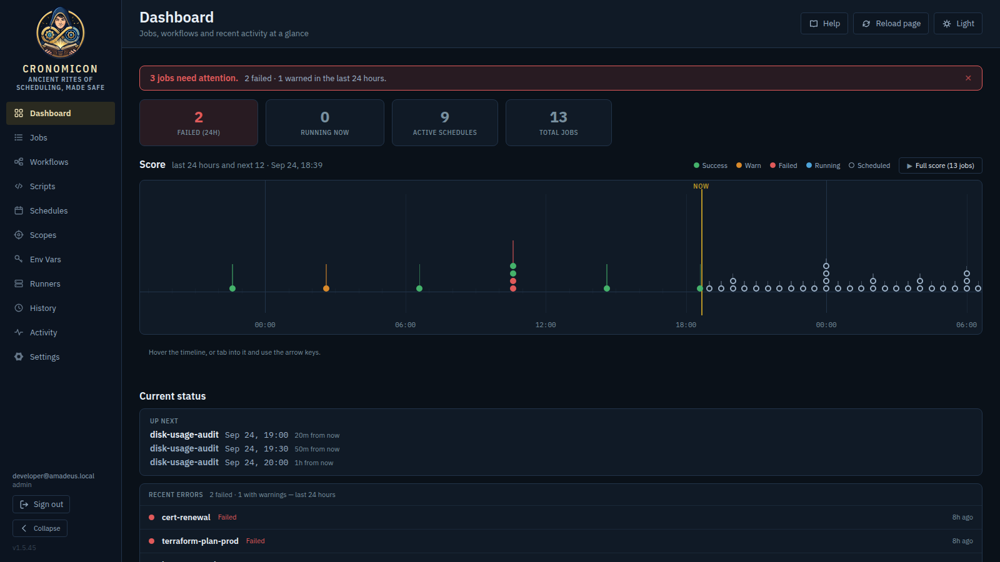
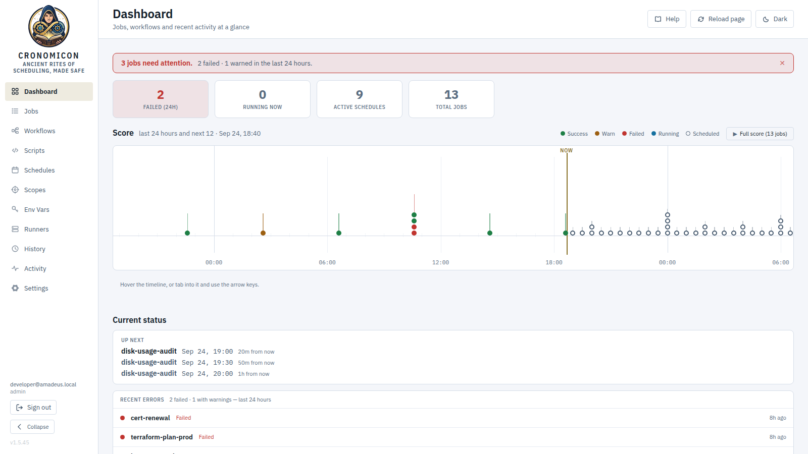
5.1 Stat tiles
| Tile | What it counts | Click target |
|---|---|---|
| Failed (24h) | Runs that failed (danger) in the last 24 hours. |
/runs?result=fail |
| Running now | Runs currently in running status (SSH connection-tests excluded). |
/runs?result=running |
| Active schedules | Jobs whose schedule is set and not manual. |
/schedules?tab=inventory |
| Total jobs | Total number of job definitions. | /jobs |
The row is left-aligned and sized to its content rather than stretched across the page, and the two tiles that can demand action — Failed (24h) and Running now — carry a colour tint only while they are non-zero. The two reference counts stay quiet always. A zero never looks like a five-alarm failure. Every tile is a link: each one lifts on hover, and Enter or Space follows it from the keyboard.
5.2 The Score & Current status
The Score is a single timeline of a fixed window — 24 hours back, 12 hours ahead — with hour ticks, day boundaries in the application timezone, and a gold playhead at the current instant. Each run is a mark: a stem and a notehead.
- Filled notehead = it ran. Hollow notehead = it is scheduled — the tense is carried by the mark itself, not just by which side of the playhead it sits on.
- The stem's height is the run's duration, on a logarithmic scale — real durations cluster tightly with the odd outlier, so a linear scale would make every stem the same height.
- Colour is the outcome, from the same vocabulary as everywhere else: Success Warn Failed Running, and a hollow mark for Scheduled. The legend above the staff spells this out. A scheduled mark carries no outcome, so it is drawn in a neutral ink — but a heavier ring than the surrounding muted text, because a hollow mark is its ring, and the marks that predict the future should not be the faintest thing on the plot.
- Near-coincident marks merge into one, and draw as a chord. Grouping is by
rendered proximity, not exact timestamp equality, so runs launched seconds or
minutes apart do not draw separate noteheads at indistinguishable x and smear into each other.
The merge distance is one notehead plus its gap, which on the fixed 36-hour window is about
18½ minutes. A cluster anchors on its
earliest member, so a lone mark never moves and nothing is displaced further than the
width of the mark itself. The group is drawn as a chord rather than a numeral:
one pip per member, stacked and severity-sorted with the worst outcome
lowest, nearest the staff line, sharing a single stem sized by the longest member — the
way notation draws simultaneous notes. Each pip keeps its own outcome's colour,
so a cluster of six successes and one failure reads as six green and one red rather than
painting entirely red. The stack caps at 8 with a
+koverflow that folds from the mildest end, so an overflow can never hide a failure. Marks are never nudged along the axis: clustering changes the vertical, never the time.
Reading a mark. Hover anywhere along the staff and the nearest mark is picked up — you do not have to hit a 10px target. The readout is a fixed slot beneath the staff (it never moves, so your eye doesn't chase it). For runs it is a small table — one row per run in the hovered cluster — giving the job, its status, its own start time with seconds (a cluster is runs within one notehead's width, not one instant, so "together or in sequence" is answerable), how it was triggered (by a person, a schedule by name, a reaction, a token, a file, or a workflow step), the executor and runner (SSH or Runner · name), duration, the trace id (click to copy the full value) and a View run link into History. A scheduled mark lists only job, status and the instant it fires. At rest it is a plain caption line rather than a bordered card: with nothing hovered its only content is the instruction, and a framed box around an instruction reads as an empty panel. It takes the card back the moment it is carrying a mark, and it reserves its height in both states, so hovering never nudges the page. If a dashed vertical line appears in the forward half, the schedule projection was capped there — “later scheduled runs are not shown”. It marks a limit of the projection, not the end of your schedules.
Keyboard. The plot is a single tab stop. Tab into it, then ← / → step mark to mark, Home / End jump to the first or last, and Esc clears the selection. Each mark is announced with a real name — “nightly-backup, Success, ran Jul 28, 16:00” — and a coincident group announces its count and its worst outcome.
Full score. The Full score (N jobs) button sits in the panel's own header, beside the legend, and expands one staff per job, grouped by run type, sharing the same axis and playhead — this is where a job firing every 30 minutes stops being a repeated table row and becomes a visible pulse. The button then reads Collapse.
Quiet jobs are folded. A job with nothing in the window — no runs behind, no fires ahead — is collected into a single labelled row at the foot of the panel: “+7 quiet jobs — no runs or scheduled runs in this window”. Click it and every staff returns, each quiet one an empty lane that reads correctly as a rest; the row then offers “Hide 7 quiet jobs”. A run type whose jobs are all quiet takes its section header with it. The count is the point: a job you cannot see is still accounted for, which is why the fold names how many it holds rather than silently dropping them — on a large install most of the panel's height was otherwise spent on blank lanes.
Expanding replaces the single lane with the per-job staves inside the same bordered panel: one view at a time, never one view stacked on another, and the header, caption and legend stay put across the swap. Per-job staves cluster near-coincident runs exactly as the compact lane does.
Past marks are filled, scheduled ones hollow, the gold line is now, the tall stem is a long run, and the stack of three is a chord — three runs close enough together to share one mark:
Success Warn Failed Running Scheduled — the three stacked pips are three runs sharing one mark, each keeping its own outcome's colour.
5.3 The verdict strip & Current status
The Score answers when. It does not answer “is everything okay?” in a sentence — and at rest, before you hover anything, its readout says only “Hover the timeline, or tab into it and use the arrow keys.” That sentence is the verdict strip's job, and it is stated first, at the top of the page, in one of three states:
| State | What it says | What it does |
|---|---|---|
| All clear | “All 14 jobs healthy. Nothing has failed or warned in the last 24 hours.” followed by either “Nothing running.” or a count of what is (“2 running now”). | Quiet — a plain line, no colour. The running count links to History. |
| Needs attention | “2 jobs need attention.” over the exact totals — “1 failed · 1 warned in the last 24 hours.” | Red-tinted and clickable: it scrolls you down to Recent errors on this same page, where the jobs are named. It is also the one state you can dismiss (✕) — see below. |
| No jobs yet | “No jobs yet. Create a job in Compose and it will report in here.” | An invitation on a fresh install, rather than a blank page. |
Dismissing the attention strip. Once you have seen it, the ✕ on the right puts it away — the strip is a summary, and there is no sense in it nagging you through the twenty minutes you spend fixing the thing it named. Two rules make that safe:
- It comes back the moment anything changes. The dismissal remembers the exact situation you acknowledged — which jobs, at what severity, how many times, and when each last failed. A new job failing, an existing one failing again, or a warning turning into a failure is a different situation, and the strip returns saying so. Dismissing can silence what you have seen; it can never swallow news.
- It never hides the evidence. Only the one-line summary goes away. Recent errors below still names every affected job, and every row still links into History.
The dismissal is remembered per browser (alongside your column layouts and widths), so it survives a reload and applies in every tab on that machine — and, being a local preference, it is yours alone: dismissing it does not silence the strip for anyone else. Colleagues see the alert until they acknowledge it themselves. There is nothing to dismiss in the all-clear state, so no ✕ appears there.
Two details worth knowing. The all-clear is deliberately quiet — there is no green banner celebrating a normal day, because a strip you learn to ignore is no use on the day it turns red. And the counts come from the server's exact totals rather than the page of runs the browser happens to have fetched, so a truncated Recent errors list can never understate the verdict. If a fleet-wide working calendar is suppressing fires, its banner sits directly beneath the strip — it is the explanation for an otherwise unnervingly quiet day.
Beneath the Score sit the two blocks that carry the detail, in the order a glance wants them.
| Block | What it says | Click target |
|---|---|---|
| Up next | The next three scheduled runs, soonest first — each naming its job (or workflow — tagged workflow, since a workflow's projection is not a job's), the absolute time in the application timezone, and a relative delta. The soonest is the loudest of the three; the fourth onward belongs to Upcoming, which the block links to. When nothing is projected it reads “Nothing is scheduled in the next 24 hours” — qualified, because reactions are not projected here and “nothing scheduled” does not imply “nothing will run” (§9.3). A fire a working calendar will suppress is skipped over here and omitted from the Score — it is not an upcoming run — even though the Upcoming tab still lists it struck through. | /schedules?tab=upcoming |
| Recent errors | The last 24 hours of failures and warnings, folded per job — a job that flapped seven times is one row carrying a count, not seven identical rows. Failures sort before warnings, and the header totals them (“3 failed · 1 with warnings — last 24 hours”). It appears only when there is something to report; on a clean day the section simply ends after Up next, because the strip at the top has already said so. | Each row → /runs?job={name} |
Each feed is capped at one page of runs, so on a very bad day the per-job counts in Recent errors are floors rather than totals — and the box says so, with a final row offering “Some older runs are not listed — open History for everything.” The verdict strip's own counts are unaffected: they read the server's totals.
Clicking a row opens History → Executions at
/runs?job={name}. That job filter is applied
server-side, not to the page already fetched — which matters, because the
free-text Search box beside it refines only the current page. A job whose runs sit past
page 1 would otherwise have produced a confident “No matching runs” while the pager
still counted every run in the system. The filter shows as a clearable chip
(Job: nightly-backup ✕), because a short table with no stated reason is the failure
mode of arriving pre-filtered; the pager reads the filtered total (“1–6 of 6 runs”).
This is unrelated to the Dashboard, but worth knowing: the separate /api/v1/activity
endpoint is sometimes blocked by ad blockers (uBlock / EasyPrivacy), producing a
NetworkError on the Activity page that looks like a
backend fault but isn't. Allow-list the host or disable the blocker for it.
6 View Reference: Jobs
The central table of every job (both sources), with status tabs, search, an expandable
detail panel, and inline lifecycle controls. It loads from GET /jobs and refreshes
after any successful action. The page describes itself as “Run your scripts on a schedule,
across your hosts”, because jobs may be synced from GitLab or authored in Cronomicon (§2.2).
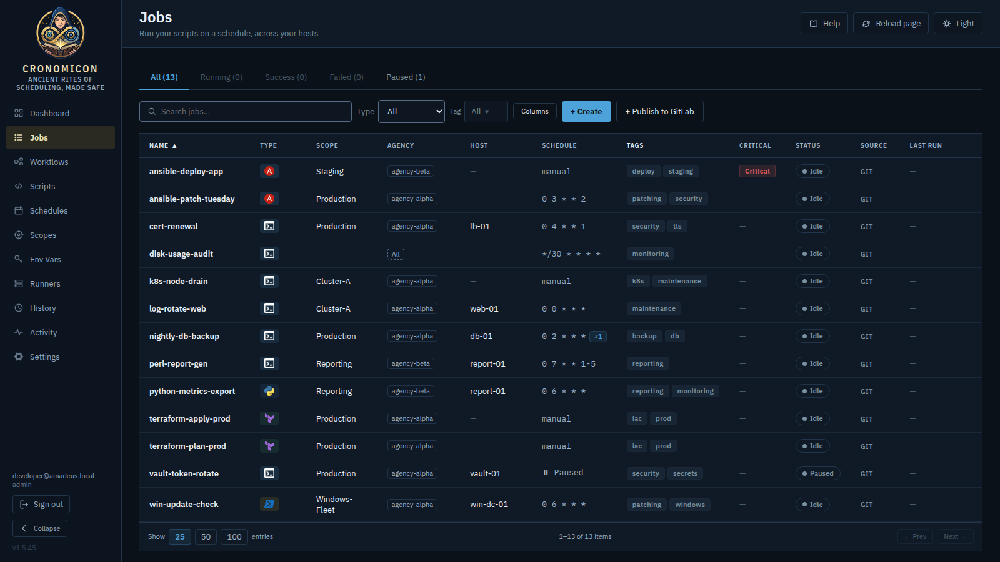
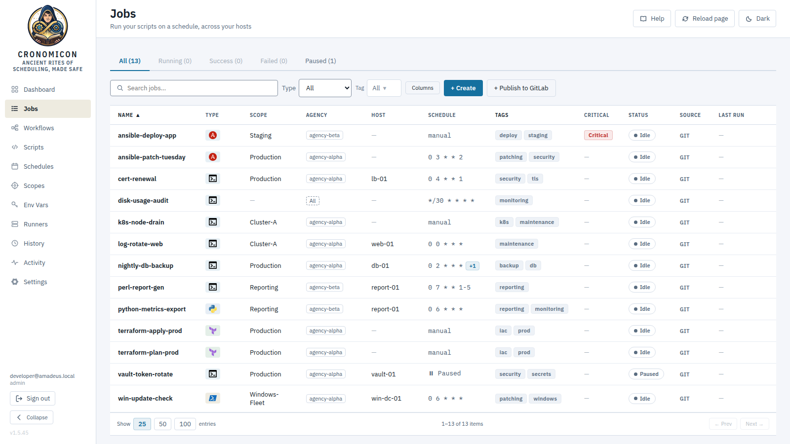
6.1 Tabs, filters & entry points
Five status tabs (each with a live count) filter by the job's aggregate status — note the friendly label mapping:
All Running → running Success → success Failed → danger Paused → paused
The tab is called Success on Jobs and on Workflows alike: one product should not have two words for one outcome, and every tab label comes from the same vocabulary the rows themselves use (Appendix D). A tab whose count is zero is dimmed — still clickable, because “Failed (0)” is a real and welcome answer, but quiet enough that your eye lands on the tabs with something behind them.
- Search & Filter: Search matches name, scope, and host. The Type dropdown filters by run type, and the Tag dropdown filters by user-authored tags. Search + type + tag + tab combine with AND.
- Folder browsing. Jobs organized into GitOps sub-folders (e.g.
jobs/db/backup.yaml) render as a breadcrumb + drill-in folder tree, one level at a time (the active tab/type/tag filters apply first). Typing in Search flattens the tree to a flat result list with each row's full repo-relative path; clearing it returns to the tree. Folder placement never changes a job's identity, detail route or any reference to it (see §8 for the shared folder browser). The Jobs list fetches the whole catalog at the server-max page size (pageSize=200) and then pages it client-side. Searching flips to a flat result list with a Show 25 / 50 / 100 entries selector (default 25) beneath the table; while browsing the folder tree each level pages at 25 rows. If the catalog ever exceeds the 200-row resident cap an honest banner appears above the table — “Large catalog ({N} jobs). Only the first {N} are loaded — filters, search, and paging apply to those.” - + Create opens the in-app Job Composer
(
/compose) — shown to admins. + Publish to GitLab opens the GitOps publish builder (/jobs/publish) — shown to admins and approvers (the Publish capability). - The list shows the Source of every row: CRONOMICON
(composed in-app) keeps a tinted pill, while Git-authored rows read as quiet
git text. The two
are deliberately lopsided — in most installs nearly every row is Git-authored, so a pill on each
of them is a column of identical badges, and the row worth spotting is the exception. The
Schedule column shows the cron,
manual,⏸ Paused, or a blue +N badge for multi-schedule jobs. - An empty cell shows a faint dash. Every catalog does this: a job with no host, no tags or no last run gets a — quiet enough that it recedes, rather than a column of dashes competing with the values beside them. It stays a dash rather than going blank, because a blank cell in a sortable column reads as something that failed to render; screen readers announce it as “no value”.
- Operator-Owned Tags: Every row displays its tags. Expanding a row reveals an inline tag editor where any logged-in user can add or remove tags (session + CSRF only, no role gate). These tags are stored purely in the local SQLite database and are preserved across GitLab syncs; they are never written back to Git.
- Critical is its own column, immediately before Status, showing the Critical marker for any job an operator has annotated as such (the marker itself is set in the expanded row). Click the column head to sort by it and float the critical jobs to the top. Workflows carries the same column, before its Result column. It is a display marker: Cronomicon does not treat a critical job differently at run time, it makes sure you can see which ones they are. Hide it from the Columns menu (§3.4) if your fleet does not use annotations.
- Empty list? “No jobs yet. Jobs are synced from the jobs/ directory of the definitions repo, or authored in Compose.” is normal on a fresh install, and — if you hold the Compose capability — it offers a Create a job button. That is distinct from “No jobs match your filters,” which offers Clear filters instead: every empty state names a next step, and “nothing exists yet” and “nothing matches” are never worded the same way.
6.2 The job detail panel
Click any row (not the Actions cell) to expand an in-place, read-only detail panel — the row is also
reachable with Tab and opens on Enter or Space — showing executor, last/next run, last duration, a Waiting
because line when the job is queued (a reason, spelled out rather than the raw
runner_lost-style wire value), a per-entry Schedules list, the
executable source (a linked scriptRef →, an inline command, an inline script, or a
script-file path), a read-only Run inputs section (shown only when the job declares
them — each row lists the label/name, a ● required marker, the default, and any allowed
options), a reference-bindings editor (§11.6) where an
admin declares the Secrets / Variables / SSH keys this job injects at run time — that is one
row per reference carrying the kind dot, the derived CRONOMICON_* name, the
resolve verdict, the state pill, the reason and the remove control (healthy references get a row too, so the section stays a complete
inventory of what the job consumes) — a duration sparkline of the last ~20 runs,
and a Recent runs table. Click a run row to lazily load its redacted
log; a Reason: line appears above it for killed / lost / timed-out runs.
A job that has never run says so once. The panel lists only the facts it actually has, collecting the absent ones into a single muted “Not recorded: …” line rather than a grid of labelled dashes. When a job has no runs at all, that line would be an inventory of four nothings, so it collapses to “No runs yet — Run it to start recording history.” — the Run button being right there at the top of the same panel. Facts absent for other reasons (a job with no working calendar, say) keep the Not recorded line, which is where naming them earns its keep.
The panel opens with the Notes section — the operator annotation surface: the Critical marker, a Contact (who to reach when this breaks), and free-text notes with an attribution line saying who wrote them and when. Any logged-in user can edit them (+ Add a note / Edit), they are stored in Cronomicon only — never written to Git, kept across syncs — and they sit on their own opaque card so the prose reads clearly against the expanded row's tint instead of floating on it. Long notes cap at five lines and scroll, with a fade hinting at more below.
Top right of the panel, before the lifecycle actions, sits Refresh — and the same control appears on every expanded panel across the app (Workflows, Scripts, Schedules, Runners, Scopes, Env Vars, History drill-ins). It re-fetches everything that panel shows — all of its requests, including nested ones — without touching the rest of the page: your expanded rows, filters, pager position and half-typed edits all survive, which is the difference between it and the top bar's Reload page. While work is in flight it reads Refreshing… and disables; it needs no permission and is never hidden.
In the Recent runs table, opening the log of a run that is still going follows it live — see the tailing note in §12.3; a finished run's log loads once.
Two of the panel's fields answer where the job runs, and they sit together. Executor says what kind of thing runs it. Run on says which runner may claim it: either “Any eligible runner”, or a runner tag that narrows it to the runners carrying that tag — the ones on the right network segment, in the right datacentre, wherever the job needs to be. A count beside the tag tells you how many of those runners are online.
Both are reported here, not set here. A job's placement is authored in two places and two only: when the job is built (the Composer's Run on field, or — for a Git-synced job — its YAML), and per run in the Run dialog's Where it runs section, which repoints a single run without touching the definition (§6.5). The detail panel states the resolved answer rather than offering a third place to change it.
For a Git-synced job that means the durable answer lives in the repository, and changing it is a change to the YAML. When the pinned runners are gone and the work has to move now, the Run dialog is the escape: it can send one run to another tag, or to no tag at all, without editing anything.
A pin grants nothing: it can only narrow which runners may claim a run, never widen it, so it can never reach a runner your department's rules would deny.
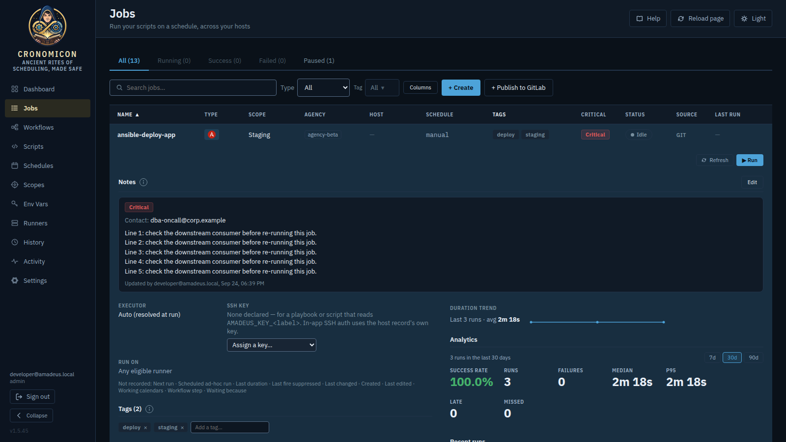
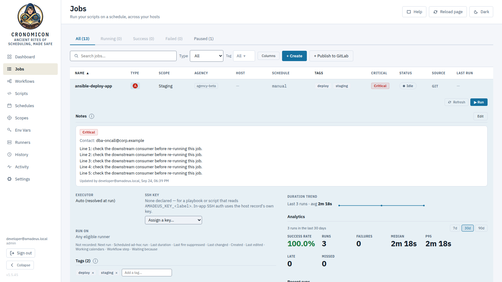
6.3 Lifecycle controls
▶️ Run
Opens the Run dialog (titled “Run {job}”) with four
optional override surfaces — Target scope, Executor, a per-run host
subset, and per-run environment overrides (detailed below). On an error
(422 SSH-for-ansible/tf, 422 a host not in the scope,
403 a scope outside your allowed scopes, or 409 concurrency) the
dialog stays open with an inline message so you can correct and retry.
⏸️ Pause / ▶️ Resume
Pause is shown for scheduled jobs and stops future
scheduled fires (Schedule → paused, Next run → —). It
does not stop a running execution, and you can still trigger a manual Run
while paused. Resume is shown whenever a job's status is
paused — it does not depend on the
job still having a schedule (see below).
🛑 Stop run…
Replaces Run when a job is running/queued (labelled Stop run… so the destructive action names its object and a bare Cancel keeps meaning “close this dialog”). The modal offers Stop latest (terminate the most recent active run) or Stop all queued (drain every stacked-up copy — useful when a frequent schedule piled up with no runner). Stopping also asks what the stop meant — see §6.6. Stop all queued deliberately does not ask: those runs never started, so there is no outcome to record about them.
✏️ Edit / 🗑️ Delete
Both appear in the expanded row for cronomicon-source jobs, to
users with the Compose capability. Edit opens the Composer;
Delete confirms first, then removes the job — its run history is
kept, its definition, schedule and references are not. Git jobs are never editable
or deletable in-app (the server refuses with 409) — use Publish to
GitLab.
Delete is also available inside the Composer's edit view; the row control and the Composer's are the same action.
Pause is recorded independently of the schedule, and nothing about removing a schedule clears it — not the Composer, not deleting a schedule definition, not a GitLab sync. So Resume renders on the paused status alone: a paused job whose schedule has gone away still shows its badge and still offers Resume, without re-adding a schedule or calling the API directly. Pause keeps the schedule condition, which is fair for it — pausing a manual-only job suppresses nothing.
Pause stops future scheduled fires; Stop terminates an in-progress or queued execution. Use Stop all queued to clear a backlog of runs that stacked up because no runner was available.
6.4 The run lifecycle
For runner runs, a kill is requested rather than instantaneous — the runner picks it up on its next poll (≈ every 60s; the in-app SSH executor checks every ~2s). The toast reads “Stop requested: {job}”, and names the disposition when it is not the default.
6.5 The Run dialog & per-run overrides
Triggering a job opens the Run dialog (titled “Run {job}”), which lets you override five things for this one run. All five are optional — accept the defaults to run the job exactly as composed.
The dialog’s shape, top to bottom:
- A recap sentence that never leaves the screen. At the top of the commit zone,
outside the scrolling body, one line states what pressing Run will do —
ansible-deploy-app · all 2 hosts in Staging · via Runner · now
— read from the same live state the run submits, so it cannot drift from the run.
Fragments that deviate from the job’s defaults (a host or group subset, a raw
--limit, a non-default executor, a scheduled instant) take a warning or info accent, check mode is appended when ticked, and a count of missing answers rides the end of the line. The confirmation window restates it — at the instant of commit, redundancy worth keeping. - Five sections, one home per idea. Inputs leads — the
answers panel and its readiness meter (described below), the per-run
environment overrides as a collapsed Add an override subgroup directly
beneath the answers they outrank, and the added References — everything
the run receives, so the precedence chain reads top-to-bottom on screen.
Targets holds scope and the host/group limits — where the run goes.
Method holds executor, Run on and Connect as — how it gets
there. Timing is fourth (now, or parked for a chosen instant), and
Advanced holds ansible’s flags and the raw
--limit; on a bash or python run it opens to a sentence pointing back at Inputs rather than an empty box. The bars also carry their weight: Inputs is visually primary, Advanced and the nested override subgroup are quiet — but collapsed summary text never shrinks with the bar, so CHECK MODE on the shut Advanced line stays as readable as any summary. And the explanatory helper under a control appears when you engage with it — focus lands in the field, or it leaves its default — while anything about risk never hides: the plaintext-secret caveats, the reserved extra-var guard, invalid-subset and limit-conflict verdicts and the scope warnings are permanent. - A fixed-height commit zone — that grows a rail when wide. The footer keeps only the recap, the run error, a one-line escape for unfilled answers and Cancel / Run; the prose about what an unfilled answer means lives in the answers panel beside the rows it names. At 1200px and wider the dialog widens to 960px and splits: sections on the left, scrolling as before, and a fixed This run rail on the right carrying the recap, then the run summary — every answer and setting the run will use, with its value, grouped under the same five names as the sections — Inputs, Targets, Method, Timing and (only when something is active) Advanced — then the error, the escape and the buttons. The rows you changed from the job's defaults are the highlighted ones: they render as bordered cards in the warning colour and name the default they replace, while a fact merely being stated stays flat and quiet. It updates live while you edit, so ticking check mode makes its row appear beside your hand rather than after the first press of Run. Below 1200px the stacked footer is the narrow layout, and resizing across the breakpoint mid-edit preserves every setting.
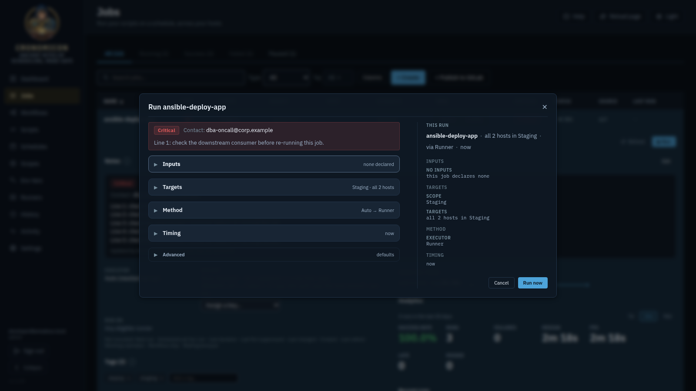
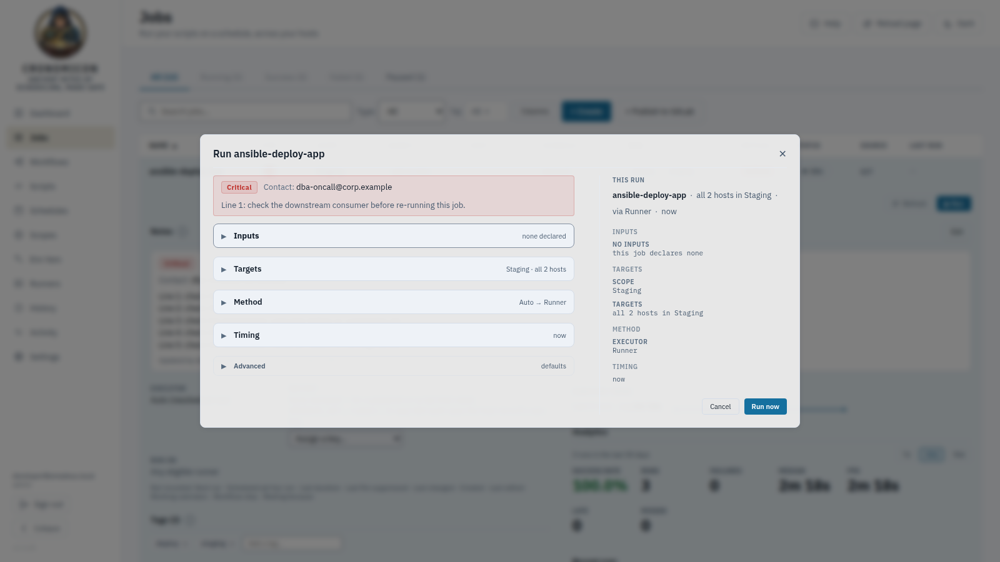
ansible-deploy-app · all 2 hosts in Staging · via Runner · now — restating every
setting under the same five headings, with Cancel and Run now beneath. Below
1200px the same fragments stack into the narrow footer instead.
For ansible/runner runs over an inventory scope, Targets also carries
inventory-group targeting, and Advanced the raw --limit (both
covered below). The overrides themselves:
Target scope
Defaults to “Job default ({scope})”. Pick another scope to redirect
the run; an amber note warns if the chosen scope doesn't declare the job's type (allowed
but may stay queued). Overriding to a scope outside your allowed
scopes is rejected 403.
Executor
An SSH / Runner button pair. SSH is disabled
(“Unavailable”) for ansible/terraform; choosing it anyway is rejected
422 invalid_executor and the dialog flips you to Runner.
Hosts (SSH only)
When the effective scope has hosts and the executor is SSH, an unticked
“Limit to specific hosts” checkbox reveals a per-host multi-select. Left
unticked it runs on all hosts in the scope; a host that isn't a scope member is rejected
422 scope_membership. A runner run always targets the full scope (a subset is
honored only by cronomicon-inventory runners).
Environment overrides
These live inside Inputs, as a collapsed Add an override subgroup directly beneath the declared answers (its summary reads N set or none): a + Add variable key/value editor whose plaintext map is applied to this run only, on top of any schedule env — the override wins per key, including over a declared input of the same name, which is exactly why the two sit adjacent rather than in different sections.
Run on — choosing a runner
A tag field directly beneath Executor (runner runs only — the in-app SSH executor has no runner to choose, so the field is absent there). It answers which runner, where Executor answers what kind. Type or pick a runner tag; only runners carrying that tag may claim this run. Each suggestion shows how many matching runners are online, so you are picking capacity rather than typing a label.
It arrives pre-filled with the pin the job would use anyway, so you can see where a run is going before you send it. Two buttons make the alternatives explicit: Run on any runner releases this run only from the job's pin — the break-glass answer when the tagged runners are down and the work still has to go somewhere — and Use the job's pin puts it back. Neither edits the job.
Pinning to a tag nothing is running is allowed: an amber note warns the run will sit queued until a matching runner appears, and lets you send it anyway. The runner may be enrolled minutes later, and a run that waits is easier to explain than one that was refused. The collapsed Method summary names the pin (on vlan-dmz, or unpinned for this run) so it can never be in force with nothing on screen saying so.
Connect as
A username field and an SSH key dropdown (the stored SSH Keys, by label) that replace each target host’s configured login/key
for this run only — per-field, so you can change just the user. Bastion hops
are unaffected. Ansible runs offer it too: there the pair is delivered as ansible connection
variables, so it overrides ansible_user /
ansible_ssh_private_key_file from the scope's inventory for every host in the run.
Terraform still doesn't offer it — its providers authenticate, not SSH. Picking a key
needs the Manage Env Vars permission — the dropdown shows disabled without it;
the username alone does not.
And four behaviours worth knowing cold — shown the way the dialog itself would show them, as collapsed bars whose right edge is the one-line summary:
A job may declare its own connect-as pair — in the Composer or in Git YAML
(spec.ssh_user / spec.ssh_credential) — and it applies on
every run path: manual, scheduled and workflow steps. The Run dialog then shows
those values as the displayed defaults (“deploy (from job)”); leaving them untouched
submits nothing and the job default applies. Precedence per field: your per-run override
→ the job’s declared identity → the host’s configured user/key (on ansible, the scope
inventory's) → root. On runner runs the chosen key is delivered to the
agent for that run only — such runs are claimable solely by runners flagged for secret
injection, and a local-inventory runner refuses them rather than running as the wrong identity.
Inputs
If the job declares run inputs — the same set listed read-only in its detail
panel (§6.2) — the dialog opens with the Inputs section: a
<select> when the input defines options, otherwise a text input, each
pre-filled with its declared default. A summary banner above it states the whole picture at
a glance — e.g. “5 inputs — 1 needs a value — 2 awaiting confirmation”.
Every input shows the value that will actually be sent and where it came from, as a
Will send KEY=value line plus a provenance chip:
- you — you typed or selected it.
- default — pre-filled from the declared default, untouched.
- override — an Environment overrides row further down uses the same key, and wins.
- job env — the job's own env supplies it; the field isn't needed.
A required input in two distinct states: ● required means nothing at all will
be sent, and ● confirm means a default will be sent but you haven't affirmed
it. Clicking Use default ✓ — or editing the field — confirms it. Only the first
state gates the button: with a required input empty the button reads “Run without N
answers” and stays disabled, the prose naming the missing inputs sits in the answers
panel beside the rows it describes, and you proceed by ticking the one-line Run without
it/them escape in the footer — the only part of the warning that stays pinned,
because it is what ungates the button. The run is never blocked outright — the server accepts it either way — but the choice is
deliberate and recorded. Answers (defaults included,
even when untouched) ride the same per-run env path as the overrides below.
An Env Vars row of the same name existing in the scope does not fill a
required input, and the dialog never claims it does. Env Vars reach a run only through an
explicit reference binding and only under the derived
CRONOMICON_VAR_<name> key — nothing publishes a bare NAME, so the
run would proceed with the variable missing and be recorded as unfilled. Supply the value as a
run input, a job-level env row, or an explicit reference.
--limit (ansible /
runner)When the effective scope carries a parsed Ansible inventory, a Groups control
(“Limit to inventory groups in {scope}”) targets whole inventory groups instead of
individual hosts (targetGroups[]): an SSH run expands the chosen
groups to their member hosts, a runner run passes the group names as
ansible --limit — both hit the identical set. For an ansible
runner run an Ansible --limit field in Advanced
(ansibleLimit — the collapsed Advanced summary names an active pattern, and
the host/group chips’ tooltip points at it) takes a raw pattern for selections the picker
can't express (e.g. webservers:&staged:!quarantine) and overrides the
group/host selection. The --limit field is ansible/runner only —
supplying it on an SSH run is rejected 422 invalid_executor; an unknown group is
rejected 422 group_membership.
Per-run env values are plaintext, not secrets (“don't paste secrets”) —
though a mis-pasted secret is still masked best-effort in the log (the override values are fed
to the per-run redactor). What you overrode
({env, hosts, scope, executor, sshUser, sshCredential} — the key by label,
never material) is persisted with the run as an override envelope and surfaced
in the History run-detail drawer under “Ad-hoc overrides (this
run)”; a plain scheduled/default run has no envelope. The effective values still land
in the run's own scope/host/executor/env so both executors apply them with no change.
6.6 Stopping a run, and saying what it meant
Ending a run records a disposition: whether you stopped it because it was destroying something, because its work was already done and the process had hung, or because you needed the host back should not read the same afterwards, and should not all count as a failure.
The control is Stop run…, and it asks one question: what happened?
| Record it as | Use when |
|---|---|
| Stopped default | You are not saying anything about the work. This is the unclassified stop — it counts as a failure in the job's health and in History's Failed filter. |
| Failed | The work was going wrong. Same status a genuine failure records. |
| Success | The work was effectively done. In a workflow this lets the remaining steps run — see below. |
| Warning | It finished, but not cleanly. |
Two halves are recorded separately and both are kept: the status is what happened, and stopped by is the proof a person ended it. So a run can legitimately read Success · stopped by you.
This is the case worth remembering. A workflow treats a stopped step as a failure and halts — so if step three hung with its work already finished, you would otherwise have to start the whole workflow again and redo step three's work to reach steps four and five. Stop it, record it as Success instead, and the workflow carries on. An unclassified stop still halts the workflow, deliberately: saying nothing about what happened is not the same as saying it was fine.
Nothing changes unless you choose. The dialog defaults to Stopped, and Stop all queued never asks — those runs never started, so there is no outcome anyone could assert about them.
In History, a Stopped marker appears on every run a person ended, and a Stopped filter (Stopped by a human / Not stopped) finds them. Both matter more than they look: a stop recorded as a success correctly appears under the Success filter, so without the marker “successful runs” would quietly start including runs somebody stopped. The exit code is deliberately left alone — the stop signal reaches the runner on its next poll, so the process may still be alive when the outcome is written, and inventing an exit status would assert something nobody observed.
7 View Reference: Workflows & Workflow Editor
Workflows chain Jobs into ordered pipelines with optional parallel groups, conditional branches, and data passed between steps. The list view runs and inspects them; the Workflow Editor authors in-app ones — on a visual graph canvas that handles fully nested pipelines (§7.4).
7.1 The Workflows list
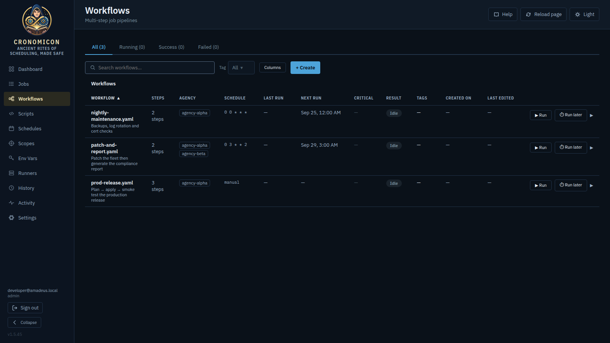
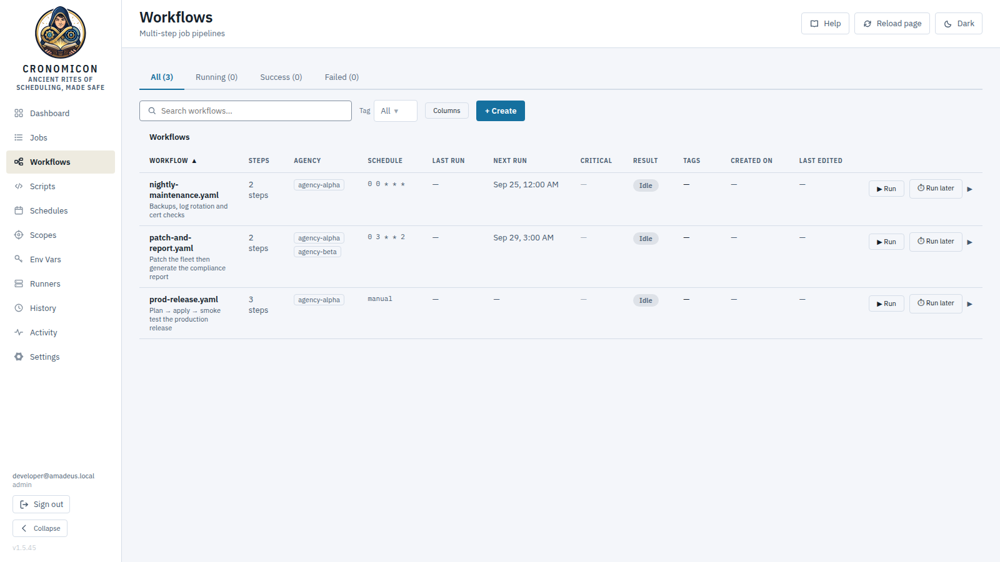
- Tabs All Running Success Failed (live counts — and each tab counts what its label promises: the Failed tab includes a killed workflow run, and Running includes a queued one); search by name/description, and filter by user-authored tags using the Tag dropdown; + Create opens the editor. Like the other catalogs, workflows in GitOps sub-folders render as a folder tree, and searching flattens to full-path results.
- Columns: Workflow (name, description, optional Paused pill), Steps, Schedule, Tags,
Last Run, Next Run (separate columns), Result, Created On,
Last Edited. Last Run/Result come from the most-recent workflow run, and Next Run is computed
from the bound schedules. Result pills: Running Success Warn Failed — or a grey Paused pill (Next Run →
—) when the pause is on. (This column uses the same words as every other run surface.) - ▶ Run on each row triggers immediately (toast: “Run queued: {name}” — the same sentence the Jobs button produces). Expand a row to see the step-chain diagram, the inline tag editor (SQLite-only, preserved on sync, editable by any logged-in user), a ↓ Run History filter, and the Pause / Resume toggle (§7.3). Cronomicon-source rows also carry Edit and, Delete — both gated on the Compose capability, Delete behind a confirm that keeps the run history and removes the definition, its schedule and its references. The editor offers the same delete. All of these sit together at the top right of the expanded detail, matching Jobs and Runners.
Note: a workflow's notify-on-trigger indicator is reserved and non-functional — it has no backing data source yet, so the notify pill never renders and the matching “ops notified” trigger toast never fires. (The same field on the Jobs detail panel always reads “No.”) Don't rely on it to signal that notifications are wired.
7.2 Reading the step chain
Steps are numbered and connected by → arrows (positional order). Three kinds render:
- Job step — a single chip with a status dot.
- Parallel group — chips inside a dashed
∥ parallelbox, run concurrently. - Branch — an amber
◆ conditionnode with a green PASS arm and a red FAIL arm.
The lower Recent Workflow Runs panel lists runs with trace IDs and child-job counts; click one to open its vertical Execution Timeline (per-step status, duration and timing; system/bookkeeping steps show a ⚙ icon).
7.3 The per-instance Pause toggle
Pause is the only workflow field the UI can change on any workflow,
including a Git one — without editing YAML. Pausing stops scheduled firing (Next Run →
—) and rejects manual triggers with 409 workflow_disabled. It records
who paused it and when. Use it as an emergency kill-switch for a misbehaving pipeline;
Resume restores it.
7.4 The Workflow Editor — Simple ｜ Graph (Advanced)
Creates and edits cronomicon-source workflows, optionally bound to schedules. (A Git-authored workflow opens read-only here — the page directs you to the GitLab publish flow instead.) The editor has two modes that convert into each other losslessly:
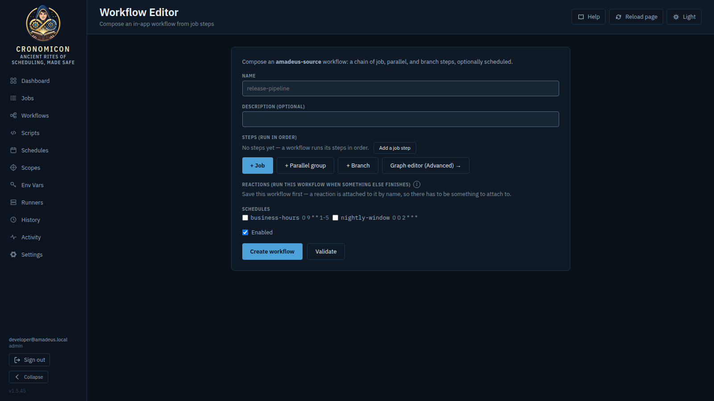
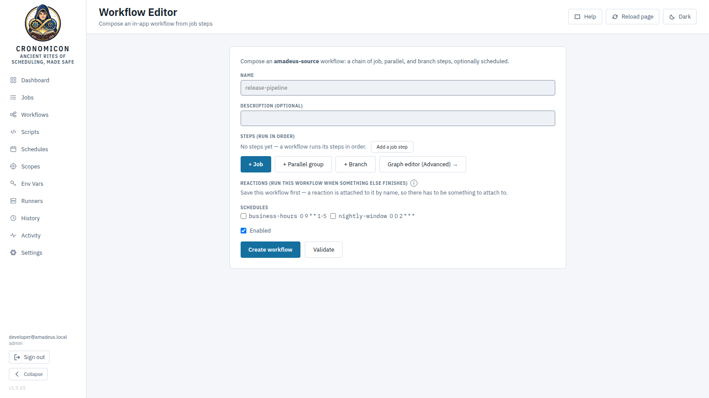
- Simple editor — the linear list, best for flat chains. Pick a
Name (slug
^[a-z0-9][a-z0-9_-]{0,63}$), add steps with + Job / + Parallel group / + Branch (job pickers badgedgit/cronomicon), reorder with ↑/↓, tick schedules to make it cron-driven, leave Enabled on, and Create workflow (or Save). Each job step's Advanced ▼ reveals its optional label, its Inputs (A12) rows (§7.5), and per-step retry overrides (Retries · Backoff (s) · On error). A read-only canvas preview renders beneath the form; Graph editor (Advanced) → switches modes. - Graph editor (Advanced) — the visual canvas, and the only place to author nested pipelines (branch-in-branch, parallel-in-branch), which the linear list cannot represent. A metadata panel (name · description · Enabled · schedules) sits beside a structured step tree — + Job / + Parallel / + Branch in each lane (a parallel group's lane offers only + Job: containers can't nest inside a parallel), a green Pass and red Fail arm under each branch, and ⋯ per-node advanced fields — above a live rendering of the graph. Illegal edits are blocked as you make them (pickers only offer legal upstream producers), a status line reads “✓ Valid graph” or counts the highlighted issues, and the server dry-run validates again on save.
On the canvas, drag a job's handle onto a downstream job to wire an env input (A12 — §7.5), and drag a node's body to arrange the graph — the hand-made layout saves with the workflow (purely cosmetic; it can never affect execution order) and Reset layout returns to automatic arrangement. A minimap appears once the graph grows past ~14 nodes. Dirty state shows “• unsaved changes” and leaving prompts “Discard unsaved changes to this workflow?”. The Simple editor button switches back only while the graph has no nesting (its tooltip explains: “This graph nests parallel/branch steps — not representable in the linear editor”). Delete workflow (cronomicon-source only) is available in both modes behind a confirm.
7.5 Passing data between steps (A12)
A producing job prints a marker line on stdout; a downstream step consumes it as an injected environment variable.
echo "::cronomicon-output name=VERSION::1.4.2"
steps: - type: job name: build # emits VERSION - type: job name: deploy inputs: DEPLOY_VERSION: # becomes $DEPLOY_VERSION in the deploy job fromStep: build fromOutput: VERSION
- Authorable in-app too: in the editor, add a row under the consuming step's
Inputs (A12) —
ENV_KEY← upstream step · output — via Advanced ▼ (Simple) or the ⋯ inspector (Graph); or simply drag the producer's handle onto the consumer on the canvas. The Git YAML above is the equivalent declaration. KEYmust be an env-var-style identifier (letters, digits, underscores; not starting with a digit). Markers are captured from the raw output before redaction.- A missing or failed upstream output resolves to an empty value, deterministically — it does not fail the run.
- Branch conditions use the same outputs:
type: job_status(passes when a referenced job succeeded) ortype: output_match(compares a captured output via==,!=,contains).
8 View Reference: Scripts
A read-only catalog of the reusable executable units synced from GitLab. Scripts are
always Git-authored — there is no create/edit form here; you commit YAML (or a raw
script file) to the repo and sync. All three Scripts routes (list, detail, body content) are
RequireSession only — no elevated gate — so any signed-in user can read a script,
matching the Git repo it syncs from.
- Columns: Script (name + description, plus a highest-severity lint chip when present), Type (run-type badge), Source
(
command/ inlinescript/file), Tags, Used by (job count), Created On, Last Edited. Like the other catalogs, a Tag filter dropdown is available. - ↻ Git Pull (top-right) triggers a repo-wide re-sync (jobs, scripts, schedules, workflows). It is asynchronous — the button shows “Pulling…”, then “Pull started — list will refresh.”
- A job detail's
scriptRef →link deep-links here (/scripts?focus=<name>); the view fetches that script directly (so it resolves even past the catalog cap), opens the folder containing it, and auto-expands it.
8.1 Folder browsing & the catalog list
Scripts (and Jobs, Workflows, Schedules) can be organized into sub-folders in the GitOps repo and are browsed as a file-system tree. The four catalogs share one component:
- Breadcrumb + drill-in. A breadcrumb (root crumb Scripts + clickable
path segments) sits above folder rows — each a 📁 with the folder name and a right-aligned
“N items ›” immediate count (folders first, then leaves, sorted
case-insensitively). You drill one level at a time; the current folder lives in the URL as
?path=. An empty folder reads “This folder is empty.” - Keyboard nav. With a folder row focused, Enter or Space opens it; Backspace or Esc goes up one level (ignored at the root, so there are no dead ends).
- Search flattens the tree. Typing in Search replaces the tree with a flat result list across all folders, each row labelled with its full repo-relative path. Clearing Search returns to the tree.
- Catalog size. The Scripts list loads the whole catalog (all pages) up to a 1000-script cap. Above the cap it loads only the first 200 and shows “Large catalog (N scripts). Only the first 200 are loaded — use search to find a specific script.”, switching Search to a server-side query. (Jobs/Workflows load their full list in one call, so the cap is Scripts-only.)
- Paging. Whichever set is resident is then paged client-side by the shared “Show 25 / 50 / 100 entries” control (default 25) — the same pager used on Jobs and the Upcoming table. In flat Search it windows the already-filtered match list; in folder-browse it pages the current folder level (folders then leaves). The 1000-script cap and the first-200 server-search fallback above are unchanged — the pager only windows what is already loaded.
A definition's folder location comes from its file path
(source_path, with the scripts/ prefix stripped); its
identity stays its metadata.name (jobs use the id). So moving a
definition into a sub-folder changes where it appears in the tree but never its name,
its detail route, or any scriptRef/scheduleRef to it. (The two
coincide for raw scripts and diverge for Cronomicon YAML wrappers.)
8.2 The expanded detail & the body
Expand a row for the metadata grid (Run type, Executor — “auto (from run type)” when unset, Source file, a 12-char Content hash with the full hash on hover, Synced time), the inline tag editor (SQLite-only, preserved on sync, editable by any logged-in user), an optional Lint section, the body, a “Variables this script uses” panel, a reference-bindings editor (§11.6) — with a Suggest from body button that scans the script to prefill likely Secret / Variable / SSH-key bindings — and the Used by reverse index (the job chips that reference it, or “…it is an orphan.”).
An inline command/script body comes straight from the database. A
file-backed (scriptPath) body is fetched on demand from
GET /api/v1/script-content/{name…} when you expand the row, and renders one of:
“Loading…”, the file (with a Copy button), “Binary file (N bytes) —
view in Git.”, “Empty file.”, “Could not read script file from the synced
repository.” (a 409, e.g. not yet synced / renamed), or a “Truncated to 1
MiB — view the full file in Git.” note. The 1 MiB cap is display-only —
execution and content-hashing are uncapped, so an oversized script still runs.
8.3 Body-lint warnings
Each body is scanned once per sync — on the same read used to compute the content hash — and findings are persisted as advisory metadata. A script with findings shows a Lint section: any danger-severity findings render first in a red banner, then every finding as a chip (the rule id, with the full remediation message on hover); the catalog row collapses them into one highest-severity summary chip with a count. Lint is purely advisory — a finding never blocks a sync, never drops a script, never flips the sync result, and never enters the content hash.
| Rule | Severity | Means |
|---|---|---|
crlf |
warning / info | CRLF / lone-CR line endings that break the remote bash -c shell.
Downgraded to info when every \r falls only on a
comment or blank line (cosmetic). |
non_utf8 |
warning | Non-UTF8 bytes or a NUL byte — likely a binary or mis-encoded file. |
no_shebang |
warning | A multi-line bash/perl/powershell/python body whose first line isn't a usable
#!. Single-line inline commands and ansible/terraform are exempt.
|
shebang_mismatch |
info | There is a #! but it names a different interpreter than the
run type. Advisory — the executor invokes the configured interpreter and ignores the
shebang (#!/bin/sh is fine for bash, pwsh for
powershell; the /usr/bin/env x form is resolved).
|
oversized |
info | Body larger than the 1 MiB advisory cap. There is no execution size limit. |
8.4 “Variables this script uses”
At sync time the body is also scanned for the environment variables it references,
so you can see what a run needs to define before triggering it — the scope's Env Vars are
not auto-injected. The detail panel lists each variable as a status chip: ✓ already provided (the name is defined as an
Env Var or Secret), ● required & missing
(the body gives no fallback), or ○ optional
(the body supplies a default via ${VAR:-…}, shown as =default). The legend
reads “✓ already defined as an Env Var or Secret · ● required · ○ optional (the script supplies
a default).” The same panel is reused in the Run dialog and Job Composer, where each chip also gets a one-click + add.
- Shell-family aware. The extractor understands bash/sh
(
$VAR,${VAR}; a default from${VAR:-x}/${VAR:=x}marks it optional), perl ($ENV{VAR}), powershell ($env:VAR) and python (os.environ['VAR'],os.getenv('VAR'); a fallback inos.getenv('VAR', x)/os.environ.get('VAR', x)marks it optional). ansible/terraform are recognized but not yet analyzed — the panel notes “Variable detection isn't available for {runType} scripts yet.” - Noise is subtracted. Variables the script assigns itself (
NAME=,export,local,read, loop vars), shell special/positional params ($1,$?, …) and ambient vars ($HOME,$PATH,LC_*,BASH_*, …) are filtered out.
Both are computed only at sync time. A script's findings and variables reflect its body as of the last sync, and a Git Pull (full re-sync) recomputes every row — the columns default to empty, so a row that has not been scanned yet reads as having no findings/variables rather than failing.
You don't need a kind: Script wrapper for every file. Raw executables anywhere under
scripts/ (*.sh, *.tf, *.ps1,
*.pl, Ansible *.yml) are auto-registered by extension, and their
reference name is the file's path relative to scripts/, keeping the
extension: a top-level file is backup-db.sh, but
ops-playbooks/site.yml in a sub-folder registers under the name
ops-playbooks/site.yml. A script_ref must match the registered name
character-for-character. (Because a sub-folder script's name is a multi-segment path, the detail
and body endpoints are trailing-wildcard routes — GET /scripts/{name…} and
GET /script-content/{name…} — and clients percent-encode the slashes.)
9 View Reference: Schedules
The single complete scheduling surface, with four tabs deep-linked via
?tab=. The
default landing tab is Upcoming — a bare /schedules (and the
/schedule redirect) opens on Upcoming so you see what fires next first; Catalog,
Inventory and Calendars are a tab (or ?tab=) away. The Catalog tab also supports folder browsing.
📚 Catalog
Reusable schedule definitions (Git + cronomicon) with cron, source badge,
tags, and a Used by blast-radius count. A schedule may carry an
active period; the Inventory tab badges one that has not started yet as
pending (with its start date beneath) and one past its end date as
expired. The Cron column shows whichever rule the entry uses — a
cron expression, an interval (7d), or once — with the plain-words
reading beneath it. Supports a Tag filter dropdown. + New
schedule opens the Schedule Builder; cronomicon rows get
Edit/Delete. Expanding a row reveals the inline tag editor (SQLite-only, preserved on sync,
editable by any logged-in user).
📋 Inventory
Every schedule actually bound to a job or workflow, with State (active / paused / disabled), Next run and Last run. Filter All / Jobs / Workflows. Each owner also carries its working-calendar roll-up (§9.2), and an entry naming a calendar that no longer exists is flagged.
🔮 Upcoming
Projected fires as a flat, soonest-first column table (When · Type · Owner · Schedule · Cron) with resizable columns and a 25 / 50 / 100 pager (default 25); the When column carries each fire’s date and time. A Next 24 hours / Next 7 days toggle sets the window; only enabled, non-paused schedules with a future fire appear. The projection is capped at 500 fires, after which a “first 500” note appears. A fire a working calendar will suppress is shown struck through with the calendar named, rather than hidden.
🗓 Calendars
Working calendars — named sets of dates, such as your company holidays or a change freeze — that schedules can be bound to. Authoring needs the Compose capability; anyone signed in can look. See §9.2.
🔗 Reactions
The cross-entity edge list: which job or workflow runs when another one finishes, in either direction, with dangling edges flagged. It is the only place reactions are visible ahead of time, because a reaction has no instant to project into Upcoming. See §9.3.
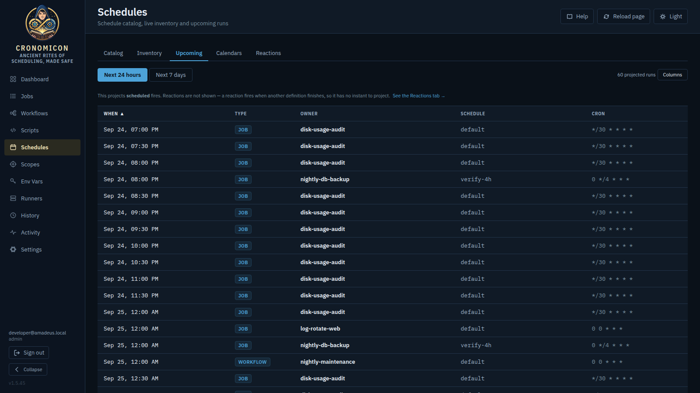
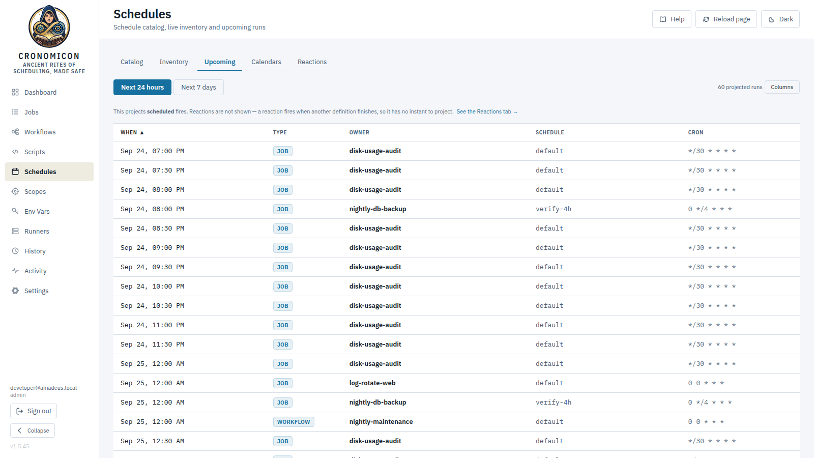
/schedules
lands on Upcoming.9.1 Deleting an in-use schedule
Deleting an cronomicon schedule that nothing references is immediate. If it is referenced, the
server returns 409 and the UI swaps the button to Force delete (N
refs) — clicking it re-issues the delete with ?force=true, detaching the
references.
9.2 Working calendars
A working calendar is a named set of wall-clock dates — your company holidays, a change freeze, your month-end close. It is not a time range, not a cron and not a duration: just a list of days, each with an optional label like “Independence Day (observed)”. That label is what a suppressed run says about itself afterwards, so it is worth filling in.
A schedule entry can name calendars in two roles, and the difference matters:
| Field | Reads as | Effect on a scheduled fire |
|---|---|---|
Never run on days inskipCalendars |
“not on holidays” | A fire landing on any listed day is suppressed. |
Run only on days inonlyCalendars |
“business days only” | A fire is suppressed unless it lands on a listed day. Naming several means “any of these”. |
Both together are legal and useful — “only on fiscal-close days, but never on a holiday” — and when they disagree, skip wins. Naming the same calendar in both roles on one entry is refused as incoherent.
You bind calendars wherever a schedule is authored: the Schedule Builder, the
inline schedules in Compose, and the Workflow Editor. In a Git-defined job or
workflow, the same two keys are available in the YAML (skipCalendars: /
onlyCalendars:) and name a calendar you authored here — calendars themselves are never
Git-defined.
Authoring one
+ New calendar takes a name, an optional description, and the dates. You are not
expected to type them one at a time: Paste a list accepts a block of
YYYY-MM-DD,label lines, and Upload CSV or .ics reads a spreadsheet
export or a calendar file in your browser. A line that is not a real date is reported by
its line number and the rest are still added, so a slightly messy paste is not wasted.
There is no built-in holiday list, no seeded calendar and no importable file of ours, in any edition. Every date is yours, which is the point: a list we supplied could be silently wrong for your organisation, your country or your industry, and you would have no reason to check it.
The consequence is the thing to plan for. When a calendar's last date passes, it does not warn you at fire time and it does not fail — a skip calendar simply stops suppressing, and the holiday runs it held back quietly start happening again. So the Calendars tab flags a calendar that has expired or has only a little coverage left, and renewing next year's dates is an annual task that needs an owner. Put it on someone's calendar, in the other sense.
A calendar for everything at once
Tick Apply to every schedule (global) and the calendar's days are skipped by every schedule in the system, whether or not any entry names it. That is how a change freeze is one checkbox rather than an edit to every schedule you own — and one un-tick to lift.
A global calendar is skip-only: it can never be used as a “run only on days in” list, and a calendar already bound that way cannot be promoted to global. That combination would mean a job permitted to run only on days it is also globally forbidden from running on — an outage reachable by two individually sensible clicks.
Because a fleet-wide freeze that nobody can see looks exactly like an outage, when a global calendar covers today both the Dashboard and the Schedules view say so by name, along with the day's label.
What calendars do not gate
A calendar gates scheduled fires. It never blocks a person:
| Trigger | Gated? | Why |
|---|---|---|
| Run now (the Run dialog) | No — warns | Someone clicking Run on a holiday is someone deciding to run on a holiday. If the job's schedule says it should not run today, the dialog says so and lets you proceed. |
| “Timing” (a deferred ad-hoc run) | No — warns | You picked a specific instant; that is closer to a manual run than to a schedule. The picker flags an instant that lands on a suppressed day. |
| A job inside a workflow | No | A workflow step is not a scheduled fire. The workflow's own schedule is gated, and suppressing it holds back the whole run — a per-step calendar would produce a workflow that half-ran. |
| A webhook-triggered run | No | An external system asked for it. |
| A scheduled fire (cron, interval or one-shot) | Yes | This is the case the feature exists for. |
Days are matched against the application time zone — the same zone the scheduler
fires in and the UI displays (§9) — never UTC. A fire at
23:30 local on a holiday is suppressed; if days were matched in UTC it would not
be, for every deployment east or west of Greenwich.
For a repeating schedule, suppression means “not today” — the next fire is unaffected. For a one-shot (a schedule that fires once, at its start date) there is no next fire, so suppressing it means the run never happens. The editor flags this while you are authoring, because it is the one case where the surprise is permanent.
Proving what didn't run
A suppressed fire is not silence. It is recorded in History as a Skipped run naming the calendar and the day's
label, and both the Executions and Workflow Runs tabs carry a
Calendar filter — one calendar, or any calendar suppression — so
“every run suppressed by company-holidays this fiscal year” is one selection.
The filter is in the URL, so it is also a link you can send someone.
One deliberate exception: “run only on days in” suppressions are not recorded unless the calendar ticks Record run-day (only) suppressions in History. Skips always record, because that is the compliance question; a business-days-only schedule would otherwise write an audit row every weekend and drown the signal.
Deleting a calendar something uses
Deleting a bound calendar is refused, naming what binds it; Delete anyway forces it. The bindings then remain as names pointing at nothing, and they fail in the direction each was written for: a dangling skip binding lets the schedule fire (a visible, correctable policy breach), while a dangling run-day binding means it never fires again (silence). Both are flagged as missing in the Inventory tab and in the schedule editors.
There is a single effective application time zone — the stored Settings
→ General → Timezone when it is set and loadable, otherwise the host
TZ — and it is the source of truth for both sides of scheduling: the
scheduler evaluates every cron expression in it and the UI renders every absolute
timestamp in it. So 2 a.m. means the same instant in the schedule editor, the
Upcoming table, run History, and reality — there is no
browser-zone-vs-server-zone skew. Only relative times (“5m ago”) stay
zone-agnostic.
The Settings banner is purely
informational — “Times are shown — and schedules fire — in the application
timezone ({appTimezone}). Your browser is {browserZone}.” — and appears only when your
browser zone differs from the app zone. It changes no behaviour; it just names the zone so a
09:00 schedule never fires at a surprising wall-clock time.
Saving a new cron on an cronomicon schedule propagates it to every job and workflow
that references it. Check the Used by count first. An orphan schedule
(Used by 0) never fires — bind it to something via scheduleRefs.
9.3 Reactions — when this finishes, run that
Inside a workflow, one job depends on another only for the runs the workflow itself started — if a job fired from its own schedule, from the Run dialog, or from a different workflow, nothing downstream in that workflow notices. A reaction lifts that out: when this definition finishes, run that one, in any combination of jobs and workflows, whichever way the first one was triggered.
It is the fourth way something can start — alongside a cron schedule, a repeating interval and a one-shot — and the only one with no clock. That single fact explains most of what follows.
A reaction holds no state. It is not a queue, it does not accumulate, and there is no such thing as one that is “currently waiting” — because it never waits. It sees a completion and fires, or there is nothing. Two consequences worth knowing before you rely on it: a newly added reaction starts from now and fires on the next matching completion (it will not catch up on something that already happened), and a reaction cannot appear in Upcoming, because it has no instant to project.
Which outcome you are waiting for
You choose what counts as the trigger. The four choices, and the one nobody guesses:
| Outcome | Fires when |
|---|---|
| success | The upstream ran to completion. A run that exited with warnings counts — it ran, and it finished. |
| failure | It ran and went wrong, including system failures such as a lost executor. |
| stopped | A person ended it and did not say what it meant — an unclassified stop, or a cancelled workflow. A stop that was classified follows that classification instead (§6.6). |
| any | All three. Never a run that did not happen — one suppressed by a working calendar is not an event. |
Why stopped is its own outcome rather than folded into failure: treating a deliberate human intervention as a failure fires your rollback automation while you are already hands-on fixing the thing. Treating it as nothing is just as bad in the other direction — killing a hung job would silently skip the cleanup that releases a lock, exactly when something is already wrong. So it is yours to route.
Where you author one
On the definition that runs — in the Job Composer or the Workflow Editor,
beside its schedules, because a reaction is simply another way for it to start. A Git-defined job or
workflow carries its reactions in its own YAML instead, under spec.reactions; the
in-app editor says so rather than letting you write something the next sync would erase. A reaction
can only be attached to a definition that already exists, so save it first.
Cronomicon refuses reactions that could never work: one pointing at itself, one naming a definition that does not exist, one that would close a loop (the refusal names the whole path), and one whose upstream you are not allowed to see.
The Reactions tab
Schedules → Reactions is the one place the whole picture lives, and it exists because reactions are otherwise invisible: a workflow draws its own steps, but a reaction lives on the other definition and appears in no projection. Search either end of an edge at once (you rarely know which side of the arrow the thing you are looking for is on), filter by owner, or tick Group by what they watch to read the same list as finishing this starts these — which is how you spot one job quietly setting off four others. A reaction whose watched definition has been deleted is flagged missing and counted at the top: it can never fire, and it is kept rather than deleted so you do not silently lose something you authored.
Each job and workflow also shows both directions on its own detail panel — Reacts to and Reacted on by. The second is the one nothing else can tell you, and the one you want when deciding whether stopping a job is safe.
Deleting something a reaction watches
Deleting a job or workflow that reactions watch is refused, and the refusal names them — a reaction that vanished because somebody removed an unrelated upstream would be a silent loss of something you built. The confirm stays open and offers Delete anyway, which deletes the definition and keeps its watchers, flagged missing here: they can never fire until you repoint or delete them. It works the same way wherever you delete — the Jobs and Workflows lists, the Composer and the Workflow Editor.
Two things this is deliberately not. It is not the Git-source refusal, which looks similar and cannot be forced: a Git-defined definition is deleted by removing it from the repo. And a definition removed from Git is simply pruned — there is no request to refuse and nobody to ask — so the sync always succeeds and leaves the watchers dangling. That is why missing is a supported state rather than an impossible one.
Why did this run? — and what did it set off?
In History, a reaction-fired run names the run that caused it and links straight to it; every run offers the reverse (jobs and workflows separately, since a reaction can start either). A Trigger filter narrows History to everything a cascade produced. All of it lives in the URL, so “what did last night's failure set off?” is a link you can paste to someone.
A global working calendar covering today stops a cascade, exactly as it stops a schedule — a chain that runs through a change freeze is worse than a schedule that does, because nobody authored it to happen today. A minimum interval caps how often one reaction may fire; note it drops the events it blocks rather than queuing them, because the event has already happened and there is no later instant that would still be true. A chain-depth limit stops runaway loops. And after downtime, anything older than 24 hours is not fired at all — a Monday morning restart will not discharge a weekend of backlog at once.
None of this is silent: every decision not to fire is recorded with its reason in a delivery log, so “the cascade did not run on the holiday, deliberately” is a recorded fact rather than an inference. That log has no screen of its own yet — an administrator reads it out of the database (the Administrator Manual §4.5 covers it) — with one exception: a chain stopped by the depth limit also writes an Activity entry, because that one means a loop nobody meant to author.
10 View Reference: Compose, Schedule Builder & Publish
The three in-app authoring surfaces. Compose and the Schedule Builder need the Compose capability (Admin-only) and write cronomicon-source definitions; Publish to GitLab needs the Publish capability (Admin or Approver) and writes Git definitions. All three gates are enforced server-side, not just hidden in the SPA; non-admins (or non-approvers, for Publish) see a notice instead of the form.
10.1 Compose (the Job Composer)
The Composer builds an cronomicon-source Job from existing pieces — no Git round-trip —
and makes the composable-primitive formula concrete: a Job is a binding of Script ×
Schedule(s) × Scope × env. It offers round-trip-safe full-state editing, inline
schedules, the scope-context and Advanced panels, job-level env, the script-variables hint, declared
Run inputs, and searchable Script/Scope pickers with a unified Schedule section, so it is
considerably richer than a plain form. Saving a new job goes live immediately, badged CRONOMICON. The route is admin-only and enforced
server-side (POST/PUT/DELETE /jobs sit behind session → CSRF →
admin); a non-admin gets the notice “In-app job composition requires the Compose
capability (Admin-only).”
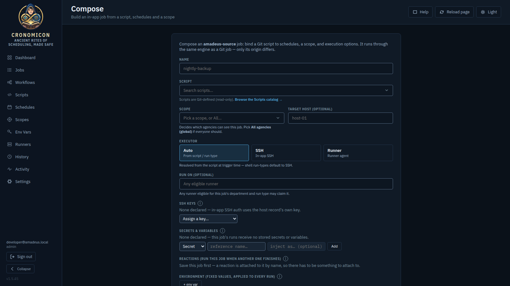
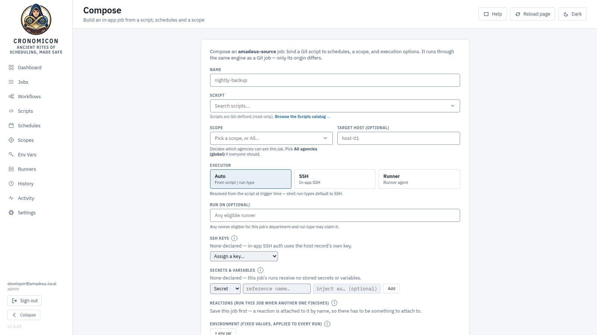
The compose PUT is a full-replace upsert: the form prefills
every field from the job and re-sends the complete set on save, so editing one field
can never silently strip the others (timeout, retries, concurrency, tags, inline-schedule env).
The form reads the job's raw enabled flag, so an
enabled-but-schedule-paused job loads with Enabled correctly ticked.
The Composer's sections do not print their explanation permanently under the label, which would be a wall of prose whether or not you needed it. Each section carries a small ⓘ beside its label; click it and the explanation appears beneath the label. What stays visible without clicking is what reacts to your input: validation messages, the credential-name warning on Run inputs, permission notices, the “Save this job first” note on Reactions, and the Manage in Env Vars → link. The Workflow Editor's Reactions section behaves the same way.
The form, field by field
| Field | What it does |
|---|---|
| Name | The job's identity. Disabled on edit — “Name is the identity — immutable on edit.” |
| Script | A searchable, keyboard-navigable combobox (placeholder “Search
scripts…”) — type to filter the Git scripts, grouped by folder, each option
carrying a run-type badge. It scales with the catalog: the full list loads under a
cap, then falls back to a debounced server ?q= search; a selection not
on the loaded page (an edit prefill or a narrowed search) is resolved via
GET /scripts/{name}. A deleted/unknown ref shows a red missing marker plus a soft warning, but never blocks the
save. Below it: Browse the Scripts catalog → (→ Scripts) and a ⚠ N lint warning(s) note
when the chosen script has body-lint findings. See below.
|
| Scope | A searchable, creatable combobox (placeholder “Pick or type a
scope…”): filter the known scopes — each annotated — {types}
when it declares its run types — or type a custom one and commit it via the
Use “…” row (Enter or click commits; Esc/blur reverts).
|
| Target host (optional) | When the chosen scope has hosts, a dropdown headed
— all hosts in {scope} — (a host not in the scope is flagged
(not in scope)); otherwise a free-text box. Leave it on “all hosts” to
fan out across the scope. This pin is honored on every run path —
read the warning below before changing it on an existing job.
|
| Runner environment passthrough (optional) | Under Advanced, and only for ansible/terraform
jobs. Environment-variable names the runner agent reads from
its own environment and passes into this job's process — for a value the
agent host holds and Cronomicon does not (a site licence key, a locally-injected
token). Names only; the value never leaves the runner, and an unset name fails the
run loudly rather than resolving empty. Not a way to inject stored Secrets or
Variables — reference those instead, and CRONOMICON_* names are refused
for exactly that reason. The Git YAML equivalent is
spec.env_passthrough, which this field makes authorable in-app.
|
| Become password (optional) | Ansible jobs only — the field is hidden for every other run
type, because the flag reaches ansible-playbook alone. Pick the Secret whose value supplies this job's sudo
password. It is a name, never a value: the password stays in the
Secrets catalogue, and at run time the agent writes it to a private file, hands the
path to --become-password-file, and wipes it when the run ends
— it never enters the run's environment. Setting it needs the Manage
Env Vars permission on the department that owns the Secret (the picker
shows disabled without it), because binding secret material to a job is a grant. A
job carrying one waits for a runner with ansible-core ≥ 2.12 rather
than running without escalation. Passwordless sudo remains the preferred
arrangement where the target allows it. In Git YAML this is
spec.become_password_secret.
|
| Connect as / SSH key (optional) | The job's standing connect-as identity: a username and/or a stored
SSH key (picked by label) that replace each target host's
configured login/key on every run of this job — manual, scheduled
and workflow. Available for ansible scripts as well (where it overrides the scope
inventory's identity); hidden only for terraform, whose providers authenticate
rather than SSH. The key picker needs the Manage Env Vars
permission to set or change (it shows disabled without). The Run dialog displays
these as its defaults and can override either per run. In Git YAML the same pair is
spec.ssh_user / spec.ssh_credential.
|
| Executor | auto (from script / run type), ssh, or
runner. See the run-type lock below.
|
| Environment (job-level) | Plaintext key/value rows applied to every run, plus the script-variables hint panel. See below. |
| Run inputs (asked at run time) | Declare the values an operator supplies — or confirms the default of — in the ad-hoc Run dialog before a manual run. Auto-seeded from the selected Script's own declared inputs; also carries an Import detected variables seed and an advisory drift lint. See below. |
| Schedule | One section with two labelled sub-blocks — Reusable (shared) (bind first-class schedules) and Inline (this job only) (author job-local ones) — plus a schedule-only recap. See below. |
| Scope context | A read-only panel (shown once a scope is set) explaining what actually reaches a run. See below. |
| Description (optional) | Free text. |
| Enabled | Default on. Unchecking saves the job disabled (it won't fire on schedule). |
| Advanced | A collapsed disclosure for timeout, retries, concurrency, and tags. See below. |
| Effective binding | A read-only recap of exactly what will be saved. See below. |
Script, Scope & the Executor lock
Two guards keep an un-runnable combination from being saved silently:
- Runner-only executor lock. When the selected script's run type is
ansibleorterraform, thesshoption is disabled (renderedssh — unavailable), a stalesshchoice is auto-reset torunner, and a hint reads “{runType} needs a runner with the local toolchain — SSH can't run it.” (The backend mirrors this: an explicitsshoverride on ansible/terraform is rejected422 invalid_executor.) - Scope-capability advisory. If the chosen scope declares its supported types and the script's type isn't among them, an amber note appears: “⚠ Scope {scope} doesn't declare {runType} support. The job is allowed, but runs may stay queued waiting for a capable runner.” This is advisory only — it never blocks the save (distinct from the hard executor lock above).
Environment (job-level) & the merge order
The Environment (job-level) editor declares a plaintext env map injected into every run of the job, independent of which schedule (or manual/workflow trigger) fired it. Its helper text spells out the precedence; the effective run environment is layered least- to most-specific, later wins on a key collision:
direct run: job-level env → firing schedule's env → per-run override workflow step: job-level env → parent-workflow env → step inputs
A manual run has no schedule layer; an all-empty merge is a strict no-op. Job-level env is plaintext and not redacted (same rule as schedule env) and never enters the per-run override audit envelope — keep real credentials in the scope secrets system, not here.
When a script is selected, a panel above the env rows lists the environment variables its body
actually references (extracted at sync time — see §8), each as a status
chip: ✓ provided (already injected, or
defined as an Env Var/Secret in the scope), ●
required & missing, or ○
optional (the script supplies a default, shown as =default). A +
add on any unsatisfied chip wires it into the job-level env seeded with its
default; + add all missing (N) adds them all at once. For ansible/terraform the
panel notes detection isn't available yet.
Run inputs — declared values for the Run dialog
A Job can declare run inputs that an operator is asked to supply, or to confirm the
default of, in the ad-hoc Run dialog before a manual run; the answers ride the
existing per-run env override path. Each row of the Run inputs
editor is a name (the bind key) plus an optional label,
default, and a comma/newline options list (a non-empty list
renders the Run-dialog field as a <select>), and a required
toggle. + run input adds a row; ✕ removes one.
This is a different surface from Environment (fixed values, applied to every run) above it, and the distinction is the one most often got wrong: a job-level env row is a value baked into the job and never asked; a run input is asked. There is no “required” flag on a job-level env row — a row left with an empty value simply ships an empty string to every run and nobody is ever prompted. The Composer flags exactly that case and offers a one-click Convert to a Run input.
Selecting a Script that declares its own inputs (spec.prompts in
scripts/*.yaml) auto-seeds them into an empty list, so a job composed from someone
else's script inherits the author's required set by default. It never overwrites a list you have
already edited.
Enforcement — what happens when a required input has no value
Once a job declares at least one required input, a “When a required input has no value” selector appears:
- Warn (default) — the run proceeds and the unfilled name is recorded on it. An operator is still shown the gap in the Run dialog and must tick the Run without it/them escape.
- Block — any request to run the job is rejected
422 prompt_requireduntil every required input has a value. The Run dialog offers no override for such a job (the run-without escape is hidden, not merely disabled — the button reads N answers still needed), and a direct API call is refused the same way. Choose this for jobs that must never run on a guess.
Enforcement is applied when a run is requested — the Run dialog and the
POST /jobs/{jobId}/run API. A run started by a schedule or a
workflow step is not refused this way. That case is caught at authoring time
instead: if a job is scheduled and declares a required input with no default that neither the
job env nor the schedule's env supplies, the Composer warns you, and the same warning appears
read-only in the job's Run inputs panel on the Jobs page.
Give the input a default, or supply it from the job env or the schedule's env.
A workflow step can supply a run input: a step's A12 inputs are layered over the job env and the parent workflow env when the child run is built, so an input named by a step input is satisfied normally.
- Import detected variables. When the selected script has detected variables, an
+ Import N detected variable(s) from script button seeds a row per referenced
variable not already declared (each row's
requiredinferred from whether the script supplies a${VAR:-default}fallback). The seed is a curation aid, not part of the run path; you then label, drop, or adjust each seeded row before saving. - Drift lint (advisory). If the script references a variable that no prompt declares and no job/schedule env or scope var/secret provides, an amber note lists them — “⚠ The script references N variable(s) that no prompt or env declares: …”. Advisory only; it never blocks the save.
A required input left empty does not reject the run — the server accepts it
either way — but the Run dialog disables the Run button until the operator ticks the Run
without it/them escape, so proceeding is a deliberate act rather than an oversight.
The unfilled name is recorded under promptWarnings in the run's override envelope
for audit in History. Declared inputs (sent as prompts[])
are a distinct surface from the job-level env above and from the script-variables hint panel —
they are the only values that reach the Run dialog.
Schedule — reusable & inline in one section
The “× Schedule(s)” half of the binding is one Schedule section with two labelled sub-blocks (bind nothing and the job is manual-only — “No schedules bound — the job will run manually only.”; otherwise the recap reads “Bound: N reusable + M inline.”):
- Reusable (shared) — checkbox rows binding first-class Schedule definitions via
scheduleRefs. Each row shows a source badge (CRONOMICON/GIT), the cron and its human form, the next (app zone) fire time, and anenv: {keys}summary. A small + New schedule button on its own row deep-links to the Schedule Builder. - Inline (this job only) — job-local entries authored right here and sent as
schedules[](withsourceRef: null). + Add inline schedule adds a card with a slug-validated name, a row of cron preset buttons, a cron box with a live human-readable + next (app zone) preview (5- and 6-field accepted), and a per-schedule plaintext env editor; any inline env trips the same “plaintext, not redacted” warning.
Scope context, Advanced & Effective binding
- Scope context (read-only, shown once a scope is set) separates “Injected at
run time” — job-level env + the firing schedule's env (schedule wins on a key clash) +
any per-run override, rendered as key chips — from “Available to {scope} (not
auto-injected)” — the scope's defined Env Var and Secret keys (🔒),
which are used only for SSH-key resolution and log redaction and are never
auto-added to the process env. Secret keys are read via
GET /env-secrets; values are never revealed here. - Advanced (collapsed disclosure) exposes Timeout (seconds)
(
0 = none), Retries, Concurrency policy (Allow — run overlapping / Forbid — skip if already running / Replace — cancel the running one) with a Concurrency key box that appears only when the policy isn't Allow, and Tags (comma-separated). - Effective binding — a read-only recap of what will be saved, in the form
script (runType) × N reusable + M inline × scope (hosts; vars / secret keys) × executor(the schedule term readsManualwhen nothing is bound).
Edit, save & delete
Edit mode (/compose?id=…) loads an existing cronomicon job and prefills every field;
Save sits beside a Cancel (→ Jobs), and the form stays populated
after a successful save. A Git-authored job replaces the whole form with a
read-only notice (and the backend independently 409s a write to a Git job as a
backstop). Delete appears only in edit mode, below a divider: a Delete
job button that expands to “Delete this job and its schedule bindings?” with a
confirm; deleting a Git job fails 409 “Only cronomicon-source jobs can be deleted in-app.”
10.2 Schedule Builder — author a reusable cronomicon schedule
Creates/edits one cronomicon-source schedule: Name (immutable on edit), a How it runs mode (see below), the rule for that mode — Cron (with a presets… dropdown; accepts 5- and 6-field cron) or an Interval — an optional Active period, optional Working calendars (§9.2), optional plaintext Env rows, and a Description. A live preview under the form shows the rule in plain words plus the next three fire times, whichever mode you are in. Reached from Schedules → Catalog → + New schedule.
On a schedule is cron: calendar-positional, and the right choice for anything tied to a clock or a weekday — every Wednesday at 17:00, weekdays at 09:00. It is the default mode.
Every N is a fixed gap measured from the start date: every 7 days,
every 36 hours, every 90 minutes. Cron genuinely cannot express this — “every
10 days” has no weekly or monthly position to sit at, so it needs a date to count from. That is
why this mode requires a start date: the start is the anchor, and every fire is
measured from it. Write the gap as a day count (7d) or a duration
(36h, 90m); the minimum is one minute.
Once is a single run at the start date, and never again — for a one-off migration or cutover you want scheduled rather than remembered. The entry stays listed afterwards so you can see that it ran.
One caveat worth internalising: an interval counts elapsed time, not calendar days. Across a daylight-saving change, every 24 hours drifts by an hour on the wall clock, because 24 hours is what you asked for. If you mean “every day at 5 p.m.”, use On a schedule — the form says so where you pick the mode. Switching modes clears the other mode's field, since a schedule fires by exactly one rule.
Cron says when in the week something runs; it cannot say “not until August
5th”. The Active period pair answers that separately.
Starts defers the first fire without touching the cron — set
0 17 * * 3 with a start of Aug 5 and the job first runs at 5 p.m. on
Wednesday the 5th, then every Wednesday after. Ends stops it after that instant
— useful for “nightly until the migration finishes”. Leave either blank for “immediately” /
“never expires”; the cron preview above clamps to whatever you set, so it shows the fires that
will really happen.
Three things worth knowing. A start date in the past is inert — there is no catch-up or backfill, the schedule simply runs normally from now. An expired schedule is kept, not deleted: it stays in the catalog badged expired so you can see and revive it. And the period gates scheduled fires only — Run now still works at any time, which is what makes a deferred schedule safe to test.
You enter dates in your browser's timezone. When that differs from the
application timezone the scheduler fires in, the form shows the resolved app-zone equivalent
beneath the field (“= Wed Aug 5, 00:00 EDT”) so there is no ambiguity about which
5 p.m. you meant. The same pair is authorable per inline schedule in the Composer, and in Git YAML as startAt / endAt
on a schedule entry.
The Working calendars pair sits beneath the active period and answers a different question again: the active period is a range, a calendar is a set of days. Pick calendars under Never run on days in to veto a fire that lands on one of their dates, or under Run only on days in to make their dates the only days this schedule may fire. Both together are legal and skip wins. Authoring the calendars themselves is §9.2, which is also where the boundary is spelled out — calendars gate scheduled fires, never Run now.
The same pair is authorable per inline schedule in the Composer
and on preserved inline entries in the Workflow Editor, and in Git YAML as
skipCalendars / onlyCalendars on a schedule entry. A calendar named in
both roles at once is refused, as is a global calendar in the run-only role.
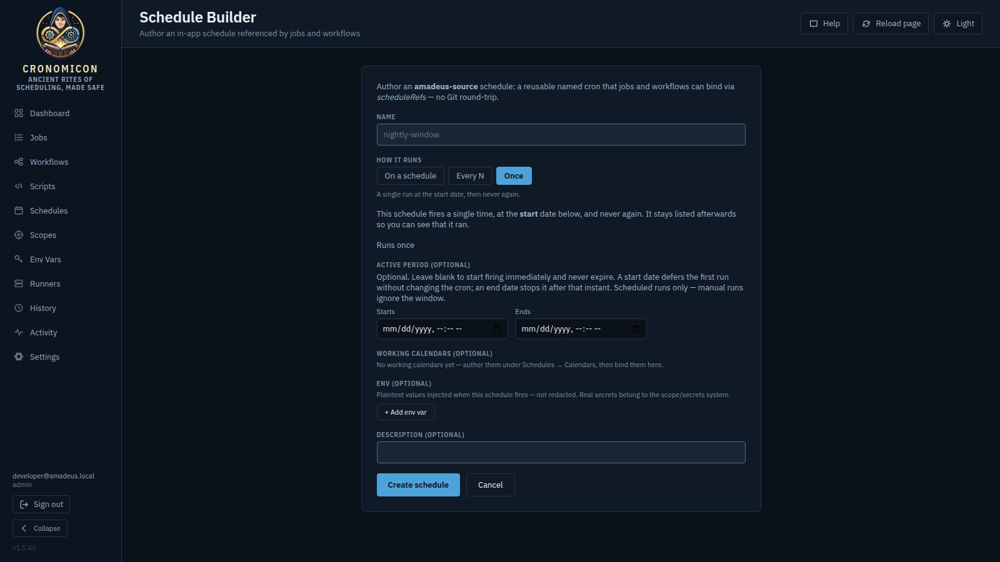
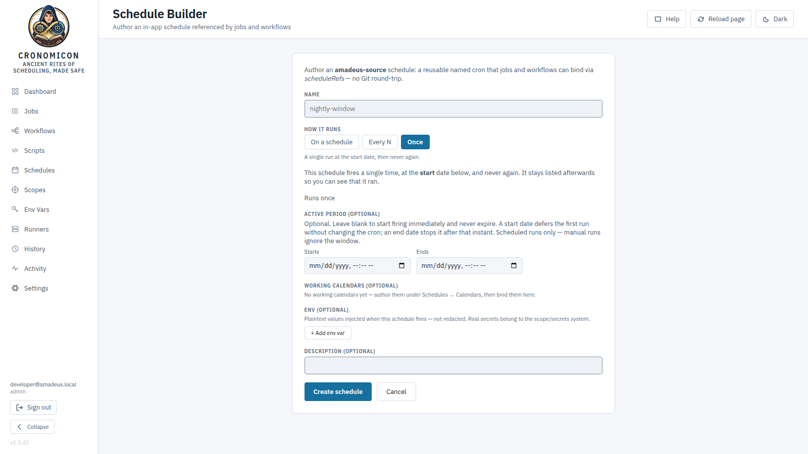
scheduleRefs, with no Git round-trip.
Schedule env values are injected as-is at fire time, are committed to Git in plaintext for Git schedules, and are deliberately not redacted from logs. Keep real credentials in the Env Vars / Vault system. Saving an edit propagates the new cron to every referencing job/workflow.
10.3 Publish to GitLab — author a job into Git, safely
Reached from Jobs → + Publish to GitLab. A two-panel builder: edit a job's
name/run-type/command/description and schedule entries on the left; a live kind: Job
YAML preview and the resolved base_sha on the right. Publish to GitLab
→ Confirm & Publish commits to the working branch using an
If-Match: <base_sha> optimistic lock.
| Result | Meaning & what to do |
|---|---|
| 201 Published | Commit pushed. Appears in Jobs after the next sync (≤ 5 min, or instantly via webhook). |
| 412 Precondition Failed | Someone changed the file since your base_sha. A diff is shown — click
“Reload latest base_sha & retry on top” and re-publish.
|
| 422 Validation failed | Per-line schema errors (file:line [field] — message). Fix and retry.
|
| 403 / 503 | 403 = missing publish permission; 503 = GitLab
unreachable, retry later. |
The builder shows no push history of its own — it links to History → Schedule Pushes, the single source of truth for the publish audit.
Preset chips: Every 15 min */15 * * * * · Hourly 0 * * * * · Daily
07:00 0 7 * * * · Nightly 23:00 0 23 * * * · Weekdays 09:00
0 9 * * 1-5 · Weekly Sun 02:00 0 2 * * 0 · Monthly 1st
0 0 1 * *. Field order (5-field):
min hour day-of-month month day-of-week. The backend also accepts 6-field
(seconds-first) cron. Full table in Appendix A.
11 View Reference: Scopes & Env Vars
Two adjacent primitives on two pages. Scopes (/scopes)
is the where — host groups, declared run types, the Ansible inventory behind them, and the
network-isolation Agencies that own them; Env Vars
(/env-vars) is the what — the Variables,
Secrets and SSH Keys a run carries. Scopes has its own
top-level page (the Agencies catalog lives there too); the Env
Vars page is exactly Variables · Secrets · SSH Keys. Reading either page is open to
any signed-in user; every write is server-gated — scope, agency and SSH-key writes need
Configure app, while Variable and Secret writes need Manage env
vars, and both permissions are held only by Admin. A non-admin sees the data but no
mutation controls (the endpoints 403 regardless). All three Env Vars tabs also carry
operator-authored tags — a Tags column, a Tag
filter dropdown, and a click-to-edit tag editor in the expanded row, matching the
Scripts/Jobs/Schedules/Workflows catalogs — but where catalog tags are editable by any signed-in
user, tag writes here carry the tab's own gate (Manage env vars for Variables and Secrets,
Configure app for SSH Keys). Tags are free-form SQLite-only labels; on Secrets and SSH Keys
they are plaintext metadata stored entirely outside the encryption envelope, so the reveal/rotate
paths are untouched.
11.1 Scopes /scopes
A scope is a host group plus a declared set of Supported run types. Source is Cronomicon (authored locally) or Git (imported from an inventory sync). The table lists Scope · Source · Description · Supported Types · Hosts · Updated; click a row to expand its detail.
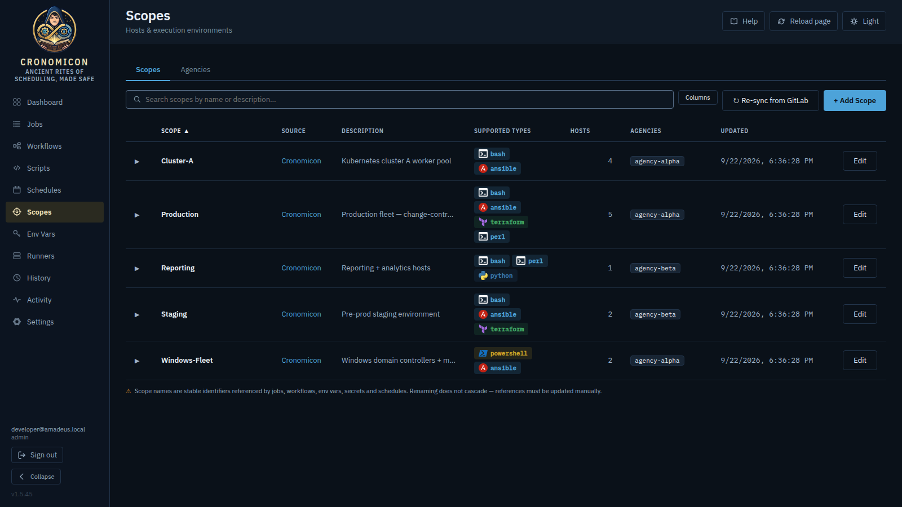
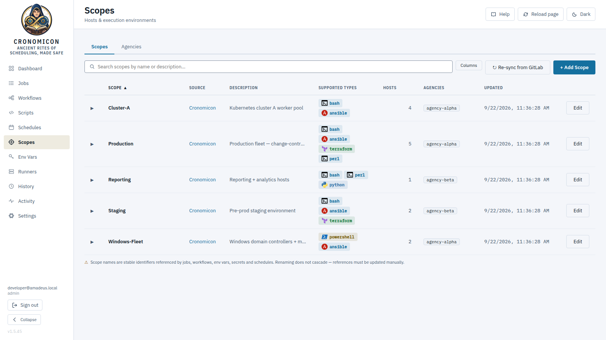
- + Add Scope → Name (
^[A-Za-z0-9_-]+$), Description, Supported run types (bash ansible terraform powershell perl python — toggle chips; bash is always included (the “bash floor”) and the set can never be empty), and the membership input — a segmented control switches between Hosts List (one host per line) and Ansible INI Inventory (paste the full inventory), so an inventory-driven scope can be authored complete at creation. A pasted inventory is validated inline — a literal secret value is rejected, line-numbered — and projected atomically on save. Editing a scope loads its existing inventory into the form; switching an inventory scope back to a flat hosts list clears its projection. (The expanded row's inventory editor, below, serves later edits.) - ↻ Re-sync from GitLab re-imports inventories and reports the delta — e.g. “Re-synced N scopes — N capability changes — N pragma errors.” Git scopes are read-only here; use Edit in GitLab ↗.
- The expanded row shows the Capability origin (Local — set in scope editor, Sidecar file, Pragma (top of inventory file), or Inferred from inventory shape — inferred types render with a dashed border), the inventory file / sidecar path, the per-scope Agency selector and inventory panel below, and (Cronomicon scopes only) the host chips and a Delete Scope button. A pragma parse error flags the row with ⚠ and falls back to inferred types.
Scope names are stable identifiers. Renaming or deleting a scope does not update
the jobs, workflows, env vars, secrets, schedules or role rules that reference it. After a
rename, the save notice may list broken references (entity: name) — fix
each by hand or it stops resolving. Declared capability is advisory: off-type jobs still run but
are flagged.
Ansible inventory — advisory projection & in-app authoring
Expand a scope to reach its Ansible inventory. The raw inventory file is what
actually executes — it ships verbatim to ansible-playbook -i — so the parsed view
carries an advisory — not authoritative badge (“The parsed view is a
navigational aid. Execution always uses the raw inventory file via ansible -i.”). The
projection renders each [group] with its children, host chips, group vars and
a Host vars list, read-only.
- Authoring (Cronomicon scopes). Edit / Add
inventory opens an INI-only editor; Upload
accepts a
.ini/.txtfile. Save inventory validates through the same pipeline GitLab sync uses. Git-source inventories are not editable here. - Import hosts → SSH (shown once an inventory exists and previews) materializes the inventory's hosts into the SSH registry so the in-app executor can dial them, reporting “Imported to SSH inventory: N created, N updated, N skipped.”
An inventory carrying a literal secret value is refused fail-closed,
line-numbered: “Secret-bearing inventory rejected. Reference secrets by env-var NAME.”
The supported pattern is env-var-name indirection, e.g.
ansible_become_pass="{{ lookup('env','NAME') }}" (or a group var like
cronomicon_auth_key_env_var=DEPLOY_KEY).
If the inventory uses a construct outside the supported preview subset, the projection degrades
to “Preview unavailable. {reason} (line N).” — and notes that the raw inventory
still ships to ansible -i unchanged. The advisory preview never gates
execution.
11.2 Agencies /scopes → Agencies
The second tab on the Scopes page. An agency is an operator-managed network-isolation zone; binding a scope to one constrains which runners may execute that scope's jobs. Agencies are operator-owned and never synced, so a binding survives a GitLab re-sync.
- + Add Agency → Name, Description (“which network / tenant is this?”). Bind a scope to an agency from its expanded row on the Scopes tab — the selector defaults to “— None (general pool) —” with the note “only a runner in this agency can execute this scope's jobs.”
- Runner membership is assigned on the Runners page (the Agency Membership matrix), never self-declared by an agent. With a scope bound and runners assigned, hard-isolation dispatch is live: a job dispatches only to a runner in its agency; an untagged job goes only to the general pool (runners with no agency). With no agencies defined at all, dispatch is unchanged.
- The Online runners column reports per-agency coverage; a count of 0 is flagged “0 → jobs will wait.” A run bound to such an agency sits queued with a “Waiting: no online runner in agencies 'X', 'Y'” reason until a member comes online (warn-only — it is never auto-failed). The agency itself says so too — see below.
An agency still referenced by a scope, a runner, or a secret, variable or SSH key cannot
be deleted — the request returns 409 agency_in_use. Clear its membership first.
The guard covers an agency whose only members are a secret and a key, so deleting it can never
silently take that membership with it.
One membership axis
Agencies are the single membership axis for scopes, secrets, variables, SSH keys and runners — the whole isolation model, on one dimension:
- A scope may belong to several agencies. A run inherits its scope's set and may be claimed by a runner in any of them.
- A secret or variable is injectable only into runs whose agencies overlap its own — and the scope rule applies as well. Both must pass.
- An SSH key is bindable only by jobs whose agencies overlap.
This is the rule that makes the whole model safe to adopt gradually, and the one most likely to be misread. A row belonging to no agency carries no agency restriction — it stays reachable from everywhere. A fresh installation has no membership anywhere, so nothing is restricted until you say so. The rules above only start biting on a given secret, variable or key once you put it in an agency.
Editing membership
There is deliberately no single membership grid (rows for every scope, secret, variable, SSH key and runner against a column per agency): past about a dozen agencies such a grid leaves you ticking checkboxes with no way to see which row you are on. Membership is edited where each question is actually asked:
- “What is in this agency?” — the Agencies tab. Expand a row and you get its contents grouped by kind, each member removable with an ✕ and an + Add… picker per kind (needs Configure app). The agency's name stays on screen the whole time.
- “Which agencies hold this one row?” — an Agencies column on the row's own catalogue: Variables, Secrets, SSH Keys, Scopes and Runners each carry it.
A row belonging to no agency still reads unrestricted in words rather than showing a blank —
that is a statement, not an absence, and it is the thing you most need to see before narrowing it.
On Runners the same state reads general pool, because an unassigned runner may claim every
department's unscoped work. A secret or variable shows its own scope (DB_PASS@prod) so
two same-named rows are never confused.
One thing the editor refuses: removing a row from the agency that owns it. Transfer ownership first — an entity its own department cannot reach is never what was meant.
A job never holds agency membership of its own: its agency set is derived from its scope, and a workflow's is the union of its jobs'. The agency chips on the Jobs and Workflows pages are that derivation, read-only. To change a deployed job's agencies, change the thing the chips are derived from: edit the scope's membership here (which re-enrolls every job bound to that scope at once), or re-bind the job to a different scope in the Composer (a git-source job changes scope in the repository). Runs already in flight keep the agency snapshot frozen at enqueue, so a membership edit never re-routes them.
Expanding an agency
Each row on the Agencies tab expands to show what it contains, grouped by kind, plus the two numbers that decide whether work placed here actually moves:
This is the trap. A run whose scope belongs to an agency with no online runner is not failed — it sits queued indefinitely, so nothing alerts and no notification fires. Each waiting run's status line says so, and the expanded agency says it outright and tells you how many runs are already waiting. Fix it by bringing a runner online in that agency, or by moving the scope out of it.
11.3 Variables (non-secret) /env-vars → Variables
+ Add Variable → Key (auto-uppercased to A–Z 0–9 _, immutable on edit),
Scope (defaults to All), a multi-line Value (newlines preserved), Description. Values are
shown in plaintext — put anything sensitive in Secrets instead. Variable writes
require Manage env vars.
The create and edit forms also show the owning department beside the Key, for Variables and Secrets alike. It is deliberately display-only: ownership is fixed when the row is created and there is no transfer action, so an editable-looking control would promise something the server cannot do. It is shown at all because ownership is exactly what you are reasoning about when two departments hold rows under the same key name and a run gets its own department's value (§11.2).
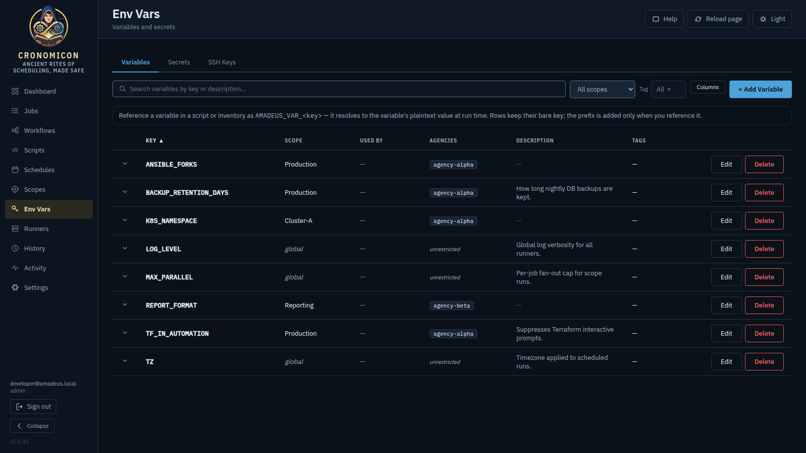
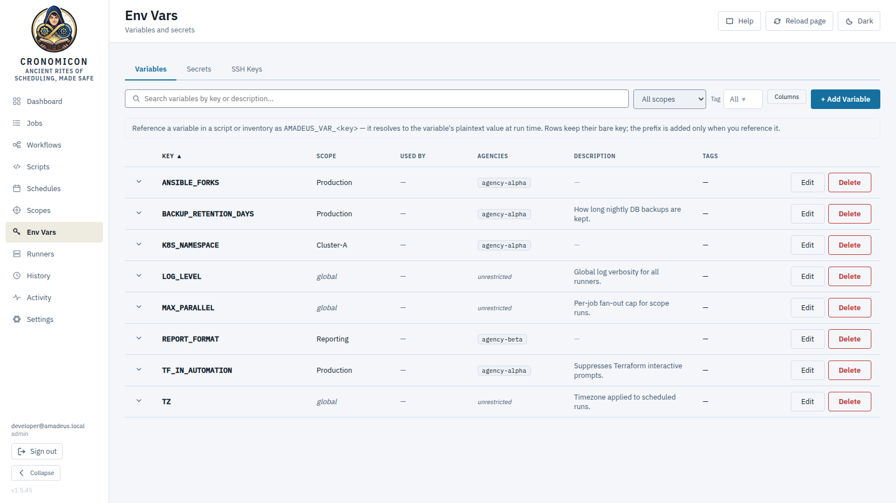
CRONOMICON_VAR_<key> reference
rule. Secrets and SSH Keys are the adjacent tabs.Reading the Variables and Secrets tables
Two columns on both tables answer the questions you actually have before editing a row:
- Scope spells out global for an unscoped row instead of leaving the cell blank. The distinction matters: a global row is visible from — and injectable into — every scope, whereas a blank cell would be indistinguishable from “not loaded”.
- Used by counts the jobs and scripts that declare a binding to that row
(see §11.6). Read it before you re-scope or rename anything: those
are exactly the runs that will start failing closed. A
—means nothing binds it, so an edit is free. Job counts only include jobs in scopes you can read.
A scope filter sits beside the search box on both tabs, with an explicit Global only option — the fastest way to find which of several same-named rows is the one you meant.
Beyond the permission gates, writes — and secret reveal — are checked against the agency that owns the row: a scope-restricted operator may change (or reveal) only what belongs to a department they hold the permission in. A row belonging to no agency is shared infrastructure — the thing every department's jobs consume — so changing or revealing it requires an unrestricted operator; reads and run-time consumption are unchanged. When a restricted operator creates a variable, secret or SSH key, the dialog shows an agency picker and at least one of their agencies must be chosen — otherwise the new row would immediately count as shared and lock its creator out of it. Creating something with no agency (unrestricted operators only) remains how you deliberately make it shared. Moving a row between departments requires authority on both sides of the move.
11.4 Secrets (Stored or Vault)
Each secret's Source is Stored (encrypted in Cronomicon) or Vault (a reference resolved at run time; the Vault option appears only when Vault is configured).
- Stored: paste the value (whole PEM/OpenSSH keys including BEGIN/END lines are preserved). It's AES-256-GCM envelope-encrypted and never echoed back. Expand the row and click Reveal to unmask — every reveal writes a Change Log entry with your email and the key.
- Vault: store a path like
secret/data/myapp#KEY_NAME. Vault secrets cannot be revealed through Cronomicon. - Migrate to Vault (stored secrets, when Vault is wired) is one-way and deletes the local ciphertext — no undo.
Variables and Secrets share one key namespace per scope: a given KEY may exist
only once across both, in either creation order. A collision returns 409 with an
“(A13)” message. The All scope is its own scope for uniqueness. (SSH Keys are
a separate typed entity — see below — and do not share this namespace.)
11.5 SSH Keys
The third Env Vars tab is a first-class store of SSH key credentials — a typed,
envelope-encrypted entity, not an opaque secret referenced by name.
Its writes are Configure app-gated (distinct from the Manage env vars gate
on Variables/Secrets). Each row shows Label · Type · Fingerprint (SHA256, click to
copy) · Source (Stored / Vault) · Tags · Used By (the count of hosts/bastions
referencing it) · Bound By (the jobs/scripts that declare a
CRONOMICON_KEY_<label> binding to it, a different question from Used By: a
key can authenticate hosts without any job binding it, and vice versa).
- + Add SSH Key → Label, Description, and the Private Key —
paste the whole unencrypted PEM/OpenSSH key including the BEGIN/END lines
(passphrase-protected keys are not supported). It is validated on save,
encrypted at rest and never echoed back; on success the dialog shows the derived Key
Type · SHA256 fingerprint and a copyable public key to drop into
each target account's
authorized_keys. - Edit can rotate in place: leave New Private Key (rotate) blank to change only metadata, or paste fresh material to re-key. Delete is guarded — a key still in use forces a Force Delete that detaches it from its hosts/bastions first (they fall back to no key until reassigned).
Attach a credential to a host or bastion under Settings → SSH Targets
with the credential picker (it writes authCredentialId; a passing
Test connection then names the key that authenticated by type + SHA256 fingerprint).
The coequal “Key by name (runner / inventory)” option (writing
authKeyEnvVar) is fully supported — it is the permanent
path for runner-executed and inventory-imported hosts, which resolve keys by name
locally and never receive credential material.
11.6 Reference bindings & run-time injection
Cronomicon never auto-injects a scope's Env Vars into a run. Instead there is an explicit, opt-in path: a job or script declares which Secrets, Variables and SSH keys it consumes as reference bindings, and at dispatch Cronomicon resolves and injects only that declared set into the run. Scope Env Vars you do not bind are not added — declaration is the whole point.
Derived reference names
Every Variables / Secrets / SSH Keys row carries a canonical derived reference name — shown in the expanded row in monospace with a copy-to-clipboard control and a one-line hint. The four reserved prefixes are a closed set:
| Reference | Resolves to |
|---|---|
CRONOMICON_VAR_<key> |
a Variable value |
CRONOMICON_SECRET_<key> |
a Secret value (stored or Vault-resolved) |
CRONOMICON_KEY_<label> |
an SSH key-file path on the executing host (not the key text) |
CRONOMICON_RUN_<field> |
fixed run context, injected into every run (below) |
Because these prefixes are reserved, row names must be POSIX identifiers
([A-Za-z_][A-Za-z0-9_]*) and may not start with CRONOMICON_
— a violation returns 422. SSH-key labels
additionally drop - and . (they would break the derived
CRONOMICON_KEY_<label> name) — use snake_case. And operator-authored env everywhere
else (job env, schedule env, per-run overrides, workflow step inputs, inventories) may not
define any CRONOMICON_* key — a
lookup('env','CRONOMICON_…') reference is fine, but a literal
CRONOMICON_*= assignment is rejected at save/ingest.
Declaring bindings on a Job or Script
Expand a Job row (§6.2) or a Script row (§8) and use the
reference-bindings editor: pick a kind (Secret Variable SSH Key), type the reference
name (a datalist offers your known Env Vars rows), and Add; each
binding is one row carrying a coloured kind dot, the derived CRONOMICON_*
reference, the verdict, the state pill, the reason in words and a remove control. A bound name with
no matching Env Vars row shows a ⚠ — “the run will fail closed unless
it is created.” Rows render for healthy references too, so the section stays a
complete inventory of what this job or script consumes rather than a list of only its problems.
Saving is a full replace of the set (Save references /
Reset). On a Script, Suggest from body scans the
script text to prefill likely bindings and lists any bare-name references that rely on the
name-based fallback. Editing bindings needs the Manage env vars permission (without it the
editor is read-only chips) and is scope-checked — a job's bindings gate on the
job's scope; script bindings require an unrestricted manager.
Injecting under a different name — the alias
Beside the name box is an optional “inject as” field. Leave it empty and the value arrives under the row's own derived name. Fill it in and the value arrives under that name instead — the editor previews the key it will land on as you type.
This exists for one situation, and it is a common one: a shared job that each department must
run with its own credential. If the catalogue already holds TEAMA_SUDO and
TEAMB_SUDO, each department binds its own row and aliases it to the single name the
script or playbook reads — one job, one body, every department's credential. (If the two
departments can instead each own a row under the same name, you need no alias at all: a run
resolves its own department's row automatically. See Administrator Manual §6.1g.)
The name still decides which row resolves; the alias only decides which key it lands on. You cannot reach a row you were not already allowed to bind by giving it a friendlier name — an out-of-department row is refused with or without one. That is why an aliased binding shows both names: the row (whose credential this is) and the destination (what the script reads).
Binding one row twice under two destinations is allowed — it simply lands two keys. Two different rows aliased to the same destination is refused, because only one of them could win.
The Run dialog carries the same field on its per-run reference additions (§6.5), for the one-off case: run this job, this time, with that credential, under the name the body expects. Type the alias, then pick the row.
What happens at run time
- Only the declared set is injected, from stored secrets or Vault-backed ones through the identical path — transparent to you. Values are masked/redacted in logs and are never written back to the run's stored env; they exist for the connection only.
- Fail-closed: if a declared reference is missing, out of your scope, or
otherwise unresolvable, the run fails rather than running without the secret it
declared (look for reasons like
vault_unreachablein History §12.3). - Run context is always available without declaring it:
CRONOMICON_RUN_ID,CRONOMICON_RUN_JOB,_JOB_SOURCE,_SCOPE,_TYPE,_TRIGGERED_BY,_EXECUTOR. - SSH-key material (
CRONOMICON_KEY_*) is delivered only on runner-dispatched runs — the key is materialized to a0600tmpfs file, exposed asCRONOMICON_KEY_<name>=<path>, and wiped at run end. On the in-app SSH executor a key binding is refused: the executor connects from Cronomicon and cannot place a key file on the target, so a run that resolves to it is rejected rather than started without the key — a manual run gets a422naming the key, a scheduled fire records a skipped run, a workflow step fails the step, a reaction records a delivery error, a file arrival is refused. The executor is decided per run (per-run override, then the job's executor, then the global default), so the same job runs fine when overridden to a runner. To use the key on the target instead, bind it as a Secret and have the job body write the file. - Runner trust: a runner only receives resolved secret values if an admin has enabled its Secret injection toggle (Runner detail, Configure app-gated) — grant it only to runners you trust with the blast radius.
Checking a binding before you run it
At dispatch, a bad binding produces a failed run whose message says just “reference X is unavailable for this run”. That vagueness is deliberate — a run must not become a way to probe for secret names in scopes you cannot see — but on its own it would leave you with no way to tell a typo apart from a scope mismatch. So Cronomicon answers that question where you declare the binding, before any run exists.
Each saved row in the reference-bindings editor carries a verdict and, next to it, the scope the row actually resolved from:
| Chip | Meaning | What to do |
|---|---|---|
| ✓ global | Resolves — from the global (unscoped) row, because no row specific to this scope exists. A global row is injectable from every scope. | Nothing. |
| ✓ <scope> | Resolves — from the row in that named scope, which wins over any global row of the same name. | Nothing. Worth a glance when both exist and you expected the other one. |
| ✗ only <scope> | A row with that name exists, but only in another scope — so this job cannot see it. This is the case the run-time message deliberately hides. | Either move/duplicate the row into this job's scope, make it global, or run the job in the scope that has it. |
| ✗ missing | No row of that name is visible to you anywhere. | Check the spelling, or create the row under Env Vars. |
| ✗ invalid | Not a legal reference name, so no row could ever carry it. | Rename it to a POSIX identifier. |
| ⚠ (no verdict) | An unsaved row you just added — it has no dispatch meaning until you Save references. | Save, then read the verdict. |
The reason is written out in words on the row itself rather than being hover-only, and it is attached to the row for screen readers as well as sighted readers. An unresolved reference names the thing you configure — “no SSH key named …”, not the database table behind it. On a Script, which has no scope of its own, references are checked against the global scope — the answer that holds for every job; a reference reported as living only in a named scope still resolves for jobs in that scope.
The Run dialog repeats the check against the scope this run will actually target, inside the Targets section. This is the only place that can be right when a job's own scope is All and you pick a specific scope with the override: references resolve against the run's scope, not the job's. If anything will not resolve, the count appears in the collapsed panel summary and the panel opens itself, the same way an incompatible scope does — so a fold can never hide a run that is going to fail closed.
The verdict never reveals anything your own Env Vars and Secrets lists would not already show you. If you are restricted to certain scopes, a row living in a scope you cannot read is reported as missing rather than “only in <scope>” — identical to a name that exists nowhere. That is intentional: it keeps the check from becoming a back-door way to discover names in scopes you have no access to. Values are never returned by the check, in any form.
Open a run in History and its detail shows an “Injected references
(N)” panel — the derived reference names actually injected at dispatch, taken from
the audit trail. Values are never shown, and a Vault-source secret can never be
revealed through the UI at all (a reveal returns 409) — only the
internal dispatch path reads it.
12 View Reference: Activity & History
Two “what happened” surfaces. Activity is a live, color-coded event stream; History is five tabbed records, including the Executions log where you diagnose failures.
12.1 Activity feed
Reverse-chronological cards, each tagged with a kind — run-start,
run-end, config, push, gitsync,
ssh-test — and color-coded by outcome on a 3px left border (green success / red failure
/ orange warning / blue neutral). Every control is a server-side filter over the
whole window, not over the page on screen: the search box (job, workflow, actor, kind, summary), a
Kind select, an Actor select grouped Users / Runners /
System (it lists whoever appears in the current window), and a Range select
— Last 72 hours by default, then 7, 30 or 90 days, or Custom range…
for absolute From/To instants (either end may be blank; the inputs take your browser's clock and say
so). The My triggers chip is the Actor filter pointed at you, so setting one clears
the other. A pager under the feed counts the filtered total (1–25 of 312 events), and
a filtered empty state names what it searched for, with a Clear filters reset and a
jump to the full 90-day retention.
Cards that involve a runner carry a chip with the runner's name; on a run an operator stopped, both the person and the runner show. Drain, key-scan and resync events name the operator who requested them.
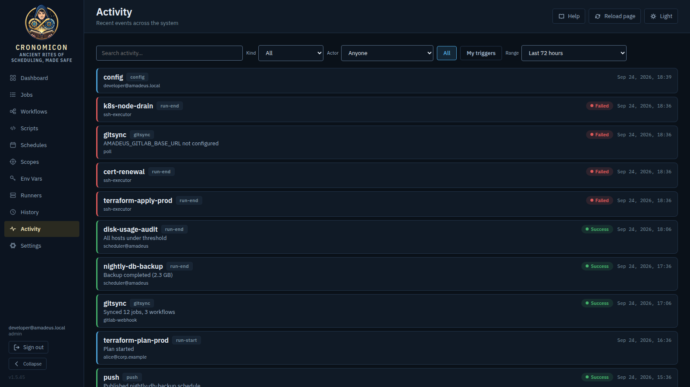
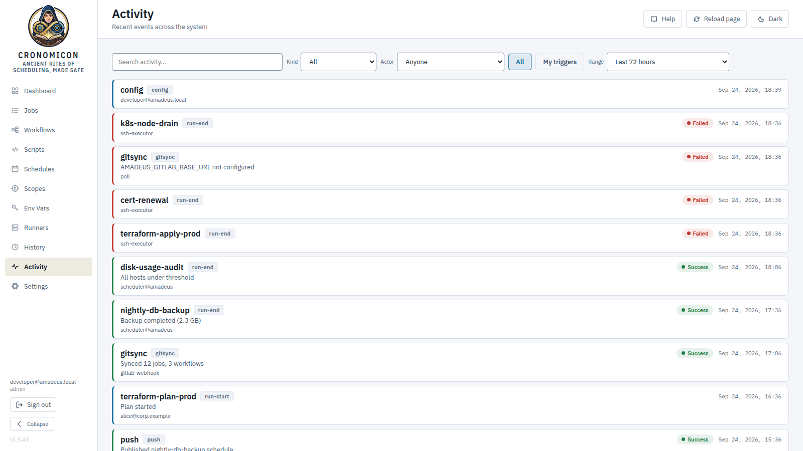
Consecutive identical events render as a single row with a count and a time range — “×19 · 18:16 – 23:21” — instead of nineteen identical lines. The signal in a repeated event is that it happened nineteen times, and nineteen lines would bury it.
Collapsing is consecutive-only: A A B A A is three rows, not two,
because merging non-adjacent events would misrepresent order — the one thing a chronological
feed must not do. Nothing is lost either: the count is a button, and expanding it lists every
member's own instant.
12.2 History — five tabs
Deep-linked via ?tab=; each tab keeps independent search/filter and does
server-side pagination — it fetches one page at a time as a
{page, pageSize, totalItems, totalPages, items} envelope, so the whole retained
history is reachable. The page-size selector offers 25 / 50 / 100 (default 25); the server
clamps any request to a maximum of 200 rows.
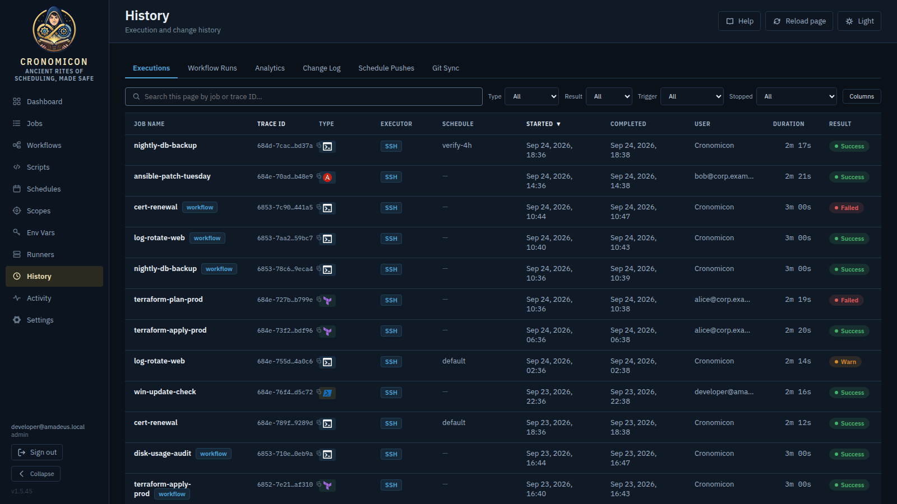
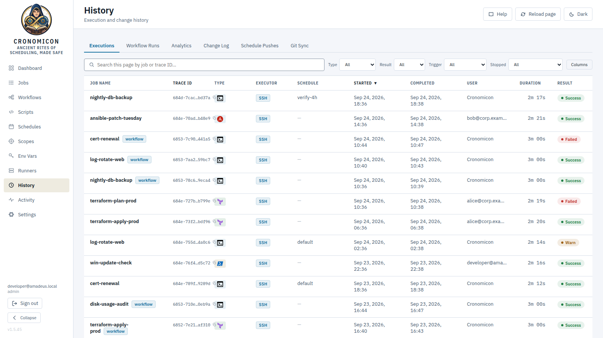
| Tab | What it lists | Notable |
|---|---|---|
| Executions (default) | Individual job runs. | Sortable columns; Result and Runner filters
(?runnerId=; in-app SSH runs have no runner); row drill-down with the
redacted log. Deep-links: /runs?result=fail and,
/runs?job={name} — see below.
|
| Workflow Runs | Workflow-level runs with child-job counts. | A Result filter — All · Running · Success · Warn · Failed · Skipped · Cancelled — plus per-run step-level drill-down (graph, timeline, per-step logs). Drill into children via the Executions tab (a “workflow” chip links back). |
| Change Log | Audited config changes. | Export CSV; retention is the Change Log window under Settings → Audit & Compliance (default 1 year). Secret reveals & Vault migrations write entries here. |
| Schedule Pushes | GitLab publishes from the publish builder. | File, schedule change, commit SHA, success/failed (with error). |
| Git Sync | GitOps pull/push events. | ↻ Sync now button; Pulled / Pushed pills; expandable commit detail. |
?job= — arriving pre-filtered on one job
A Recent errors row on the Dashboard (§5.3) opens
Executions at /runs?job={name}. Two things about that filter are worth knowing when
you land on it:
- It is applied on the server, unlike the free-text Search box beside it, which refines only the page already fetched. That distinction is the whole point — a job whose runs sit past page 1 would otherwise have shown a confident “No matching runs” while the pager underneath still counted every run in the system. The pager reads the filtered total, so “1–6 of 6 runs” is the visible proof the filter reached the server.
- It shows as a clearable chip — Job: nightly-backup with an ✕ — because a short table with no stated reason is exactly how arriving pre-filtered goes wrong. Dismiss the chip to see every run again. If the job has never run, the empty state says so by name rather than blaming your filters.
Both Executions and Workflow Runs carry a
Calendar filter beside Result. Pick a calendar to see every run it
suppressed, or Any calendar for all calendar suppressions regardless of which one. Like
?job= above it is applied on the server, so the pager's total is
the real answer rather than a count of one page, and it is mirrored into the URL
(?calendar=company-holidays) so an audit answer is a link.
It matches a stored field naming the responsible calendar — not the wording of the run's status reason — so rephrasing that message can never quietly break the query. A suppressed run's detail names the calendar too, under Suppressed by calendar. See §9.2.
Two controls sit beside Result, and each answers something Result cannot. Trigger (All · Reaction · Schedule · Manual · Workflow step · Webhook) is how the run was caused — pick Reaction to see everything a cascade produced. Stopped (Stopped by a human / Not stopped) is deliberately not a Result option, because a stop can be recorded as any result (§6.6); every run an operator ended also carries a Stopped marker in the row and in its detail, so a stop recorded as a success cannot hide inside Success.
A reaction-fired run's detail reads “Triggered by run:” and links to the run
that caused it — with an (as workflow run) alternative, since the stored link records
the causing run's id but not its kind — plus hop N of the chain once a chain runs more
than one deep. Every run offers the reverse as two pivots, jobs → and
workflows →, because a reaction can start either and a run keeps no list
of what it set off. Both directions are ordinary server-side filters mirrored into the URL
(?triggerKind=reaction, ?reactedTo=…) and shown as a clearable chip,
like ?job= above. See §9.3.
12.3 Diagnosing a failed run
- Open History → Executions and set Result = Failed (or click the Dashboard “Failed (24h)” tile, which deep-links here).
- Search by job name or paste the full trace ID. A red Failed badge marks it; an
amber Lost badge means the runner agent vanished mid-run
(
runner_lost) — a runner problem, not a script error. - Click the row. Read Exit Code, the status reason in
parentheses (e.g.
failure (runner_lost),killed,drain_timeout,vault_unreachable,orchestrator_lost— a workflow child run reclaimed because the orchestrating workflow was lost to a server restart or the 24h stale limit; plain Failed badge, not the amber Lost badge), and Killed By if present. - Read the “Log Output (redacted)” pane — secret/env values are masked as
[REDACTED]but error text is intact. “No log output recorded” means the process produced no captured output. - If the run is still running (or queued), the pane tails itself: a ● Tailing marker appears beside the heading and new output lands every few seconds, transferring only what was appended — not the whole log again. The view sticks to the tail; scroll up to read something and it holds your position, with a ↓ Resume following control to jump back. When the run finishes, one final read collects the last lines and the polling stops. The same behaviour applies wherever a live run's log is open — a workflow step's drill-in, or Recent runs on Jobs and Runners. Logs are masked when they are written, so a partial read shows exactly what a full read would.
If the run was a manual trigger that overrode env and/or hosts (§6.5), the detail drawer shows an
“Ad-hoc overrides (this run)” block listing the overridden
Hosts and Env (KEY=value), with the caveat
“Operator-supplied for this run, stored plaintext (not secrets) — masked in logs only on a
best-effort basis.” The run's effective scope and executor appear in the main detail
grid. A plain scheduled/default/workflow run has no such block.
A run that proceeded with a declared required run input left empty is flagged in
two places: an amber ⚠ N unfilled badge on the executions row, so you can
spot affected runs without opening each one, and a Run inputs block at the top
of the detail drawer naming them. That block also states whether an operator acknowledged it —
“The operator was shown this in the Run dialog and chose to run without it” versus
“No operator acknowledgment was recorded”, which is how you tell a deliberate human
decision from a schedule, workflow, or API trigger that nobody reviewed. Where each supplied
value came from (you / default / override /
job env) is listed beneath it.
If the run injected any declared reference bindings (§11.6), the
drawer shows an “Injected references (N)” panel — the derived reference
names (CRONOMICON_SECRET_/VAR/KEY_…) actually resolved and injected at
dispatch, from the audit trail. Values are never shown. A run that injected
none renders no panel.
Trace IDs are UUIDv7 shown in middle-ellipsis form (3c4d-74f7…d5474); hover or
expand for the full value, and you can paste a full ID into search. Log redaction is
server-side and automatic — there is no per-view “show raw log” button and no
global bypass toggle.
13 View Reference: Runners
The fleet console for your distributed execution agents. (Despite living next to “Settings” conceptually, Runners is its own top-level sidebar item.) Deep operational detail — installing, the two-token model, security — is in Runner Fleet Management (Administrator Manual); this is the screen reference.
13.1 Status tiles & the registry
Tiles summarize the fleet: Total, Online,
Degraded, Draining (only when >0), Offline.
The Runner Registry table shows each runner's name + version, status, OS,
capability chips, an Agencies column of network-isolation membership chips (a
runner in no agency reads general pool, not a dash — it serves every department's
unscoped and system work, which is more reach than a departmental runner, and — read as
missing data), load (active/maxConcurrent, red when saturated), last-seen, and an
inventory chip beside the name:
Status: Online Draining (N active) Degraded Offline · Capabilities: bash ansible terraform powershell perl python · Inventory: cronomicon inv local inv
Beyond the run types, a runner may advertise feature capabilities, and each carries a hover hint naming what it permits — a chip you cannot interpret is no help when it is the reason a run is stuck queued. become-file can accept a privilege-escalation password delivered as a wiped file; vault can decrypt Ansible Vault content; checkout can materialise a Git checkout project; collection:name has a specific Ansible collection installed. A job that requires one of these waits for a runner that has it rather than running without it (§16).
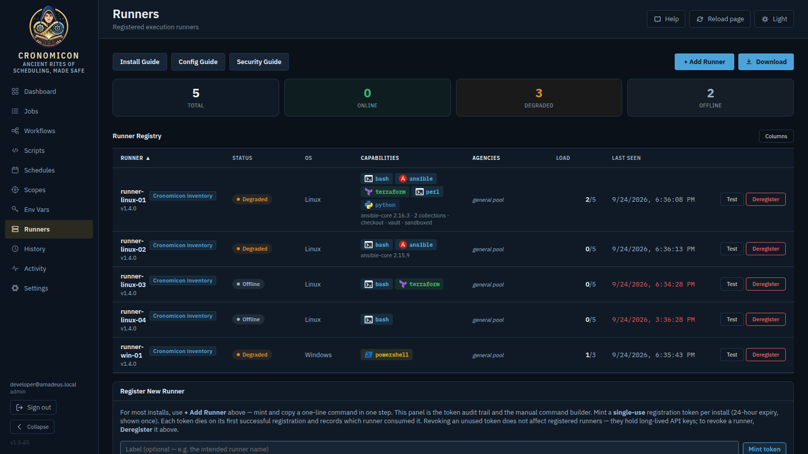
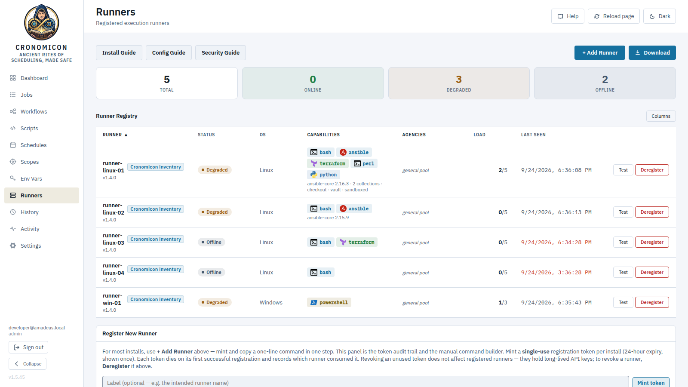
Actions. The compact row carries only Test and Deregister (which removes the runner and revokes its key immediately). Everything else lives at the top right of the expanded detail — one action home, matching Jobs and Workflows:
- Resync — forces the runner to re-declare its current config in place on its next poll: same id and key, active jobs unaffected. Config changes usually propagate automatically after a restart, so this is the don't-wait lever.
- Scan keys — scans a target's SSH host key so you can approve it.
- Neither carries a protocol-version requirement. The server's protocol floor tracks the current wire protocol, so an agent old enough to ignore one of these buttons cannot register, redeclare or even poll — it is refused outright rather than accepting a click that does nothing. The house rule elsewhere in the app: a precondition disables with an explanation; only irrelevance hides.
- Drain — finishes active jobs, then goes offline.
- Copy upgrade command — copies the one-line root command that upgrades (or reinstalls) the agent on that host. It is always offered whatever the version badge says: it is also the reinstall command, and “up to date” compares version strings, so a locally-built agent can read current while speaking an older protocol.
- ⚙ Settings sits on the Managed settings section header — the thing it edits — and carries the pending-change dot.
Resync, Scan keys and Drain are offered while the runner is reachable —
online or degraded. A degraded runner is still heartbeating and
still holding work, so it is the one state where you most need them. offline hides
them — there is nobody there to ask.
Offline is not a one-way trap. An authenticated poll from an offline runner is treated as what it is, proof of life: the row flips back to Online, the stale drain deadline is cleared, the re-admission is recorded in Activity, and pending resync, managed settings and work are delivered in the same round-trip. Bringing a reaped runner back is simply: start its service again. Draining is different — that is in-flight operator intent, and it resolves to offline — and Deregister is the deliberate lock-out: a runner that should stay out of rotation is a service you leave stopped.
A runner that loses its saved identity — deregistered, reaped after a long outage, or restored from a backup that predates it — re-registers under a new id. Its agency membership and tags were keyed to the old id, so it comes back in the general pool: online, correct capabilities, and quietly eligible for different work. Cronomicon snapshots a runner's name, agencies, tags and observed address before its row is deleted, and when a runner registers under a name that matches a recent snapshot the row offers Restore placement (or Dismiss). Restoring is never automatic — the name is self-declared by the agent — and needs the same authority as placing the runner by hand. Snapshots are kept for the Runner placement history retention window (Settings → Audit & Compliance, 30 days by default).
The gap it names is real: a runner's last seen is written on every long-poll, but a runner is only called offline after the reaper's 5-minute window. Without a status in between, for up to five minutes a runner that had already died would still read Online in its row, in the tile counts, and to anyone deciding where to send work.
Degraded is that window. It is reported when a runner's heartbeat is more than
two minutes old (agents poll about once a minute, so two missed polls — late
enough not to flag ordinary jitter), and for a runner that registered but has never polled. It
is derived when the page is read, not stored: the stored status is the runner's
lifecycle, and this is a freshness reading laid over it. Only online
degrades — draining is already leaving, and offline has been reaped.
Pausing, draining and deregistering are unaffected by it; the runner's own recorded status is
untouched.
Below the registry, admins (the ConfigureApp permission) get an Agency
Membership grid — runners as rows, agencies as columns, one checkbox per cell, and a
single bulk Save Membership — assigning each runner to zero or more agencies (the
network-isolation zones in the agencies catalog, §11). The saved sets are
exactly what hard-isolation dispatch matches a run against (Agency-based isolation, Administrator Manual).
Membership is operator-assigned only — a runner can never self-declare its
agencies; with no agencies defined yet, the grid prompts you to create them first.
13.2 Adding a runner & the registration-token panel
+ Add Runner (top-right of the view) is the one-click path: it mints a token and
hands you a single flagless command —
curl -fsSL <server>/install/<token> | sudo bash — to paste on the host as
root. The /install/<token> endpoint bakes the server URL, token, and agent-binary
download into the script, and capabilities auto-detect on the host, so nothing rides the command
line. A download-inspect-run variant is offered in the dialog for shops that don't pipe
curl into sudo (the saved file is already personalized). The registry's empty state links to the
same dialog.
The Register New Runner panel below is the token audit trail and the manual command
builder. Mint token creates a single-use crn_reg_*
token (24-hour expiry) for one install, with an optional label (e.g. the intended runner
name). The plaintext is shown only once at mint — use
Reveal/Copy immediately, or copy the install command with the
token filled in. The token list below shows each token's label, expiry, and status — including
which runner consumed it (the audit trail). Revoke kills an unused token;
a used token stays in the list as its audit record. Installing several runners? Mint one token per
host.
Revoking an unused token only stops a future install. Already-registered runners hold
their own long-lived crn_run_* keys and keep running. To revoke a runner,
Deregister it (and delete its identity file). See Runner Fleet Management (Administrator
Manual).
The panel's Install Command is a real, copy-pasteable invocation of the bundled
runner-install.sh: it fetches the script from this server (/runner-install.sh) and pipes it into sudo bash with the
server URL and token filled in. The token is substituted only while the freshly-minted plaintext
is revealed — otherwise the command shows a <TOKEN> placeholder. A
download-inspect-run variant (for organizations that don't pipe curl into sudo) expands
below the command. The command's --download flag pulls the agent binary from this
server too (checksum-verified; container deployments bundle it), so the target host typically
needs nothing but curl — see Installing &
registering (Administrator Manual).
13.3 Runner guides & the Download button
The view's top bar carries three buttons that open the operator guides as standalone pages in a new tab, styled like this manual:
| Button | Opens | Covers |
|---|---|---|
| Install Guide | /runner-install.html | Installing & registering a runner (the material in Installing & registering, Administrator Manual). |
| Config Guide | /runner-manage.html | Day-2 configuration & fleet management. |
| Security Guide | /runner-security.html | The runner credential model & blast radius (summarized in the Security model, Administrator Manual). |
The guides are single-sourced from documentation/runner-install.html,
runner-manage.html, and runner-security.html — the very fragments
operators read in the repo — wrapped at build time into full styled documents, so editing the
fragment updates the page. Each page carries its own table of contents, cross-links to the other
guides and both manuals, and a light/dark toggle that shares this manual's theme preference.
On the right of the top bar, a blue Download button downloads the runner install script from the app itself (/runner-install.sh — the same file the Install Command fetches; no external repository access needed from the target host). (There is no in-view Refresh; the page-level Reload page in the top app bar reloads everything, and the registry refetches on its own after drain / deregister / token actions.)
13.4 Advanced: pre-authored install (the helper)
For most installs, use ＋ Add Runner (§13.2) — one click, one flagless line on the
host, everything else auto-detected or tuned on the runner's row afterward. For a
pre-authored install — config management, containers, or a fully-specified
one-liner — the collapsed Advanced: pre-authored install panel at the bottom of the
view authors the artifacts. Pick a
profile to show just the relevant fields: SSH task runner surfaces
key/known_hosts custody; Ansible control node surfaces the checkout/vault secret-file
inputs and collapses SSH custody behind an advanced toggle; Custom shows everything.
Capabilities default to auto-detect on the host (an override toggle
reveals the run-type chips). It emits three copy-paste artifacts — an annotated
runner.env, the matching install one-liner (with the key/known_hosts/CA and — —
checkout/vault secret-file flags), and the docker run variant. Mint a token first
(§13.2) and it's filled in automatically. Max jobs, sandbox caps, and checkout policy are not
helper inputs — set them on the runner's row (⚙ Settings) after it registers
(§13.1).
14 View Reference: Settings
One page with a left rail of nine sections in four groups. Each card loads its current values, edits inline, and saves with a Save Changes button (it flashes “✓ Saved”). Secrets (PATs, tokens, passwords, S3 keys) are write-only — masked on read, sent only when you type a new value. The help text under each field describes what you get rather than the mechanism (“The most jobs that can run at once, across every runner”), and states the facts that matter — the GitLab branch also governs sync reads, the change-log window also prunes sign-in events, and a metrics-path change only takes effect after a restart. Security-relevant help (token validity, secret handling, host-key pinning, audit retention) is deliberately blunt: a friendlier sentence that is wrong is worse than a blunt one that is right.
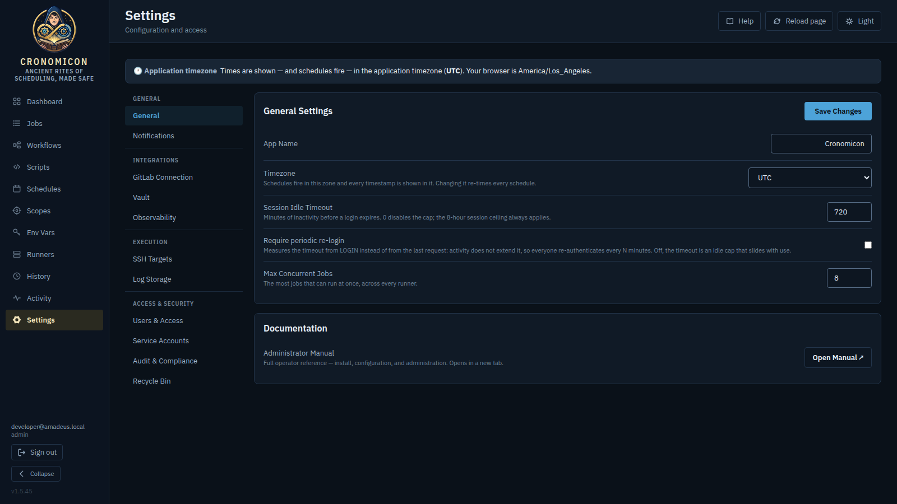
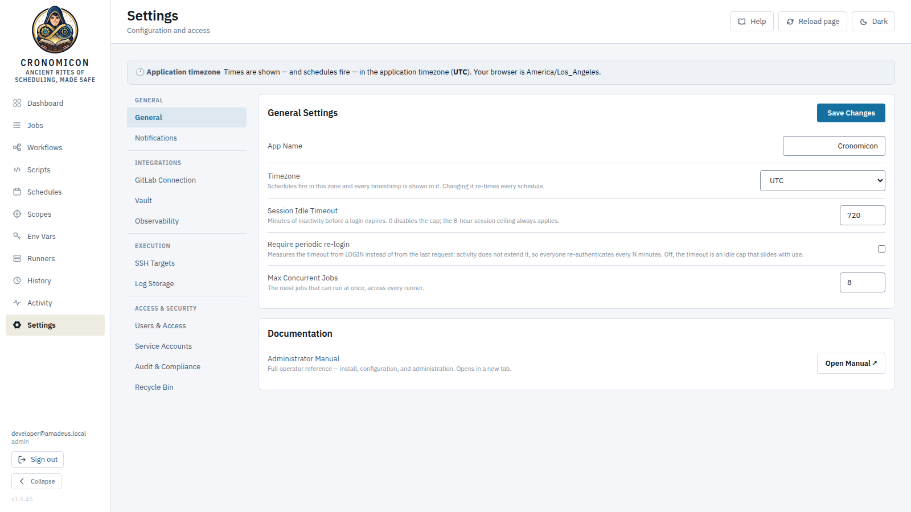
| Group → Section | What you configure |
|---|---|
| General → General | App name, Timezone (governs when schedules fire and how timestamps display — changing it re-times every schedule), Max Concurrent Jobs, and a Documentation card linking the Administrator Manual (new tab). |
| General → Notifications | Run notifications (Apprise URL fan-out or SMTP
relay) and Alert Rules (specific-job/all-jobs × fails/succeeds ×
Email/Apprise). Routing comes from the Apprise
targets or the SMTP relay, plus each rule’s channels; there is no separate
destinations list. The Run Notifications card reports delivery per transport —
“Email — sent 10:00” — with a failed send called out in red and “never
sent” shown as nothing at all. Send test, beside Save
Changes, delivers a test message over every configured transport and
reports each one as sent, failed or not attempted with
the reason — so you can find out whether your relay works without waiting for a
job to fail. It uses the saved settings and the default
recipients only (never an alert rule’s), and a successful test updates
the last-sent line. A rule's condition column is headed When
(“Job fails”), since trigger is the verb this app uses for
starting a run; a rule stored against a status the form does not offer
displays as “Job result: Warn” rather than the raw warning,
and keeps that status when you re-save it instead of silently
becoming Job fails. The only channels are Email and
Apprise (Apprise is how a rule reaches Slack, Discord and
webhooks), and the API refuses any other channel value (422); a rule
that names an unknown channel lists it struck through, so you can see which rules
to re-point. Deleting an alert rule asks first: the prompt names
the rule, its condition and its channels, and distinguishes an active rule
(something stops being sent) from an inactive one (nothing was being sent anyway).
A row that genuinely cannot be edited renders no Edit button
rather than a dead one.
|
| Integrations → GitLab Connection | Repo URL, Bot PAT, Bot name/email, Working Branch, the copyable
read-only Webhook URL, Webhook Enabled +
Webhook Events (push / mr /
tag), and the Webhook Secret (Rotate, unless env-pinned). The Working
Branch governs sync reads as well as schedule writes.
|
| Integrations → Vault | Status, Vault address, Auth method (AppRole/token), Role ID (AppRole only), Secret ID / Token (write-only; the field is labelled for the selected auth method, and changing that method requires entering the credential again), Namespace. |
| Integrations → Observability | Prometheus metrics enabled, path, and an optional Bearer token. Basic auth, if required, is applied at the reverse proxy. |
| Execution → SSH Targets | Host Registry (hostname, address, port, OS, Connect Via bastion,
Auth Key, User, with Test connection) and
Bastion Configuration. The Auth Key picker attaches a first-class
SSH key credential (Env Vars → SSH Keys,
writing authCredentialId) or, coequally, a key resolved by name
(runner / inventory) (authKeyEnvVar) — the column then shows
the credential's label. Test connection names the key that
authenticated (type + SHA256 fingerprint).
|
| Execution → Log Storage | Local volume path, or Local + S3 archive: local stays where runs
write, and a scheduled Sync (every 5/15 minutes, hourly, 6-hourly,
or daily at a UTC time) copies finished logs to the bucket; Sync
now runs one immediately, and the line beneath shows the last sync and
how many logs are still pending. A log whose local file has since been cleaned up
is read from the archive transparently — the run's detail shows Log
archived to S3 with the time it was copied.
A local path change applies immediately — no restart: the next run
writes to the new directory. Runs already in flight finish into the file they
opened, and existing logs are not moved, so move the tree yourself if older
logs must stay readable. The usage line underneath breaks the directory down
by file class: the headline (“N run logs · size · oldest
…”) is run logs only — roughly one file per run, and
the number the retention window actually governs — with Process
log, Audit log and Other (the
per-folder _meta.json sidecars) listed beneath it next to the directory
total, each shown only when present. Keeping the server's own process log out of
the headline count and oldest date means a single runaway file can never be
mistaken for real run history.
|
| Access & Security → Users & Access | Recent Logins (the Honest View), Roles (role CRUD; built-ins undeletable), and Access Grants — the only list that decides access, searchable and filterable. |
| Access & Security → Audit & Compliance | Data Retention — how long each record class is kept:
seven windows (Run History, Activity Log, Workflow Runs, Change
Log, Schedule Pushes, on-disk Run Log Files, and
Audit Stream Files). 0 means keep forever, and a
change applies on the next nightly sweep. Audit Stream Files
(auditLogFiles, default 730 days) bounds the on-disk
compliance audit stream audit.log — deliberately longer than the Change
Log window, because that file is an export of these tables and is meant to
outlive the rows it exported; setting it shorter throws the exported tail away
early. Plus Audit Export (date range, event types, CSV/JSON) —
where the Auth Events filter returns authentication
and authorization events (logins, failed logins, logouts, permission
denials, CSRF rejections) and nothing else; to include configuration changes, tick
Config Changes explicitly.
|
Retention is a UI control: the seven per-table windows live in Settings → Audit
& Compliance → Data Retention and are authoritative. The
CRONOMICON_RETENTION_* environment variables only seed those values on a server's
first boot — after that, editing the env changes nothing and the panel is the place to
look.
The nightly VACUUM-to-S3 backup has no UI and is server-config
(CRONOMICON_BACKUP_*) — don't go hunting for knobs that aren't there. See Deployment & Day-2 (Administrator
Manual).
The DB-backed integration settings (GitLab / Vault / Observability) resolve once at
startup; a save logs a loud warning and you must restart for it to take effect.
Also, an CRONOMICON_* env var, when set, overrides the matching DB
value — unset it to manage via the UI. (Exception: metrics enabled/auth is evaluated live per
scrape, but a metrics-path change still needs a restart.)
Log storage is the exception: saving a new local log directory re-points every log writer straight away, with no restart. Existing log files stay where they are.
If CRONOMICON_GITLAB_WEBHOOK_SECRET is set, the secret is locked: the Rotate
secret button is disabled and the rotation API returns 409. Unset the
env var to manage it from the UI.
15 Task Recipes (End-to-End)
Practical, multi-view walkthroughs for the things you'll actually do. Each names the views involved so you can follow along.
15.1 Create and run your first job
Views: Scripts → Scopes → Compose → Jobs → Dashboard → History
- Decide the origin. The fastest first job is an in-app (cronomicon-source) job — but you must be an Admin (Compose). The Git path is for reviewed, version-controlled definitions.
- Make sure a Script exists: open Scripts and confirm
yours appears with its run type. If empty, commit it to the repo's
scripts/folder and sync first (Scripts are Git-only). - Confirm a real Scope: open the Scopes page (or rely on a Git inventory). Note the exact name — a bad scope is caught only at run time.
- Open Jobs → + Create. Enter a unique Name, pick the Script (executor “auto” derives from it), choose the Scope, optionally a Target host, tick any Schedules (or none for manual-only), leave Enabled on, and Create job.
- Back in Jobs, click the blue ▶ Run. Accept the default scope or override it (heed the amber warning), pick SSH or Runner, then Run now.
- Watch it land on the Dashboard — the Running now tile ticks up and a filled mark appears at the playhead on the Score; the Jobs row tints green while running.
- Inspect the result: expand the job row's recent-runs table, or open History → Executions and expand the run to read its redacted log, exit code and duration.
15.2 Build a multi-step workflow that passes a variable
Views: Jobs/Scripts → Workflow Editor → Workflows → History
- In the producing job's script, print the value exactly:
::cronomicon-output name=VERSION::1.4.2(KEY must be env-var-style). - Ensure both producing and consuming jobs exist (confirm in Jobs).
- Author the chain: Workflows → + Create (Admin), add the producing step, then the consuming step, in order.
- Wire the input in-app: open the consuming step's Advanced ▼ and add an
Inputs (A12) row —
DEPLOY_VERSION← stepbuild· outputVERSION. (In the Graph editor you can instead drag the producer's handle onto the consumer.) Prefer GitOps? The YAML equivalent isinputs: { DEPLOY_VERSION: { fromStep: build, fromOutput: VERSION } }— commit & sync. - Reference
$DEPLOY_VERSIONin the consuming job's script — the engine injects it at run time (a missing upstream output resolves to empty, deterministically). - Trigger from Workflows (▶ Run); expand the row to watch the step chain, then open the run's Execution Timeline.
- Verify in History → Executions: the consuming child run (carrying a “workflow” chip) shows the value in its log.
15.3 Author and publish a reusable schedule
Views: Schedules → Schedule Builder · or Jobs → Publish to GitLab → History
- For an in-app reusable schedule: Schedules → Catalog → + New schedule (Admin). Enter a Name and Cron (type or pick a preset); verify the human preview and Next times.
- Optionally add Env rows — but remember they're plaintext; never put credentials there. Create schedule.
- Bind jobs/workflows via their
scheduleRefs(tick it in Compose, or list it in Git YAML). Confirm the binding in Schedules → Inventory and a future fire in Upcoming. - For a Git-published schedule on a specific job instead: Jobs →
+ Publish to GitLab, set Schedule mode = Scheduled, add named cron entries, review the
YAML and resolved
base_sha, then Publish → Confirm & Publish. - On
201the definition appears in Jobs after the next sync (≤ 5 min, instant via webhook). On412, click “Reload latest base_sha & retry on top.” - Review the push in History → Schedule Pushes. Remember: editing an cronomicon schedule's cron later propagates to every referencer — check the Used-by count first.
15.4 Connect a GitLab repo and sync definitions
Views: Settings → GitLab Connection · GitLab · Scripts · History → Git Sync
- Create the job-definitions repo with
jobs/ scripts/ schedules/ workflows/ inventory/directories. AddapiVersion: cronomicon.io/v1and akind:to every YAML. - Create a bot PAT (repo read/write). In Settings → GitLab Connection enter Repository URL, Bot PAT, Bot name/email, Working branch, then Save.
- Copy the read-only Webhook URL (always
<host>/api/v1/webhooks/gitlab). If the secret isn't env-pinned, Rotate secret and copy it. - In GitLab → Settings → Webhooks, paste the URL + secret token and enable Push
events. Back in Cronomicon, toggle Webhook Enabled on, tick
push, Save. - Trigger the first sync: push a commit, or click ↻ Git Pull on Scripts, or ↻ Sync now on History → Git Sync.
- Confirm a green Pulled row with counts. A warning (partial) means some files had validation errors — open Details, fix the YAML, re-sync. A red failure means clone/auth failed (check PAT + URL).
- Recommended: add the
cronomicon validateCI template so broken YAML is rejected at merge time. See GitOps & GitLab Sync (Administrator Manual).
15.5 Onboard a new runner agent
Views: Runners · target host
- Choose the image: slim (bash/perl/powershell/python over SSH or an isolated segment) or fat (ansible/terraform local toolchain).
- In Runners → Register New Runner, Mint a single-use token (optionally labeled with the runner's name) and Reveal/Copy it immediately (shown only once).
- Install on the host (systemd):
sudo ./runner-install.sh -s https://cronomicon.example.com -t <token> -n runner-dc1-01 -c bash,perl,powershell— or run the container (see Runner Fleet Management in the Administrator Manual). - Provision the runner's own SSH keys and a
known_hostsfile it can read — the agent refuses to connect to a target with no known_hosts (no trust-on-first-use for runner targets). - Keep
--namestable and the identity file on durable storage so restarts resume the same registry row. - Verify with
systemctl status/journalctl -u cronomicon-runner, then click Reload page — it should appear Online with its capability chips. - To retire later: Drain, then Deregister and delete the identity file. (Regenerating the token does not revoke it.)
15.6 Manage secrets safely
Views: Env Vars → Secrets · SSH Keys · Settings → SSH Targets · History → Change Log
- Confirm a KEK is configured (
CRONOMICON_KEK_FILE) — without it, stored-secret operations fail with “no KEK configured.” - Env Vars → Secrets → + Add Secret. Enter a Key (respect the A13 rule — unique per scope across vars and secrets), keep Source = Stored, pick a Scope, paste the value (whole PEM/OpenSSH keys preserved), Save.
- To use a key for SSH you have two coequal options. (a) First-class
credential: add it in Env Vars → SSH Keys (paste the
unencrypted private key — it validates on save and returns a copyable public key + SHA256
fingerprint), then attach it to the host/bastion with the credential picker
(writes
authCredentialId) in Settings → SSH Targets. (b) Key by name: set the host's Auth Key (authKeyEnvVar) to a stored secret's name — the permanent path for runner-executed and inventory-imported hosts, which resolve keys by name locally. Either way the key must be unencrypted (no passphrase). - To view a stored value later, expand the row → Reveal — every reveal writes a Change Log entry. Vault secrets can't be revealed in Cronomicon.
- Keep real secrets out of schedule env and out of Git. Note redaction skips values under 5 chars and common literals (see Secrets & Security, Administrator Manual).
- Optionally Migrate to Vault once Vault is wired — one-way; deletes the local ciphertext.
15.7 Run a job over a bastion (jump host)
Views: Settings → SSH Targets · Jobs
- In Settings → SSH Targets → Bastion Configuration, add a bastion (Name, Address, Port, User, Auth Key). Click Test connection → Verified.
- Edit the target host and set its Connect Via to the bastion's name.
- Test the host — Cronomicon dials the bastion, tunnels to the target, and verifies the target's host key over the tunnel.
- Trigger/schedule the job against that host or its scope. (Bastion-hop host-key pinning is a future refinement; the target hop is fully verified today.)
15.8 Make one job run when another one finishes
Views: Compose → Schedules → Reactions → History
- Decide which definition runs — a reaction is authored on the reacting side, not on the one being watched. Open it in Compose (or the Workflow Editor) in edit mode; a definition that has not been saved yet has nothing to attach a reaction to, and the editor says so instead of collecting input it would throw away.
- In Reactions (run this job when another one finishes), click + Add reaction and fill four fields: a Name for the entry, When this finishes (the watched job or workflow), With outcome (success · failure · stopped · any — a run that ended with warnings counts as success), and a Delay (s) if the downstream needs breathing room.
- Optionally set Min interval (s) to cap how often this one reaction may fire — useful when the upstream is on a short cron. Events it blocks are dropped, not queued. Leave incl. workflow steps off unless you really do want the reaction to fire when the watched job runs as a step inside a workflow.
- Save. The definition and its reactions are saved in two steps, so if the second fails you are told plainly that the job was saved but its reactions were not — reopen and retry rather than assuming it took.
- Confirm the edge in Schedules → Reactions. It will not appear in Upcoming: a reaction has no clock, so there is no instant to project.
- Trigger the upstream (or wait for its own schedule). Within about half a minute the downstream run appears in History with Trigger = Reaction and a “Triggered by run:” link back to the run that caused it. Remember it fires on the next matching completion — never retroactively on one that already happened.
- For a Git-defined job or workflow, do all of this in its YAML instead, under
spec.reactions(onKind,onName,onOutcome, andonSourcewhen the watched definition lives in the other namespace). The in-app editor refuses, because a sync replaces that definition's reactions wholesale and an in-app row would vanish at the next one.
16 Troubleshooting & FAQ
The issues testers hit most, grouped by area. Click any question to expand the cause and fix.
Authentication & access
After a good SSO login I still get 401/403 everywhere
Cause: CRONOMICON_TRUSTED_PROXIES doesn't match
the peer IP Cronomicon sees, so it strips the legitimate Remote-* headers
(fail-closed).
Fix: bring the app up, hit it through the proxy, read the source IP from the
request log, and set CRONOMICON_TRUSTED_PROXIES to exactly that (proxy container
IP on a shared network, or the docker bridge gateway via a published port). The app refuses
to boot in trusted-header mode without it.
A user logs in but has no access / their Access column reads “No access”
Cause: none of their AD groups match an access grant (the honest default denies — a grant is the only thing that confers access, and matching is case-sensitive). The column says No access in words rather than showing a dash, because that is a real finding — usually a grant nobody wrote — not missing data.
Fix: in Settings → Users & Access → Access Grants, add a grant for a group they actually belong to (check the AD Groups column in Recent Logins), then have them sign out and back in.
A non-admin triggered or killed a job their role says they shouldn't
Cause: this should not happen. The run lifecycle
(trigger / kill / pause / resume a job, and workflow trigger / pause / cancel) is enforced
per-role and per-scope: the caller needs triggerJobs (or
killJobs, to stop something) on the run's scope, from the same grant. The
Operator/Viewer distinction is real — a Viewer cannot execute.
Fix: if someone can trigger or kill where they shouldn't, review the Access Grants card — one of their grants carries the verb on that scope, or an All scopes grant carries it everywhere. (See §4.2–§4.3.)
Saving / triggering fails with “403 missing or invalid CSRF token”
Cause: the X-CSRF-Token header didn't match
the cookie — usually a stale tab or cleared cookies.
Fix: reload the page so a fresh token is issued, then retry; ensure the site's cookies are allowed.
Jobs that don't run
My shell (bash/perl/powershell/python) jobs sit “queued” forever
Cause: the in-app SSH executor is off by default.
Fix: deploy with CRONOMICON_SSH_EXECUTOR_ENABLED=true (it logs a
warning that it now holds SSH keys and has outbound SSH to targets).
A run stays queued “waiting for a {type}-capable runner”
Cause: no online runner advertises that capability (e.g. an ansible run but only slim bash runners are up).
Fix: bring up a runner (fat image for ansible/terraform) with the needed
capability, or install the toolchain on an existing auto-detecting runner's host and restart
the service (the agent re-probes and the registry updates); a runner pinned with an explicit
-capabilities needs the type added there first.
“Run now” fails with 409
Cause: the global concurrency cap
(maxConcurrent) is reached.
Fix: wait for active runs to finish or kill stale/queued ones; raise the cap in Settings → General if appropriate.
The Run dialog rejects SSH for an ansible/terraform job (422)
Cause: those are runner-only — the SSH executor lacks the local toolchain.
Fix: pick the Runner executor (the dialog forces this on rejection) and Run now again.
A scheduled job didn't fire when expected
Cause: the job is paused, the concurrency cap was hit, a
Forbid policy suppressed it, the cron is invalid, or it fires in the effective
application timezone (the Settings → General Timezone, else the host
TZ) rather than the zone you assumed.
Fix: unpause it, check History for a skipped (Forbid) run, validate the cron, and confirm the application timezone in Settings → General (the informational banner names it).
A scheduled job suddenly runs on one host instead of the whole scope
Cause: the job has a Target host pinned, and that pin is honored on every run path — manual runs, cron fires and workflow steps alike.
Fix: this is the pin doing what it claims. If the fan-out is what you actually want, open the job in Compose and clear Target host — leaving it on “all hosts in {scope}” restores the fan-out. Unpinned jobs are not affected.
Compose or a run rejects my target host with 422 / 409
Cause: the target host contains an ansible pattern
metacharacter (e.g. web[01:50], a comma, a wildcard). Such a pin cannot be
folded into an ansible --limit safely, and dropping it silently would have left
no limit — a full-inventory run. So it is refused: 422 at authoring
time and at manual trigger, 409 if a run reaches the manifest with one (which
is how a Git-synced job with a bad pin surfaces — sync only warns and still writes the row,
so one bad file cannot wedge a whole repo's sync).
Fix: name a single literal host. To target a pattern or a set, use inventory
group targeting or the raw --limit passthrough in the Run
dialog (§6.5) — a passthrough wins outright, and the pin is then never
folded in.
A reaction I added didn't fire
Cause: in order of likelihood — the upstream has not finished since you added the reaction (a new reaction is never retroactive); it finished with an outcome you are not watching (a run that ended with warnings counts as success, and an operator stop that was not classified is stopped, not a failure); the reaction or its owning definition is disabled or paused; a global working calendar covers today; the reaction's minimum interval swallowed the event; the chain hit its depth limit; the upstream ran as a step inside a workflow (a job only raises a reaction from inside a workflow if that reaction opted in); or the upstream finished more than 24 hours ago and was recorded as expired.
Fix: open Schedules → Reactions and confirm the edge exists, is enabled, and is not flagged missing — a reaction whose watched definition was deleted is kept, but can never fire. Then check the upstream's own run in History and read the result it actually recorded. Each attempt is recorded with its reason in a delivery log that has no screen yet, so if none of the above explains it, an administrator can read that log out of the database (Administrator Manual §4.5).
Deleting a job or workflow is refused because reactions watch it
Cause: deliberate. Something reacts to this definition, and deleting it would either take that reaction with it — a silent loss of work you authored — or leave it pointing at nothing without anyone deciding to. So the refusal names the reactions and hands you the choice.
Fix: if you still want it gone, press Delete anyway. The definition is deleted and its watchers survive, flagged missing on Schedules → Reactions, where they can never fire until you repoint or delete them. If you would rather keep the graph intact, cancel and edit or remove those reactions first. A similar-looking refusal on the same button — “Only cronomicon-source jobs can be deleted in-app” — is a different thing entirely and offers no override: that definition lives in Git, so delete it by removing its file from the repo.
Adding a reaction is refused, or the editor won't let me add one
Cause: four refusals are deliberate. A definition cannot react to itself; it cannot watch a definition that does not exist; it cannot close a loop (the message names the whole path); and it cannot watch an upstream you are not allowed to see. Separately, a Git-defined job or workflow refuses in-app reactions altogether, and a definition that has not been saved yet has nothing to attach one to.
Fix: for a Git-defined definition, author the reaction in its own YAML under
spec.reactions — an in-app row would be erased by the next sync, which is why
it is refused rather than accepted and quietly lost. For a new definition, save it first and
reopen it. For a loop, break the cycle at whichever edge you least want; for an upstream you
cannot see, ask someone with access to that scope to author it.
Git sync & publishing
A committed YAML doesn't appear in Cronomicon
Cause: no sync ran since the commit, or the webhook isn't delivering.
Fix: trigger a manual sync (Scripts → ↻ Git Pull, or History → Git Sync → ↻
Sync now). Check History → Git Sync for a warning/failure and read its Details. A warning (partial) usually means a
dangling script_ref/scheduleRef, bad cron, or unknown kind — fix
that YAML.
An in-app edit is rejected with 409
Cause: the definition is Git-source, which is read-only over the API.
Fix: edit it in Git (validate, MR, sync), or use Jobs → Publish to GitLab. Only cronomicon-source rows are editable in-app.
Publishing returns 412 Precondition Failed
Cause: the target file changed since your
base_sha (a concurrent edit).
Fix: review the shown diff, click “Reload latest base_sha & retry on top,” then Confirm & Publish again.
GitLab webhook deliveries are rejected (401)
Cause: the X-Gitlab-Token doesn't match
Cronomicon's webhook secret.
Fix: re-copy the exact secret into the GitLab webhook. If
CRONOMICON_GITLAB_WEBHOOK_SECRET is env-pinned, use that value (UI rotation is
disabled while pinned).
Secrets & runners
A secret value still appears in plaintext in a run log
Cause: the value is under 5 chars, equals a common literal, is Vault-sourced (not in the local dictionary), or was passed via schedule env (never redacted).
Fix: use longer, non-trivial secret values; keep credentials in the secrets system rather than schedule env; be careful echoing Vault values in scripts. (See Log redaction & its gaps, Administrator Manual.)
Creating/revealing a stored secret fails: “no KEK configured”
Cause: no master KEK is set, so envelope encryption can't run.
Fix: configure CRONOMICON_KEK_FILE (32-byte base64) and restart.
I revoked a registration token to lock out a runner, but it's still running
Cause: registration tokens are first-contact-only credentials — a registered runner's token is already dead (single-use), and revoking an unused token only stops a future install. Registered runners hold their own long-lived API keys.
Fix: open Runners and Deregister the runner (revokes its key immediately), then delete its identity file.
A runner shows Offline though the host is up; runs failed as “Lost”
Cause: the reaper marked it offline after ~5 min without a
heartbeat; in-flight runs were reconciled as runner_lost.
Fix: confirm the agent is running and can reach the server over HTTPS
(journalctl -u cronomicon-runner). It resumes its identity once it polls again;
re-run the lost jobs.
General
The Activity page shows a NetworkError / won't load
Cause: ad blockers (uBlock / EasyPrivacy) sometimes block
the /api/v1/activity endpoint by URL pattern — it looks like a backend fault
but isn't.
Fix: allow-list the Cronomicon host (or disable the blocker for it). The Dashboard and History tabs don't use that endpoint and remain unaffected.
A runner reads Degraded — what is that, and what should I do?
Cause: its last heartbeat is more than two minutes old (or it registered and has never polled). Agents poll about once a minute, so this means two missed polls. The status is derived when you load the page, not stored — the runner's own recorded lifecycle status is untouched. Without it, such a runner would read Online for up to five minutes after it had actually died.
Fix: check the host and the agent service. A degraded runner is treated as reachable, so Resync, Scan keys and Drain all stay available — it may still be holding work. If it does not recover, the reaper will call it Offline at the 5-minute mark and reconcile its in-flight runs to Lost.
A job fails only at run time with a scope/target error, though it saved fine
Cause: a job's scope is validated only at execution, not at save. A bad/renamed scope passes save and fails later.
Fix: confirm the scope exists (Git inventory or the Scopes page) and is spelled exactly. Remember scope renames don't cascade to references.
The container refuses to boot / exits immediately
Cause: CRONOMICON_TRUSTED_PROXIES is empty in
trusted-header mode — it's fail-closed.
Fix: set it to the proxy peer's IP/CIDR (e.g. 172.28.0.2/32)
and redeploy.
17 Glossary
Consolidated definitions of the terms used throughout Cronomicon and this manual.
- Reaction
- A standing instruction on one job or workflow to run when another one finishes with a chosen outcome — the fourth way something can start, and the only one with no clock. Edge-triggered: it never waits or accumulates, and a new one fires on the next matching completion rather than catching up on history (§9.3).
- Disposition
- What an operator says a stopped run meant — Stopped, Failed, Success or Warning. The run takes that status, while stopped by independently records that a person ended it, so a run can read Success and still show a Stopped marker (§6.6).
- A12 inter-job data passing
- The mechanism for a workflow step to consume an upstream step's output. The producer prints
::cronomicon-output name=KEY::VALUEon stdout; the consumer declaresinputs: { VAR: { fromStep, fromOutput } }(authored per-step in the Workflow Editor — an Inputs row or an on-canvas handle drag — or in Git YAML). KEY must be env-var-style; a missing output resolves to empty, deterministically. - A13 unification rule
- Variables and secrets share one key namespace per scope: a KEY may exist only once across both,
in any order. Violations return
409with an “(A13)” message. - Activity feed
- The reverse-chronological event stream (
/activity) of run starts/ends, config changes, pushes, Git syncs and SSH tests, color-coded by outcome. - Agency
- An operator-managed network-isolation zone. A scope binds to the one agency its hosts live in; each runner is assigned to one or more agencies (operator-assigned, never self-declared by the agent). Dispatch is hard-isolated: a job dispatches only to a runner in its agency, and an untagged job only to an untagged runner (the general pool). Operator-owned and never synced — a binding survives Git re-sync. Catalog + per-scope binding live on the Scopes page; runner membership on Runners.
- Cronomicon-source
- A definition authored in-app (no Git round-trip) and stored in the database. Editable/deletable in the UI by admins; never touched by Git sync.
- Ansible inventory / projection
- An
inventory/*.ini(git-synced or authored in-app) attached to a scope. The raw inventory ships unchanged toansible-playbook -iand is authoritative for execution; a parsed projection (groups,[group:children],[group:vars], host_vars) is surfaced read-only as advisory — not authoritative, and degrades loudly to “preview unavailable” on the first out-of-subset construct. Inline secret values are rejected fail-closed at ingest (env-var-NAME indirection is the remediation); inventory hosts are imported intossh_hostson sync. See §11. - apiVersion / kind
- Required top-level fields on every Cronomicon YAML.
apiVersionmust becronomicon.io/v1;kindis one of Job, Script, Schedule, Playbook, Terraform, Workflow, InventorySidecar. Unknown values are line-numbered errors. - Application timezone / effective zone
- The one zone that governs both cron scheduling and UI display: the stored
Settings → General → Timezone if set and loadable, else the host
TZ. The scheduler evaluates cron in it and the SPA renders every timestamp in it, so “2 a.m.” means the same thing in the schedule editor, Upcoming, History and reality. Surfaced read-only asappTimezoneonGET /settings/general; an invalid zone is rejected with422, an unloadable stored value degrades to the host zone with a warning. (Without it, cron would fire in the container OS zone and each viewer would see their own browser zone.) - Apprise
- A URL/DSN-based notification fan-out gateway delivering one event to many services (email,
Slack, Discord). Configured in Settings → Notifications or via
CRONOMICON_APPRISE_URL. - authKeyEnvVar
- The name of the env var or stored secret holding the unencrypted SSH private key for a
host or bastion. The server ships only this name to runners; key bytes never cross the wire.
Coequal with
authCredentialId(the first-class SSH key credential) and fully supported: the name path is permanent for runner-executed and inventory-imported hosts, which resolve keys by name locally and never receive credential material. - Bastion (jump host / ProxyJump)
- An intermediate SSH host named in a target's “via” field. Cronomicon dials the bastion, tunnels to the target through it, and verifies the target's host key over the tunnel.
- base_sha / If-Match
- The Git commit a publish edit was based on, sent as an If-Match precondition. If the file
changed since then, the server returns
412with a diff for rebase-and-retry. - bash floor
- A scope's supported run types always include
bash, which can't be removed — preventing an empty type set. - Body-lint
- A sync-time scan of each Script body (computed on the same read as the content hash) that
surfaces advisory findings —
crlf,non_utf8,no_shebang,shebang_mismatch,oversized— as warning chips in the Scripts catalog. Purely advisory: never blocks a sync, drops a script, or enters the content hash. See §8.3. - Bootstrap admin
- A first-run env var (
CRONOMICON_BOOTSTRAP_ADMIN_GROUP) granting admin to any member of a named AD group regardless of grants, so the first admin can seed real access grants. Logs a loud warning; remove afterward. Trusted-header mode only — the OIDC login path never applies it; lockout recovery on any deployment is the offlinecronomicon grant-adminsubcommand (see the Administrator Manual, §8.7). - Calendar (working calendar)
- A named set of wall-clock dates — holidays, a change freeze, month-end — each
optionally labelled, authored under Schedules → Calendars and matched
in the application timezone, never UTC. A schedule entry binds
calendars in two roles:
skipCalendarsvetoes a fire landing on one of their days,onlyCalendarsmakes their days the only days it may fire; both together are legal and skip wins. A calendar marked global is skipped by every schedule at once (the change-freeze case) and may never be used in the run-only role. Gates scheduled fires only — never Run now, a workflow step, or a webhook. Suppressed fires are recorded as skipped runs, filterable in History by calendar. Cronomicon ships no dates; a calendar that runs out of days silently stops suppressing. See §9.2. - Change Log
- The audited record of in-app configuration changes (Timestamp, User, Category, Action, Target, Details). Viewed in History → Change Log; CSV-exportable; retention is the Change Log window under Settings → Audit & Compliance (default 1 year).
- Compose capability
- An Admin-only feature flag (
GET /capabilities → compose) gating all in-app authoring (Compose, Workflow Editor, Schedule Builder). One of the role gates enforced server-side viarequirePerm— alongside Manage env vars, Configure app, Manage roles and Publish. The run-lifecycle actions (trigger/kill/pause/resume, workflow trigger/pause/cancel) are role-gated too, viatriggerJobs/killJobson the run's scope. - Concurrency cap (maxConcurrent)
- The global limit on simultaneous queued+running runs (Settings → General; scheduler falls back
to 5 when unset). A cron fire over the cap is skipped; a manual run is rejected with
409. - concurrency_key / concurrency_policy
- A grouping key (default
source/jobname) and a policy — Allow (default), Forbid, or Skip — gating concurrent runs. A Forbid-suppressed fire is recorded once per episode as a skipped run. - Control plane
- Cronomicon's role: it schedules and tracks jobs but does not execute them itself. With no runner registered (and the SSH executor off), runs queue but never execute — expected, not an outage.
- CSRF double-submit
- State-changing operator requests must echo the
cronomicon_csrfcookie in anX-CSRF-Tokenheader; a mismatch is rejected with403. Runner bearer requests are exempt. - DEK (Data Encryption Key)
- A random per-secret key that encrypts the secret value (AES-256-GCM); stored only in KEK-wrapped form. The heart of the envelope-encryption scheme.
- Deregister
- Permanent removal of a runner from the registry, revoking its API key immediately. Done manually or by the reaper after the deregister window (default 14 days offline).
- Developer login bypass
- A non-production button (
CRONOMICON_DEV_AUTH=true) that mints a synthetic admin session with no scope restrictions, for local UI preview. Returns 404 in production. - Dirty schema
- A half-applied (failed) migration.
/readyzreturns 503 and the container stays unhealthy. Recovery is restore-from-snapshot + image rollback + fix-forward — nevermigrate down. - Drain
- Graceful retirement of a runner: it stops claiming new work, finishes active runs, then goes
offline (immediately if it had none). Server-side deadline defaults to 1 hour; systemd's
TimeoutStopSec=300is the separate SIGTERM grace window. - Dual-source model
- Each Job/Workflow/Schedule/Scope can live in Git (version-controlled, read-only over the API,
prunable) or be authored in-app (its own source of truth, never pruned). Both run through the
same engine, keyed by
(source, name). - Envelope encryption
- The scheme where a value is encrypted by a per-secret DEK and the DEK is encrypted by the KEK, so the database never holds plaintext or an unwrapped key.
- Event kind
- The category tag on an Activity card:
run-start,run-end,config,push,gitsync,ssh-test. - Executor
- The attribute deciding where a run executes:
ssh(the in-app SSH executor) orrunner(a distributed agent). “Auto” means no fixed per-job executor; ansible/terraform are runner-only. - Folder browsing
- Sub-folders in the GitOps repo (under
jobs/,scripts/,schedules/,workflows/) rendered as a navigable breadcrumb + drill-in tree in each catalog; searching flattens to full-path results. A definition's folder location (its file path) is separate from its identity (metadata.name/id), so moving it never changes references or routes. See §8.1. - Forward-only migrations
- Cronomicon applies up-migrations automatically on every boot. Down-migrations are dev/test only; production recovery from a bad migration is restore-from-backup.
- GitOps pruning
- During sync, any
source='git'row not seen in the repo this pass is deleted — how removing a YAML file in Git removes the definition. Cronomicon-source rows are never pruned. - Honest View / Recent Logins
- The Settings → Users & Access list of users who have actually signed in at least once. Cronomicon never enumerates the directory.
- Identity file
- A
0600JSON file ({id, apiKey}) a runner writes on first registration and reads on restart to resume its registry row instead of orphaning it. Default/var/lib/cronomicon-runner/identity.json. - Inventory mode (cronomicon vs local)
- Per-runner.
cronomicon(default): the server resolves scope hosts and ships fully-resolved targets.local: the manifest carries only the scope name; the agent resolves it against its own inventory (for isolated segments). - Job-definitions repo
- The GitLab repository that is the source of truth for all job/script/schedule/workflow/inventory definitions. Cronomicon keeps a local clone and re-parses it on each sync.
- Job-level env
- A plaintext env map declared on a Job (Composer → Environment (job-level)) and injected into every run, independent of the firing schedule. It is the base layer of the effective run env: job-level env → firing schedule's env → per-run override (later wins). Plaintext, not redacted — keep credentials in the secrets system.
- KEK (Key Encryption Key)
- A 32-byte base64 master key that envelope-encrypts stored secrets and the SMTP password.
Supplied via
CRONOMICON_KEK_FILE. Back it up separately from the DB backup — losing it makes stored secrets unrecoverable. - Manifest
- The execution payload a runner fetches after claiming a run: trace id, job, run type,
interpreter+body, an env snapshot (no secrets), and target references with
authKeyEnvVarnames (never key bytes). - Orphan
- A script or schedule that no job or workflow references (Used-by 0). An unreferenced schedule never fires.
- Per-run override (override envelope)
- Ad-hoc
scope/executor/targetHosts/envsupplied in the Run dialog for a single manual run. The effective values land in the run's own columns; what was overridden is also recorded as an audit envelope (runs.override_json) and shown in History as “Ad-hoc overrides (this run)”. Override env is plaintext but is fed to the per-run log redactor. See §6.5. - Per-instance Pause
- The one workflow field the UI can change on any (including Git) workflow — labelled Pause /
Resume, Enable / Disable before it. Stops scheduled firing and blocks manual
triggers (
409 workflow_disabled). The documented exception to Git-canonicality. - Reaper
- A server sweep (~60s) that marks runners offline after
CRONOMICON_RUNNER_OFFLINE_AFTER(default 5m) and deregisters runners offline beyondCRONOMICON_RUNNER_DEREGISTER_AFTER(default 14d). A separate workflow orphan reaper (startup + every 10 min) reclaims workflows orphaned by a restart or running past 24h to failure with reasonorchestrator_lost, including their queued/running child runs. - Redacted log / [REDACTED]
- Run output with scope env values, decrypted stored-secret values, and stored SSH-credential key material masked as
[REDACTED]at server-side ingest (multi-line PEM keys are masked line by line). No UI toggle reveals the raw log. Values under 5 chars, common literals, Vault values and schedule env are not masked. - Reference binding (run injection)
- A declaration on a Job or Script naming the Secrets, Variables and SSH keys it consumes, by
their derived reference (
CRONOMICON_SECRET_/VAR/KEY_<name>). At dispatch Cronomicon resolves and injects only the declared set into the run (stored or Vault-sourced), masked in logs and never persisted; a missing/out-of-scope reference fails the run (fail-closed). Edited on the Job/Script detail panels (Manage env vars, scope-checked); the injected names are shown read-only on the run detail. Runner runs also materializeCRONOMICON_KEY_*to a0600tmpfs path; a run that binds a key and resolves to the in-app SSH executor is refused (422 key_binding_requires_runner). See §11.6. - Registration token (crn_reg_*)
- A single-use bearer token (24h expiry), minted per install from the Runners view; it dies on its first successful registration and records which runner consumed it. Stored only as a SHA-256 hash; plaintext shown once at mint. Revoking an unused token never affects registered runners.
- Reveal
- The explicit, audited unmask of a stored secret. A POST, because every reveal writes a Change Log entry. Vault secrets can't be revealed.
- Resync
- Re-aligning the server’s view of a runner with its current config in place — same id, same API key, no deregistration. Automatic (drift is detected on the first poll after a restart); the Runners-view Resync row action forces it immediately after changing declared config (capabilities, inventory, maxConcurrent…) or upgrading the agent binary.
- Role
- A named permission template, stored as data. The four built-ins — Admin, Approver, Operator, Viewer — ship by default and cannot be deleted; admins can create custom roles in the Roles card. A role reaches you only through an access grant naming it; a user can hold several. Display precedence admin > approver > operator > viewer.
- Run / run lifecycle
- A single execution of a job, with a status, trace ID, timestamps, duration and exit code. Both
executors share one lifecycle (trigger → queued → running → terminal); a run row's
executorcolumn keeps them from cross-claiming. - Run input
- A value declared on a Job — or, on a Script and inherited by jobs built from it —
(name, label, required, default, options) that surfaces as a fillable field — text or a
<select>on options — in the ad-hoc Run dialog. Answers ride the per-run env-override path. Enforcement is per job: under Warn (the default) an empty required input disables the Run button until you tick the Run without it/them escape and the server accepts it regardless; under Block the run is refused422 prompt_requiredwith no override, for the Run dialog and the API alike (not yet for schedule/workflow fires). the unfilled name is recorded underpromptWarningsin the run's override envelope for History, alongsidepromptAnswers(where each value came from) andpromptAcknowledged. Distinct from the inferred Script variables heuristic, which is only a Composer seed + drift lint and never part of the run path. See §6. - Runner / runner agent
- The external
cronomicon-runnerbinary on a separate host that registers, long-polls forexecutor='runner'runs, executes them and streams logs back. Required for ansible/terraform and isolated targets; outbound HTTP only. - Runner API key (crn_run_*)
- The long-lived (365-day) per-runner key minted at registration and persisted to the identity file. Used for all later polls/manifests/logs.
- runner_lost
- The reason stamped on a run whose runner was reaped offline mid-run; the run is finalized as failure with an amber “Lost” badge.
- Schedule (definition)
- A first-class reusable named cron (+ optional plaintext env) referenced by jobs/workflows via
scheduleRefs. Source git or cronomicon. Editing an cronomicon schedule propagates the new cron to every referencer. - Schedule Push
- A commit published to GitLab from the publish builder, audited in History → Schedule Pushes with file, schedule change, SHA and status.
- scheduleRefs / script_ref
scheduleRefslists first-class Schedules a job/workflow binds to;script_refpoints a Job at a reusable Script by name (including the extension, and the fullscripts/-relative path for a sub-folder raw script). A dangling ref is a hard, line-numbered sync error that drops that definition.- Script variables
- The environment variables a Script's body references, extracted at sync time per run type (bash/sh, perl, powershell, python; ansible/terraform not yet analyzed). Shown read-only as status chips — ✓ provided, ● required & missing, ○ optional (with default) — in Scripts, the Run dialog and the Composer (advisory; the scope's Env Vars are not auto-injected). See §8.4.
- Scope
- A named target environment = a host list plus its supported run types, optionally an Ansible inventory and a bound agency. Managed on its own top-level Scopes page (§11). Capability is advisory; a scope rename does not cascade; a job's scope is validated only at run time.
- Score
- The Dashboard's single timeline, 24 hours back and 12 hours ahead: one mark per run — filled if it ran, hollow if it is scheduled — with the stem's height showing duration on a log scale and a gold playhead at now. Past runs, running runs and upcoming fires are one dataset on one axis rather than separate lists split by tense. Runs within about 18½ minutes of each other share one mark, drawn as a chord — one pip per run, each in its own outcome's colour. See §5.2.
- Chord (Score)
- How the Score draws two or more runs close enough together to share a mark: a stack of pips, one
per run, severity-sorted with the worst lowest, on one shared stem sized by the longest run.
Each pip keeps its own outcome's colour, so a mixed cluster is legible rather than painted the
worst colour throughout. Capped at 8 with a
+koverflow that folds from the mildest end, so an overflow can never hide a failure. - Current status (Dashboard)
- The section beneath the Score carrying the detail behind the verdict: Up next names the next three scheduled runs, and Recent errors folds the last 24 hours of failures and warnings per job (appearing only when there are any). See §5.3.
- Verdict strip (Dashboard)
- The one-line answer to “is everything okay?” at the top of the Dashboard, above the stat tiles: a quiet “All 14 jobs healthy.” when nothing is wrong, a red, clickable “N jobs need attention.” when something is (it scrolls to Recent errors), or an invitation to create the first job. Its counts come from the server's exact totals, not the page of runs the browser fetched. The attention state can be dismissed (✕), which silences only the situation you acknowledged — it returns as soon as anything new fails or warns, and never hides Recent errors. See §5.3.
- Degraded (runner)
- A runner whose heartbeat is more than two minutes old, or which registered and
never polled. Derived at read time, not stored — the stored status is the
runner's lifecycle, and this is a freshness reading over it, so only
onlinedegrades. It names the window in which a dead runner would otherwise still read Online, sinceofflineis only declared after the reaper's 5-minute threshold. A degraded runner counts as reachable: its recovery actions stay offered. See §13.1. - Source-of-truth rule
- Git is truth for definitions; the database is truth for state and operator config. When they overlap, Git wins on read. The one exception is the per-instance workflow Pause toggle.
- SSH executor (in-app)
- The opt-in in-process worker pool that runs bash/perl/powershell/python over SSH, direct or via
a bastion. Off by default; enabled with
CRONOMICON_SSH_EXECUTOR_ENABLED; default concurrency 4. - SSH key credential
- A first-class, typed credential (the
ssh_credentialsentity) for the private keys Cronomicon uses for automated SSH — envelope-encrypted with the same scheme as stored secrets, and validated on save (deriving key type, SHA256 fingerprint and a copyableauthorized_keyspublic line; passphrase-protected keys are rejected). Managed in Env Vars → SSH Keys and attached to a host/bastion with a picker that writesauthCredentialId. Coequal with — not a replacement for — theauthKeyEnvVarname path. Private material is never returned by the API and is added to the log-redaction dictionary. - Stored / Vault secret
- Stored: value encrypted at rest via envelope encryption; revealable (audited).
Vault: only a
path#fieldreference is stored; the value lives in HashiCorp Vault, fetched live using the configured Vault auth method (AppRole or a token), and cannot be revealed in Cronomicon. - Target host (job pin)
- The optional single host a job definition pins itself to (
targetHost, set in Compose). Left empty, the run fans out across every host in its scope. The pin is honored on all four run paths — manual trigger, cron fire, workflow step and ansible run. It wins outright over a per-run host subset, and folds into an ansible--limitunless a raw passthrough is supplied. A pin containing an ansible pattern metacharacter is refused (422at authoring and trigger,409at run) rather than dropped, since dropping it would silently widen the run. - Target group / --limit
- Inventory targeting in the Run dialog.
targetGroups[]selects parsed inventory groups — one resolver expands members for the SSH executor and passes the group NAMES to a runner asansible --limit, so both executors hit the identical set (no drift).ansibleLimitis a raw--limitpassthrough for patterns the projection can't model (ansible/runner only;422on the SSH executor; lives in the dialog’s Advanced section). Group targeting is rejected when the scope's projection is unavailable. See §11. - Trace ID
- A backend-minted UUIDv7 uniquely identifying a run or workflow run, shown in middle-ellipsis
form (
3c4d-74f7…d5474); full value on hover and in the drill-down. - Trusted Header SSO
- The default auth mode: a reverse proxy runs forward-auth against your identity provider and injects
Remote-User/-Email/-Name/-Groupsheaders Cronomicon trusts per request. No app session cookie. - CRONOMICON_TRUSTED_PROXIES
- The CIDR/IP allowlist of the reverse-proxy peer whose
Remote-*headers Cronomicon will trust — the entire trusted-header model. Fail-closed: empty ⇒ won't boot. Must be the IP Cronomicon sees as the connecting peer. - Used by / blast radius
- The reverse index on Scripts and Schedules showing how many (and which) jobs/workflows reference them, so you can gauge the impact of a change or delete.
- VACUUM INTO
- The SQLite command used for nightly backups; a consistent, fully-openable snapshot taken without locking out live traffic (WAL mode), optionally uploaded to S3.
18 Appendices
Appendix A — Cron reference
| Preset | Expression | Preset | Expression |
|---|---|---|---|
| Every 15 min | */15 * * * * |
Weekdays 09:00 | 0 9 * * 1-5 |
| Hourly | 0 * * * * |
Weekly Sun 02:00 | 0 2 * * 0 |
| Daily 07:00 | 0 7 * * * |
Monthly 1st 00:00 | 0 0 1 * * |
| Nightly 23:00 | 0 23 * * * |
(descriptor) | @daily |
5-field order:
minute(0-59) hour(0-23) day-of-month(1-31) month(1-12) day-of-week(0-6, 0=Sun). The
backend also accepts 6-field seconds-first cron
(sec min hour dom month dow). Supported tokens: *, */n,
a-b, single values, comma lists. All cron evaluates in the effective
application timezone — the stored Timezone setting if set and loadable, else the host
TZ — the same zone the UI renders every timestamp in
(GET /settings/general → appTimezone).
Appendix B — API & endpoint map (for reference)
| Area | Representative endpoints | Auth |
|---|---|---|
| Jobs | GET /jobs, POST /jobs/{id}/run (optional
scope/executor/targetHosts[]/targetGroups[]/ansibleLimit/env
overrides), /pause, /resume, /kill;
POST/PUT/DELETE /jobs
|
session (+CSRF); run = session+CSRF (scope-checked); authoring = Admin |
| Scripts | GET /scripts (paginated), GET /scripts/{name…} (detail),
GET /script-content/{name…} (body)
|
session; read-only catalog |
| Workflows | POST /workflows/{id}/trigger, PATCH disable;
POST/PUT/DELETE /workflows
|
session (+CSRF); authoring = Admin |
| Schedules | GET /schedule-defs, /schedules,
/schedules/upcoming; POST /schedules/publish
|
session; authoring = Admin |
| Runs / logs | GET /runs, /runs/{traceId} (incl. an
overrides envelope {env,hosts,scope,executor}, NULL for
plain runs), /runs/{traceId}/log; list responses use the
{page,pageSize,totalItems,totalPages,items} envelope (pageSize ≤ 200)
|
session |
| Git | POST /git/sync, POST /scopes/resync,
POST /webhooks/gitlab
|
session/CSRF; webhook = token |
| Scopes / inventory | GET /scopes/{id}/inventory (advisory projection + raw),
PUT /scopes/{id}/inventory (cronomicon-source author),
POST /scopes/{id}/inventory/import-hosts (→ ssh_hosts)
|
ConfigureApp = Admin; git scopes read-only (409) |
| Agencies | GET/POST /agencies, PUT/DELETE /agencies/{id}
(rename/delete; agency_in_use 409),
PUT /scopes/{id}/agency (bind), PUT /runner-agencies,
PUT /agencies/{id}/members (per-agency editor)
|
ConfigureApp = Admin |
| Env / secrets | GET/POST/PUT/DELETE /env-secrets, /{id}/reveal,
/{id}/migrate-to-vault
|
read = session; writes/reveal = Admin (ManageEnvVars) on the entity's owning agency (an entity with no agency membership is shared and unrestricted-only for writes/reveal); reveals audited & fail-closed |
| SSH credentials | GET/POST /ssh/credentials,
GET/PUT/DELETE /ssh/credentials/{id} (validate-on-save;
DELETE = 409 + referencing hosts unless
?force=true), GET /ssh/credentials/{id}/usage
|
read = session; writes = Admin (ConfigureApp); private material never returned |
| Runners (operator) | GET /runners, token GET/POST, /{id}/drain,
DELETE /{id}
|
session (+CSRF) |
| Runners (agent) | POST /runners/register, /{id}/poll,
/runs/{traceId}/manifest, /log
|
Authorization: Bearer |
| Capabilities / identity | GET /capabilities, GET /me, GET /roles |
session |
Unauthenticated surface: /healthz, /readyz,
/version, /metrics (internal-only), /auth/providers — plus
(oidc mode) /login & /callback, and the token-gated
/webhooks/gitlab.
Appendix C — Key environment variables
| Variable | Default | Notes |
|---|---|---|
CRONOMICON_AUTH_MODE |
trusted-header |
trusted-header or oidc |
CRONOMICON_TRUSTED_PROXIES |
(empty) | Required in trusted-header mode — fail-closed if empty |
CRONOMICON_KEK_FILE |
(empty) | Mounted base64 KEK; back up separately from the DB |
CRONOMICON_SSH_EXECUTOR_ENABLED |
false |
Enables the in-app SSH executor (pool concurrency 4 via
CRONOMICON_SSH_EXECUTOR_CONCURRENCY)
|
CRONOMICON_SSH_EXECUTOR_STALE_AFTER |
24h |
SSH-orphan reaper window — a running ssh run older than this is
reconciled to executor_lost (keep well above any job timeout) |
CRONOMICON_BOOTSTRAP_ADMIN_GROUP |
(empty) | First-deploy admin seed; remove after seeding mappings |
CRONOMICON_COOKIE_SECURE |
true |
Must stay true in production |
CRONOMICON_DB_PATH |
/var/lib/cronomicon/cronomicon.db |
Keep on the mounted volume |
CRONOMICON_GITLAB_WEBHOOK_SECRET |
(empty) | When set, pins the secret (UI rotation returns 409) |
CRONOMICON_RUNNER_OFFLINE_AFTER / _DEREGISTER_AFTER |
5m / 14d |
Reaper offline / auto-deregister windows |
CRONOMICON_RETENTION_RUNS_DAYS / _CHANGELOG_DAYS /
_LOG_FILES_DAYS
|
90 / 365 / 90 |
Bootstrap defaults only — they seed the retention blob on the first
boot that finds it unset; from then on the seven per-table knobs under
Settings → Audit & Compliance are authoritative and editing the
env has no effect. _LOG_FILES_DAYS reaps on-disk run
logs, which nothing deleted before it existed; 0 keeps
forever. The seventh knob, Audit Stream Files (the
audit.log window, 730 days), has no env var — it
starts at its default everywhere
|
CRONOMICON_BACKUP_AT |
02:00 |
Daily wall-clock UTC time (HH:MM) for the retention/backup sweep; boot
catch-up is last-success-gated |
CRONOMICON_BACKUP_S3_BUCKET |
(empty) | Empty ⇒ local-only nightly snapshots |
CRONOMICON_DEV_AUTH / CRONOMICON_DEV_SEED |
false |
Never in production |
Precedence: an CRONOMICON_* env var, when set, overrides the matching DB-backed Setting.
Most settings resolve once at startup. Build-time args (VERSION, COMMIT,
BUILD_DATE) are surfaced at /version.
Appendix D — Status & color vocabulary
| Label | Raw statuses folded in | Where seen |
|---|---|---|
| Success | success, ok |
Runs; the Jobs and Workflows Success tabs |
| Warn | warning |
Partial scope fan-out (some hosts failed) — orange |
| Failed | danger, failure, killed |
Runs; the Failed tabs and filters. killed folds in here only
as the unclassified stop — see the next row. |
| Stopped | (a marker, not a status) | Any run a person ended, whatever it was recorded as. Stopping asks what the stop meant, so a stopped run may carry any Result — the marker and the Stopped filter are how you still find it (§6.6). |
| Skipped | skipped |
Forbid-suppressed cron fires (dimmed row) |
| Cancelled | cancelled |
Workflow runs only — a cancelled run is stored as a terminal failure plus a flag, so no individual job run can carry this label |
| Running | running, queued |
In-flight; the dot pulses while running. A job whose next run is merely enqueued reads Queued instead |
| Paused / Idle / Queued | paused, idle, queued |
Job and workflow states (not run results). A paused workflow reads Paused too |
| Scheduled | — (a projection, not a run) | A hollow mark on the Dashboard Score: a fire the scheduler expects, which has not been enqueued |
These labels are produced by a single function rather than typed per screen, and a test fails the
build if a status word is hand-written anywhere else — the drift it exists to stop had already
shipped four times (a Healthy tab filtering rows labelled Passing, a row
reading ⏸ paused beside a status cell reading Paused). If you find
a screen using a word that isn't in this table, that's a bug worth reporting.
On colour: gold is the brand (active nav, the Score's playhead) and warning is orange. They were once the same hex, which meant the logo's gold could only ever read as a warning. Every warning badge, alert banner and the Runners Degraded tile changed colour in that release.
Status reasons you may see next to a failed run: killed (an operator
stop, left unclassified), runner_lost (runner reaped mid-run → amber “Lost” badge),
executor_lost (an in-app SSH run left running by a crash/restart,
reconciled by the startup sweep or age reaper — shows a plain Failed badge with the reason,
not the amber Lost badge), drain_timeout (force-killed at drain
deadline), vault_unreachable, log_stream_lost,
cronomicon: job timed out, and unbound_references (a scheduled run that
needed a department-owned credential but had no scope — see below).
A run stuck on queued tells you why. A queued run is waiting for a runner that can take it, and several different things can prevent that — the run records which one in its status reason, so you can hand the sentence to whoever manages the fleet instead of describing a symptom:
- no runner is online — nothing is up at all.
- no online runner can run bash / ansible jobs — nothing online has that toolchain.
- no online runner belongs to <department> — your department's runner is down.
- no eligible runner is flagged for secret injection — the job uses stored credentials and no runner in your department is permitted to receive them.
- no eligible runner advertises <capability> — the job needs something (an Ansible version, a Vault password file, a collection) the available runners don't have.
- only a runner with no agencies can claim it — this one you can fix yourself: the run has no scope. Re-run it and pick a scope.
The reason is recorded when the run is queued and kept afterwards, so it still explains a run you look at the next morning. It is advisory only — if a suitable runner comes online a moment later, the run starts normally.
“This job consumes department-owned credentials — bind a scope to run it”. The job uses a Secret, Variable or key that belongs to a department, and you started it without a scope. A run with no scope belongs to no department, so that credential resolves for nobody — and no department's runner could pick the run up either. Open Targets in the Run dialog and choose a scope. Jobs that use only global credentials are unaffected and still run without one.